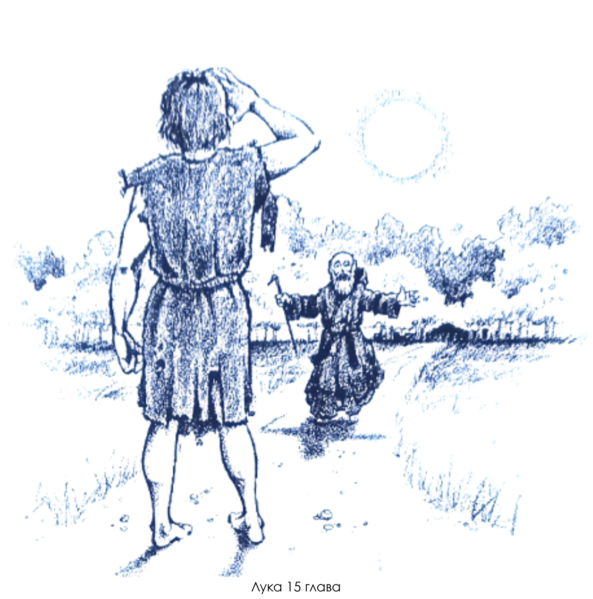
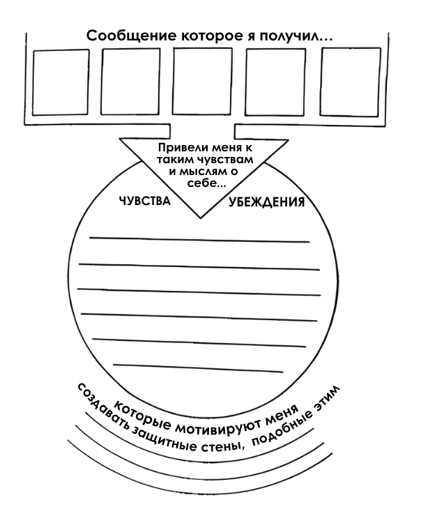
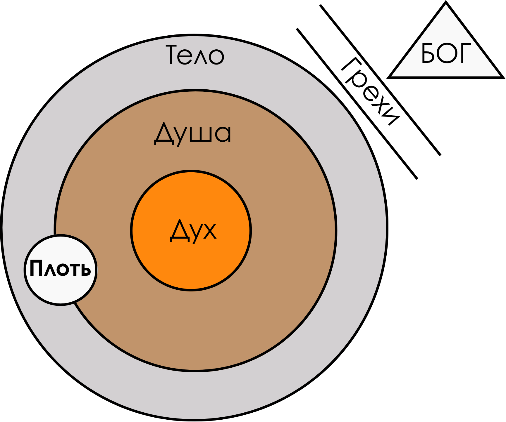
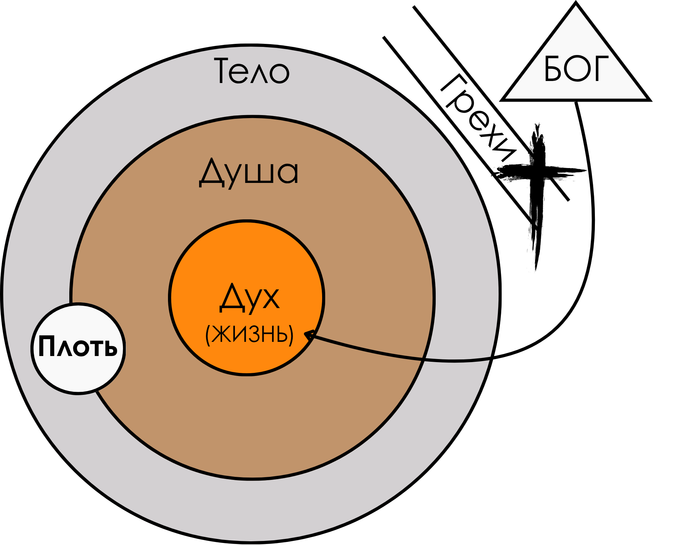
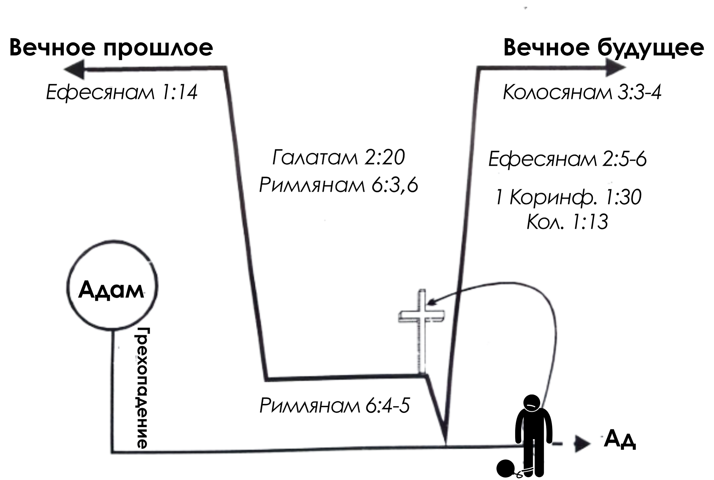

Глава 1
ИСТИНA, КОТОРАЯ ДЕЛАЕТ ВАС СВОБОДНЫМИ
ВВЕДЕНИЕ
Один священник из Англии как-то описал свою работу в городе Бристоль так: «Я помогаю тем, кто потерялся в жизни, кого не замечают, кому одиноко и от кого все отвернулись».
Возможно, вы узнаёте в этом себя: чувствуете себя потерянным, незначительным, одиноким или отвергнутым. Но есть хорошая новость: Иисус пришёл в этот мир именно для ВАС!
НАКОНЕЦ-ТО СВОБОДА!
«Иисус ответил им:
— Не здоровым нужен врач, а больным».
(Евангелие от Луки 5:31, НРП)
А ещё Он говорил о Себе так:
«Дух Господа на Мне, потому что Он помазал Меня возвещать Радостную Весть бедным. Он послал Меня провозглашать свободу пленникам и прозрение слепым, освободить угнетенных и возвестить год милости Господней».
(Евангелие от Луки 4:18-19, НРП)
Для тех, кто чувствует себя бедным, несвободным, слепым или подавленным — это потрясающая новость. Но это ещё не всё. Бог никогда не планировал оставлять нас в состоянии, где мы сломлены и не видим выхода. Именно для этого Иисус и пришёл — чтобы сделать вашу жизнь настолько яркой и полной, насколько вы даже не можете себе представить. Он пришёл, чтобы открыть вам правду, которая сделает вас по-настоящему СВОБОДНЫМИ!
«Вор приходит только для того, чтобы украсть, убить и разрушить, а Я пришел, чтобы вы имели жизнь, и причем жизнь с избытком».
(Евангелие от Иоанна 10:10, НРП)
Что такое истина?
Шаг 1: Вопрос, который меняет всё
Что такое истина? Мы постоянно ищем ее: в мнениях экспертов, в научных фактах, в собственных чувствах. Но что, если ответ гораздо проще и в то же время глубже?
Христианство предлагает неожиданную отправную точку: истина — это то, что говорит о реальности сам её Создатель, Бог. Для начала нужно просто допустить, что Его взгляд на мир может быть полнее, чем наш.
Бог определяет истину не как набор правил, а как три живые реальности:
- Истина — это Его СЛОВО. То, что Он открыл нам о жизни. (Иоанна 17:17)
- Истина — это ЛИЧНОСТЬ. Иисус Христос, который сказал: «Я и есть истина». (Иоанна 14:6)
- Истина — это СПАСЕНИЕ. Радостная Весть о том, что для вас есть выход. (Ефесянам 1:13)
Шаг 2: Почему это так важно для вас лично?
Хорошо, но какая от этого практическая польза? Огромная.
Подумайте вот о чём: если Бог говорит, что Его истина делает человека свободным, это означает, что без неё мы можем находиться в рабстве, даже не осознавая этого. В рабстве у чего? У лжи.
Это подводит нас к главной метафоре. Представьте, что ваша жизнь — это дом. Если в нём постоянно что-то рушится, трескаются стены и протекает крыша, проблема, скорее всего, не в обоях, а в фундаменте. Возможно, сам дом вашей жизни построен на ошибочном основании.
И здесь нет компромиссов. Иисус не говорил, что Он — один из путей. Он сказал, что Он — единственный путь к истине и жизни. Это заставляет нас задать себе несколько честных вопросов.
Шаг 3: Честный разговор с самим собой
Это не тест и не экзамен. Это просто возможность остановиться и заглянуть внутрь себя. Ответьте на эти вопросы так, как если бы никто, кроме вас, не услышал ответ.
- Моя жизнь идет так, как я хочу? Чувствую ли я, что всё на своих местах, или что-то фундаментально идёт не так?
- Во что я на самом деле верю? Возможно, убеждения, на которых я строю свою жизнь, оказались ложью?
- На чём стоит мой «дом»? Если честно, что является моей главной опорой в жизни? Может, этот фундамент — треснул?
- Готов(а) ли я что-то изменить? Согласен(на) ли я признать, что мне нужна помощь, и самое главное — принять её?
Шаг 4: Первый шаг к прочному фундаменту
Если вы ответили «да» хотя бы на один из этих вопросов, знайте: выход есть. Вы можете заложить новый, абсолютно надёжный фундамент для своего дома. Имя этого фундамента — ИИСУС ХРИСТОС.
Возможно, вы никогда не доверяли свою жизнь Ему. Это значит, что ваш дом до сих пор стоял на фундаменте под названием «Я сам справлюсь». Эта жизненная позиция — полная уверенность в собственных силах и независимость от Бога — и есть то, что Библия называет ГРЕХОМ.
Это не про список плохих поступков. Это про сломанный фундамент.
Но вам не нужно оставаться в доме, который вот-вот рухнет. Прямо сейчас Бог предлагает вам полное прощение и совершенно новую жизнь — Свою собственную, вечную жизнь. Вы можете принять этот дар через веру в Иисуса Христа как в своего Спасителя и главного Авторитета в жизни.
Если вы готовы сделать этот первый шаг, ниже — пример того, как можно обратиться к Богу в молитве.
Молитва
Господь Иисус, я признаю, что до этого дня строил(а) свой жизненный дом на неправильном фундаменте. Я полагался(ась) только на себя и пытался(ась) всё контролировать самостоятельно. Теперь я понимаю, что именно это Бог и называет грехом.
Я был(а) неправ(а) перед Тобой. Ты нужен мне, Господь.
Спасибо Тебе за то, что Ты умер за меня, чтобы простить все мои ошибки. Пожалуйста, войди в мою жизнь. Стань главным в ней, Господь Иисус, и сделай меня таким человеком, каким Ты хочешь меня видеть.
Спасибо, Иисус, что Ты пришёл в мою жизнь и даришь мне вечность с Тобой.
Аминь.
Подпись: _____________________________________
Дата: _____________________________________
Слово к тем, кто уже верит
Возможно, прочитав первые страницы, некоторые из вас сейчас в недоумении или даже немного раздражены.
Вы можете спросить себя: «Какое это имеет отношение ко мне? Я уже давно христианин, но моя жизнь всё ещё похожа на руины. Что же не так с фундаментом моего дома?»
Вполне возможно, что вы действительно приняли Иисуса Христа в свою жизнь. Но так же возможно и то, что в эту новую жизнь со Христом вы принесли с собой старые привычки — привычки полагаться только на себя. Вероятно, вы никогда не видели полной картины того, что Иисуса совершил на кресте — всего послания Радостной Вести.
Если спросить большинство христиан, что произошло на кресте, скорее всего, вы услышите примерно такой ответ: «Иисус пролил Свою кровь за прощение моих грехов, и благодаря этому после смерти я буду жить с Ним в раю».
Те, кто живёт с таким ограниченным пониманием «хорошей новости», видят себя просто «прощёнными грешниками», которые идут по дороге в рай. Это картина жизни, полной поражений и лишённой побед. Но Радостная Весть не может быть такой! И это правда — она намного лучше!
Дело в том, что Иисус не просто умер за ваши грехи. Он отдал вам Свою жизнь. Зачем? Во-первых, потому что Он хочет быть в близких отношениях с вами. А во-вторых, потому что Он хочет жить Своей жизнью через вас.
И это ещё не всё. Вам не нужно ждать смерти, чтобы ощутить преимущества жизни во Христе. Вы можете пережить это ПРЯМО СЕЙЧАС! Бог заявляет, что вы уже стали новым творением и получили совершенно новую личность. Вы — Его любимое дитя. Более того, Бог говорит, что Он уже посадил вас рядом с Собой, в Своём присутствии.
И это — только начало Радостной Вести.
РАДОСТНАЯ ВЕСТЬ!!!
| • Прошлое |
• Настоящее |
• Будущее |
| ВСЕ твои грехи прощены: |
| Во Христе тебе дано прощение (Ефесянам 1:7) |
Кровь Иисуса очищает тебя от любого греха (1 Иоанна 1:7) |
Если ты согрешишь, Иисус — твой Заступник (1 Иоанна 2:1) |
| Христос В ТЕБЕ — близкие отношения и победа: |
| Христос живёт в тебе (Галатам 2:20) |
У тебя близкие отношения с Богом (1 Иоанна 1:3) |
Твоя победа — в Иисусе (1 Коринфянам 15:57) |
| Твоя новая ИДЕНТИЧНОСТЬ: |
| Ты — новое творение (2 Коринфянам 5:17) |
Ты — дитя Бога (1 Иоанна 3:2) |
Ты — избранный Богом (1 Петра 2:9-10) |
Знаете, почему так важно не просто знать всю эту истину, но и по-настоящему верить в неё? Потому что...
ТО, ЧТО ВЫ ЗНАЕТЕ И ВО ЧТО ВЕРИТЕ КАК В ИСТИНУ, НАПРЯМУЮ ОПРЕДЕЛЯЕТ ВАШЕ ПОВЕДЕНИЕ.
Гадкий утёнок
Сказка Ганса Христиана Андерсена «Гадкий утёнок» — прекрасный пример того, о чём мы говорим.
Хотя он вылупился в одном утином гнезде с другими утятами, один из птенцов разительно отличался. Он был большим и некрасивым, а не жёлтым и пушистым, как его братья и сёстры. Никто не мог понять, что с ним не так — ни Мама-утка, ни Кролик, ни Индюк... ни даже сам Гадкий Утёнок!
Можете представить, что Гадкий Утёнок думал о себе?
- «Что со мной не так?»
- «Я ни на что не годен».
- «Я — неудачник».
- «Я не дотягиваю до уровня других уток».
К чему приводит такой образ мыслей? К результату, который легко угадать:
- Депрессия
- Чувство собственной никчёмности
- Ощущение провала
- Отчаянные попытки вести себя, как другие утки
- Чувство отверженности.
Но в чём же заключалась истина? Истина была в том, что Гадкий Утёнок на самом деле никогда и не был утёнком. Он был лебедем. В течение долгих зимних месяцев «утёнок» менялся. Он стал тем, кем был всегда — прекрасным и грациозным лебедем, какими могут быть только лебеди.
А теперь давайте проанализируем вот что: Гадкий Утёнок верил, что он утка, причём уродливая! Но было ли это правдой, даже если он сам так считал?
Конечно, НЕТ! Гадкий Утёнок верил в ложь, и эта вера разрушала его жизнь и поведение.
То же самое происходит и с нами. Если мы начинаем верить в ложь о себе, мы неизбежно попадаем в рабство. Если же мы верим в истину — в то, что Бог говорит о нас, — мы становимся свободными.
Когда Гадкий Утёнок увидел истину, он изменился. То же самое может произойти и с вами!
Познание Истины
Давайте, наконец, разберёмся, что на самом деле значит «познать» истину? Для этого есть веская причина, и её можно проиллюстрировать одной реальной историей.
Группа христиан собралась в церковном зале на вечернее изучение Библии. Перед началом занятия несколько участников разговорились. Один мужчина начал рассказывать руководителю группы о церковном завтраке, на котором он недавно побывал.
Оказалось, что в тот день на завтрак пригласили выступить известного исследователя Библии. В своей речи этот учёный-богослов упомянул, что недавно ему открылся новый смысл одного библейского стиха, который ставил его в тупик на протяжении многих лет.
«Когда я это услышал, — сказал мужчина, обращаясь к руководителю группы, — я подумал про себя: „Если уж этот библеист, который пишет комментарии и книги, который десятилетиями изучает Писание, только сейчас смог понять какой-то стих, то как я, обычный прихожанин, могу вообще утверждать, что я хоть что-то понимаю?“»
«Знаете, — ответил руководитель, — вместо того чтобы расстраиваться из-за слов этого исследователя, я, наоборот, воодушевлён. Его опыт лишь показывает, что понимание Божьей истины не зависит от наших интеллектуальных способностей или от количества дипломов по богословию. Напротив, истина Божья открывается нам Святым Духом».
Известный китайский христианин Вочман Ни сказал по поводу познания истины следующее:
«Настоящая христианская жизнь должна начинаться с очень точного «познания», которое не сводится лишь к знанию чего-то об истине или пониманию важной доктрины. Это ни в коем случае не интеллектуальное знание, а, скорее, открытие глаз сердца, чтобы увидеть и осознать всё то, что мы имеем во Христе.
Поэтому наш первый шаг — это искать и просить у Бога познания, которое приходит через откровение. Откровение не о нас самих, а о завершённом труде Господа Иисуса на Кресте».
«Нормальная христианская жизнь», Вочман Ни
Возможно, вы, подобно тому исследователю Библии, тоже находитесь в замешательстве по поводу части или даже всего, что вы прочитали в этой книге до сих пор. Что ж, не отчаивайтесь! Святой Дух научит вас всему, что вам нужно знать.
Перед тем как вернуться к Своему Отцу, Иисус пообещал послать ученикам Защитника (Святого Духа), чтобы они не оставались одни. Он сказал, что этот Дух истины наставит их на всякую истину.
И сегодня тот же самый Дух истины приходит к вам, желая наставить вас на всякую истину. Озарение или познание истины может прийти от Святого Духа, когда вы изучаете Слово Божье, слушаете проповедь, молитесь или в любой другой момент. Но помните: то, что будет вам открыто, никогда не будет противоречить написанному Слову Божьему — Библии.
Если вы хотите познать истину — ту, что глубже простой информации, домыслов, теории или богословия, — вот пример молитвы, с которой вы можете обратиться к Защитнику, Святому Духу, и попросить Его по-настоящему открыть ваши духовные глаза, чтобы «видеть», и ваши духовные уши, чтобы «слышать» ИСТИНУ Божью. Эта молитва подходит для всех искателей истины, будь то новообращённые «младенцы» во Христе или опытные богословы:
Святой Дух, я благодарю Тебя за то, что Ты не просто мой Защитник, но и мой Учитель — Тот, Кто может научить меня ИСТИНЕ. Я так благодарен, что познание истины зависит не от меня и моих интеллектуальных способностей, а от моей готовности позволить Тебе учить меня.
Поэтому я полностью доверяюсь Тебе и прошу: будь моим Наставником и Учителем. Я искренне хочу познать истину — ту самую истину, которая сделает меня свободным.
Аминь!
Дорогой читатель!
Это пособие для изучения Библии — не тест. Его цель — не проверить, знаете ли вы все «правильные ответы». Скорее, его следует использовать как инструмент для достижения цели, и эта цель — более ясное понимание ИСТИНЫ:
ИСТИНЫ, КОТОРАЯ СДЕЛАЕТ ВАС СВОБОДНЫМИ!
ИССЛЕДУЕМ ПИСАНИЕ
НАКОНЕЦ-ТО СВОБОДЕН
- Согласно Евангелию от Луки 5:31, Иисус описывает Себя как ______________________врача, Который пришёл для тех, кто ______________________болен, а не для тех, кто считает себя ______________________здоровым.
- Перечислите пять (5) дел, которые Иисус пришёл совершить согласно Евангелию от Луки 4:18:
a. ______________________возвещать Радостную Весть бедным
b. ______________________провозглашать свободу пленникам
c. ______________________прозрение слепым
d. ______________________освободить угнетенных
e. ______________________возвестить год милости Господней
- Человек, отделённый от Бога, является пленником или рабом ______________________греха (см. Римлянам 6:16). Поделитесь несколькими мыслями из вашего личного опыта о том, что значит быть пленником или рабом греха.
[Ваш личный ответ...](Личный ответ. Пример: Это значит быть неспособным поступать правильно, даже если хочешь; быть в рабстве у привычки, мысли или страха.)
- В Послании к Римлянам 3:10 говорится, что нет ни одного человека, который был бы ______________________праведен. «Все ______________________согрешили и лишены славы Божьей». (см. Римлянам 3:23).
- Все люди не просто неправедны, но и ______________________мертвы в своих проступках и грехах (Ефесянам 2:1). Как вы думаете, что Бог имеет в виду, когда говорит, что человек «мёртв»?
[Ваши мысли...](Пример: Духовно отделён от Бога; неспособен слышать Бога или реагировать на Него; безжизнен в духовном плане.)
- Поскольку Бог заявляет, что человек мёртв в своих проступках и грехах, мы можем понять, почему Иисус говорит в Евангелии от Иоанна 10:10б: «Я пришёл для того, чтобы имели ______________________жизнь и имели с избытком».
- Человек находится в плену, потому что он поверил в ложь (прочитайте Бытие 3). Если ложь может поработить вас, что может сделать вас свободными? (см. Иоанна 8:32).
______________________Истина
- Согласно Псалму 118:160 (119:160), истина — это ______________________сущность / основание Его Слова.
- Прочитайте следующие стихи из Библии и сопоставьте их с подходящим утверждением о том, как Бог смотрит на истину.
| A. Иоанна 1:17 | Истина — это Евангелие вашего спасения. (___D) |
| B. Иоанна 14:6 | Истина — это Личность. (___B) |
| C. Иоанна 17:17 | Слово Божье — это истина. (___C) |
| D. Ефесянам 1:13 | Истина пришла через Иисуса Христа. (___A) |
- Кем вы себя считаете: [Ваш выбор...](Личный ответ)
❑ рабом
❑ свободным
- Если вы в рабстве, какие убеждения о себе вы имеете? (Будьте конкретны).
[Ваш личный ответ...](Примеры: "Я недостаточно хорош", "Я никогда не изменюсь", "Я должен это заслужить".)
- Если вы свободны, кто или что сделало вас свободным? (Объясните).
[Ваш личный ответ...](Пример: Христос; Истина; Его жертва.)
- Согласны ли вы с тем, что утверждения Бога об истине довольно исключительны? (см. Иоанна 14:6; 1:17).
[Ваш ответ...](Да, Он не оставляет других вариантов, Он провозглашает Себя единственным путем.)
- Ответьте на следующие вопросы: [Ваши личные ответы...](Личные ответы)
a) Чувствуете ли вы, что ваша жизнь пошла не так, как вы хотели? (Да/Нет)
b) Возможно ли, что вы верили в ложь? (Да/Нет)
c) На каком фундаменте вы построили свой «дом»? ____________________
d) Готовы ли вы признать, что вам может быть нужна помощь? (Да/Нет)
e) Согласны ли вы принять помощь? (Да/Нет)
- Если вы никогда не принимали Иисуса Христа как Господа и Спасителя, ваша жизнь может быть описана как ______________________самодостаточная. Это жизнь неверия, или то, что Бог называет ______________________грехом (см. Римлянам 14:23б).
- Доверяя Сыну Божьему, Иисусу Христу, как своему личному Спасителю и Господу, вы позволяете Богу даровать вам Своё прощение и дать вам жизнь — Свою собственную жизнь. (Прочитайте и поразмышляйте над этим утверждением.)
- Объясните своими словами «Радостную Весть» Евангелия Иисуса Христа:
[Ваш личный ответ...](Пример: Бог так полюбил меня, что послал Своего Сына умереть за мои грехи, чтобы я мог иметь вечную жизнь и отношения с Ним.)
- Согласно 2 Коринфянам 5:17, каждый, кто «во Христе», тот ______________________новое ______________________творение.
- Когда мы стали новым творением, мы не просто были сделаны детьми Божьими, но также были посажены на ______________________небесных местах вместе со Христом (см. Ефесянам 2:6). Верующий уже находится в присутствии Бога.
- То, что вы знаете и во что верите как в истину, определяет ваше поведение:
❑ Верно ❑ Неверно❑ Верно
- То, во что «Гадкий утёнок» верил как в истину, влияло на его мышление и поведение. Объясните это утверждение своими словами.
[Ваш ответ...](Пример: Он верил в ложь о том, что он уродливая утка, и это заставляло его чувствовать себя неудачником и вести себя соответствующе. Когда он узнал истину (что он лебедь), его поведение и самоощущение изменились.)
- Познание истины зависит от:
❑ Интеллектуальных способностей человека
❑ Социального статуса
❑ Откровения от Святого Духа✓ ❑ Откровения от Святого Духа
❑ Обучения в духовной семинарии
- Святой Дух был послан Иисусом, чтобы наставить вас на всякую ______________________истину. (см. Иоанна 16:13).
- Перечислите несколько способов, как озарение или познание истины может прийти через Святого Духа.
a. ______________________Через изучение Слова Божьего
b. ______________________Через проповедь
c. ______________________Через молитву
d. ______________________(Другие способы, например, через общение с верующими, через обстоятельства)
Глава 2
КОГДА ПОБЕЖАЛ БОГ
Скотт Д. Бриттин
и
Барри Греку
ВВЕДЕНИЕ
В своём первом романе «Святой Бен» автор Джон Фишер знакомит читателей с Беном Бимерингом, восьмилетним сыном Джеффри Дж. Бимеринга-младшего, пастора христианской церкви на бульваре Колорадо в Пасадене, штат Калифорния.
Бен находится в поиске. В поиске чего? Он хочет знать, действительно ли Бог любит его — лично. Бен Бимеринг пытается понять: любит и ценит ли его Бог как отдельную личность, или он просто один из безликой толпы? Бен не был в этом уверен.
Он намеренно меняет слова в припеве известной песни «Иисус любит меня» и поёт:
«Да, Иисус любит меня,
Да, Иисус любит меня,
Да, Иисус любит меня,
Ведь это я так говорю».
Когда друг Бена, Джонатан, спрашивает его, почему он изменил последнюю строчку, Бен отвечает: «Я не верю в то, о чём там поётся».
«Во что именно ты не веришь?»
«Я не верю, что Иисус любит меня. Покажи мне, где в Библии написано: „Иисус любит тебя, Бен“. Я нигде не могу такого найти. В песне должно петься: „Иисус любит нас“. Тогда в этом был бы смысл. Слишком много людей поют „Иисус любит меня“, но делают это не от сердца или даже не знают, что это значит. Я говорю тебе это абсолютно искренне, тем более что Бог здесь и слышит меня. Именно поэтому я и изменил последнюю строчку. Библия не говорит мне „Иисус любит Бена“, и пока я не буду в этом убеждён, я не стану петь о том, во что не верю».
«Но разве Он умер на кресте не потому, что любит каждого из нас? Разве не в этом смысл? Я пытаюсь сказать вот что: разве мы с тобой не включены в это „каждого“?» — спросил Джонатан.
«Да, но это относится ко всем, — сказал Бен. — Он умер за всех. Но я — это не „все“. Я — Бен Бимеринг. Я просто теряюсь в толпе, если считать меня её частью».
Может быть, и вы испытываете те же сомнения, что и Бен? Знаете ли вы наверняка, что для Бога ВЫ очень важны и что ОН любит ВАС всем сердцем? Или, подобно Бену, вы чувствуете, что «теряетесь, когда вас считают лишь частью безликой толпы»?
Среди нас нет никого, кто не хотел бы чувствовать себя ценным и любимым. На самом деле, эти базовые потребности были заложены в каждого человека Самим Богом.
Зачем? Потому что Бог хочет, чтобы мы поняли: только Он один может по-настоящему удовлетворить эти потребности.
Далее мы предлагаем рассмотреть вопрос вашей ценности с точки зрения безусловной любви и принятия со стороны Бога.
Пока вы будете читать эту главу, позвольте Божьей истине проникнуть в ваше существо, в ваши самые глубокие чувства. Размышляйте и молитесь, чтобы Бог донёс Свою истину до вашего сердца, чтобы вы приняли её не только разумом.
Удивительное творение
В первой книге Библии, Бытие, или, другими словами, «книге начал», особое внимание уделяется сотворению мира и его обитателей. После завершения Своего божественного труда нам говорится: «Бог посмотрел на всё, что Он создал, и увидел, что всё это очень хорошо» (Бытие 1:31).
Эта Божья оценка Своего творения включала и человечество, представленное Адамом и Евой. В других отрывках Библии мы видим, что нас с вами также называют дивными творениями (Псалом 138:14).
Попробуйте поставить себя на место царя Давида, который в 8-м Псалме, если перефразировать, говорит: «Господи, Ты видишь во мне такую огромную ценность... это настолько хорошо, что даже не верится!» Вот цитата из его псалма:
Когда я смотрю на Твои небеса — творение Твоих рук,
на луну и на звезды, которые Ты поставил,
то думаю: «Что такое смертный человек, что Ты помнишь его,
и просто человек, что Ты заботишься о нем?»
(Псалом 8:4-5, Новый Русский Перевод)
Бог решил любить тебя
Знаете, почему Бог любит вас и почему вы так важны для Него? Потому что любовь — это сама суть Бога. Помните, мы уже говорили о том, что, по словам Иисуса, Он пришёл, чтобы ВЫ имели ЖИЗНЬ, и притом жизнь с избытком (Иоанна 10:10б). Бог (Который и есть любовь) желает для вас самого лучшего!
Он видит и в христианах, и в неверующих сокровище, жемчужины огромной ценности. Но что именно это означает?
В притчах о Царстве, которые мы находим в 13-й главе Евангелия от Матфея, вы можете увидеть, какой ценностью вы обладаете в глазах Бога. Первая притча Иисуса в Матфея 13:3-23 описывает, как человек слышит Слово Божье.
После того как Иисус объяснил ученикам эту притчу, Он продолжил учить людей о Царстве Небесном (Матфея 13:24-52). Первая притча — о человеке (Сыне Человеческом — Иисусе), который посеял доброе семя на своём поле. Далее мы видим, как враг (сатана) посеял среди пшеницы сорняки (плевелы). Хозяин поля позволил сорнякам расти вместе с пшеницей до времени жатвы. Ученики не смогли понять смысл притчи, поэтому подошли к Иисусу с вопросами. Иисус объяснил им, что сеятель — это Он Сам, а поле — это мир. Доброе семя — это сыны Царства, а сорняки — сыны лукавого. Это единственная притча о Царстве, которую Иисус объясняет. Его объяснения помогут понять и другие притчи, к которым толкования не даны.
В каждой притче аспекты, представленные Христом, касаются развития, собирания, обретения или роста Царства Небесного. Царство Небесное состоит из сынов Царства (ст. 38). Христос в этих притчах рассказывает о росте этой группы сынов Царства. Первая притча описывает, как Бог собирает сынов Царства. Вторая — о горчичном зерне — сравнивает рост этой группы с ростом семени. Третья притча объясняет, что развитие этой группы подобно действию закваски в тесте. Шестая притча сравнивает собирание сынов Царства с ловлей рыбы неводом, после чего следует сортировка хорошей и плохой рыбы. Эти притчи показывают, как Бог обретает для Себя сынов Царства.
Но что насчёт четвёртой и пятой притч? Четвёртая рассказывает о сокровище, спрятанном в поле, а пятая — о жемчужине. Обычно эти две притчи неверно истолковывают, будто бы, когда мы находим сокровище (предположительно, Христа) в поле, мы должны захотеть купить это поле, чтобы обрести вечную жизнь во Христе. И когда мы находим прекрасную жемчужину (снова, предположительно, Христа), мы должны продать всё, что имеем, чтобы купить её. Безусловно, мы должны быть готовы отказаться от всего ради Христа, но такое толкование, похоже, упускает главный акцент всего отрывка.
Повторимся, акцент во всех остальных притчах делается на том, как Христос собирает, развивает, взращивает и обретает сынов Царства в единое целое, в группу людей, которая и составляет Царство Небесное. Если мы будем следовать этой логике и акцентам, мы придём к выводу, что тот, кто находит сокровище в поле, и тот, кто покупает жемчужину — это Иисус, а не мы. Во-вторых, сокровище и жемчужина — это не Христос (хотя мы нисколько не сомневаемся в Его бесценности, мы лишь хотим понять истинный смысл этого отрывка), а сыны Царства, которых Сам Христос искупает. Христос увидел в нас бесценное сокровище, жемчужину, за которую Он отдал всё, что имел, чтобы искупить её.
Христос, найдя тебя, словно спрятанное сокровище и драгоценную жемчужину на поле этого мира — тебя, кого этот мир оценил не дороже безделушки, стоящей несколько грошей, — продал всё, что имел, и отказался от всего, чем обладал, ради тебя.
Бог Сам определяет твою ценность
Бог знал истину. Точнее, Он Сам её и определил.
В книге Деяний Апостолов 20:28 написано, что Бог приобрёл нас Себе собственной Кровью. А в Послании к Филиппийцам 2:5-8 объясняется, как Христос, Сын Божий, фактически отказался от всего, что имел. В Послании к Галатам 2:20 говорится, что Иисус «отдал Себя» за «меня». Здесь всё сказано в единственном числе, для одного человека, а значит — для меня! Теперь ни вы, ни тот мальчик, Бен Бимеринг, больше не являетесь незначительной частичкой толпы, частью этого безликого «всякого».
Иисус всегда был един с Богом, но не считал нужным любой ценой держаться за Своё равенство с Ним. Вместо этого Он уничижил Себя Самого, приняв образ человека, и даже раба. Затем Он пошёл ещё дальше, смирил Себя ещё больше — Он стал настолько послушен Своему призванию, что принял смерть на кресте. Он сделал всё это, потому что знал и Сам определил, в чём заключается истина. Он ценил вас больше всего, что у Него было, — даже больше собственной жизни. Он решил, что вы — сокровище, драгоценная жемчужина.
Теперь напрашивается вопрос: как же так получилось, что вы стали сокровищем или драгоценной жемчужиной? Можете ли вы постепенно превратиться в нечто подобное? Конечно же, нет! Вы — сокровище, жемчужина, потому что Бог решил наделить вашу личность ценностью, независимо от ваших дел. Бог в Своей верховной власти постановил, что вы — сокровище, жемчужина.
Поскольку Бог отдал всё, что у Него было, ради вас — саму жизнь Иисуса, чтобы приобрести вас, — теперь Он имеет право заявить, что для Него вы стоите столько же, сколько стоит Иисус. Что после этого вы можете сказать о себе?
Это не имеет ничего общего с тем, насколько хорошо или плохо вы справляетесь с делами в той или иной области. Всё дело в том, что Бог считает вас ценным.
Эмоциональный Бог?
«Хорошо, — скажете вы, — я начинаю понимать, что я — драгоценная жемчужина в глазах Бога, что я обладаю огромной ценностью для Него. Это всё ещё трудно принять, но я хочу в это верить».
А теперь мы хотели бы, чтобы вы увидели ещё одну грань вашей ценности. Знаете ли вы, что Бог БЕЖИТ за вами? «Бог бежит за мной?» — спросите вы. Да, именно так!
Чтобы понять, что мы имеем в виду, когда говорим, что Бог бежит, мы должны сперва осознать, что Бог — это не Бог одного лишь разума. Он — Бог эмоций, Который испытывает чувства, очень похожие на наши. Однако это не значит, что Бог находится во власти Своих эмоций или что Его чувства могут заставить Его поступить вопреки истине, как это бывает с нами. Итак, Он испытывает радость, печаль, гнев и любовь. Бог любит нас не только на интеллектуальном, но и на эмоциональном уровне. Его эмоциональная любовь всегда уравновешена Его разумной любовью. Например, если Бог знает, что для нашего роста нам нужно пройти через болезненный опыт, то Его разумная любовь будет определять Его действия.
Блудный сын
 Давайте взглянем на отрывок из Евангелия от Луки 15:11-32, который является картиной отношений Бога с нами. Мы привыкли считать, что это история о блудном сыне, но на самом деле эта история не столько о блудном сыне, сколько об отце с двумя заблудшими сыновьями. В этом контексте мы видим три разные иллюстрации, которые показывают, как Бог радуется, когда находится один из Его потерянных детей. Мы видим это в притче о потерянной овце, потерянной монете и блудном сыне. Притча о блудном сыне раскрывает эмоции, которые Бог испытывает по отношению к нам; отец в этой притче представляет Бога. Два сына показывают два типа реакций, которые может проявлять верующий. Младший сын, который не мог конкурировать со старшим братом в достижениях, чтобы заслужить принятие окружающих, решил восстать против образа жизни своего отца. Он подошёл к отцу, попросил отдать ему его долю наследства, а затем отправился в далёкую страну. Там он растратил всё своё состояние, живя на широкую ногу, — вероятно, в поисках любви и принятия.
Давайте взглянем на отрывок из Евангелия от Луки 15:11-32, который является картиной отношений Бога с нами. Мы привыкли считать, что это история о блудном сыне, но на самом деле эта история не столько о блудном сыне, сколько об отце с двумя заблудшими сыновьями. В этом контексте мы видим три разные иллюстрации, которые показывают, как Бог радуется, когда находится один из Его потерянных детей. Мы видим это в притче о потерянной овце, потерянной монете и блудном сыне. Притча о блудном сыне раскрывает эмоции, которые Бог испытывает по отношению к нам; отец в этой притче представляет Бога. Два сына показывают два типа реакций, которые может проявлять верующий. Младший сын, который не мог конкурировать со старшим братом в достижениях, чтобы заслужить принятие окружающих, решил восстать против образа жизни своего отца. Он подошёл к отцу, попросил отдать ему его долю наследства, а затем отправился в далёкую страну. Там он растратил всё своё состояние, живя на широкую ногу, — вероятно, в поисках любви и принятия.
И так случилось, что как только у него закончились деньги, в стране начался голод, и он стал нуждаться. В итоге этот молодой еврей дошёл до того, что пас свиней, чтобы заработать себе на пропитание. Сын впал в такое отчаяние, что был готов набить желудок едой, которую ели свиньи, но и той ему никто не давал. Правда в том, что если бы кто-то пришёл ему на помощь в тот период, он бы только помешал тому процессу, через который юноше нужно было пройти. Если бы ему помогли, возможно, он никогда бы не вернулся домой. Ему нужно было осознать своё бессилие.
Один христианский консультант рассказал следующий случай: «Я знал одного молодого человека, который был опечален и даже зол на свою церковь, потому что её члены, как он считал, разочаровали его. Он нуждался в общении с ними, а они не уделяли ему достаточно внимания. Вполне возможно, что церковь в чём-то и подвела его, однако Бог обещал восполнить все его нужды. Следовательно, либо Бог обманул его ожидания, либо ему нужно было не столько общение, сколько отсутствие общения, которое должно было научить его гораздо большему».
То же самое было и с блудным сыном: он нуждался в еде, но в пустом желудке он нуждался ещё больше. Потребность не получать никакой еды была в тот момент важнее.
Ошибочные представления
Сын принял решение о том, что ему делать. Он устроил генеральную репетицию речи, которую собирался произнести перед отцом. В ней он хотел признать свою неправоту и то, что он больше не достоин называться его сыном; однако он был готов стать рабом у отца, чтобы взамен получать еду. Его лаконичная речь говорит нам о его образе мыслей. С одной стороны, он был прав, признавая свою ошибку. Но когда он говорит: «Я уже недостоин называться твоим сыном, прими меня в число наёмников твоих», он обнажает некоторые ошибочные идеи.
Во-первых, кто имел право оценивать, достоин он или нет? Блудный сын не мог определить свою ценность как сына, это мог сделать только отец. То же самое и с нами — мы не можем устанавливать, достойны мы или нет. Только Отец имеет на это право.
Второе ошибочное представление мы находим во фразе: «Я уже недостоин». Это указывает на то, что до определённого момента сын считал себя достойным, но теперь — перестал. Причина этого видимого изменения в его представлении о заслугах кроется в греховной природе его поведения. Сын чувствует, что стал недостойным из-за своего греха. По сути, сын говорит: «Я — это то, что я делаю» или «Моё поведение определяет, достоин я или нет». Раньше, когда он был послушен отцу, он заслуживал звания сына. Теперь, проявив непослушание, он больше не достоин. В чём же истина? Был ли сын достоин? Без сомнения, сын по-прежнему был достоин называться сыном своего отца. С момента своего рождения сын был достоин называться «сыном», потому что он им и был по рождению, и это был свершившийся факт. Таким образом, он по-прежнему был достоин, даже после своего греховного поведения, потому что он по-прежнему был сыном. Другими словами, когда он согрешил, его поступки не соответствовали его идентичности.
Последнее ошибочное представление мы замечаем, когда сын говорит: «Прими меня в число наёмников твоих». Сын чувствовал себя настолько недостойным благосклонности отца, что теперь мог воспринимать себя только в качестве слуги, а не сына. Наёмник слушается и работает из чувства долга, потому что должен, а не потому что хочет. Исходя из реалий того времени, когда была рассказана эта притча, следует отметить, что слуга работал в надежде получить скудные блага раба. Он должен был служить непрестанно, иначе мог потерять благосклонность господина. Он не мог отдохнуть из-за страха быть уволенным. Он мог даже лишиться благословения хозяина, если не выполнял его приказы. Блудный сын был убеждён, что потерял благосклонность отца, и поэтому надеялся, что сможет вернуть её, работая на него.
Дорогой читатель, именно в таком положении находится большинство христиан. Они согрешили каким-то образом, один раз или многократно, а затем вернулись к Богу и исповедали свой грех, признав, что они недостойны. После этого они обязуются больше никогда не поддаваться этому греху, а служить Богу. Более того, они намереваются компенсировать своё падение. Тем самым они живут в отношениях «господин-раб» с Богом.
Старший брат
Младший сын — не единственный, у кого есть проблемы в этой притче. Давайте познакомимся и со старшим братом. В этом отношении он ничем не отличается от младшего. Он преданно работал на своего отца, однако делал это, исходя из того же понимания отношений по типу «господин-раб». И когда он узнал, что его брат был принят обратно и наслаждается любовью отца, он рассердился. Этот гнев указывает на его ошибочные убеждения.
Старший сын верил, что благословение отца нужно заслужить. На вопрос отца он ответил так: «Вот, я столько лет служу тебе и никогда не нарушил твоего приказа! А ты мне никогда не дал даже козлёнка, чтобы я повеселился с друзьями!» Старший сын считал, что он должен был заработать откормленного телёнка.
Многие ли из нас сердятся, когда видят, что другие христиане получают похвалу или благословение от Бога, в то время как мы-то знаем, что были, возможно, даже более верными или послушными? После всего, что мы сделали для Бога, это кажется несправедливым. И таким образом, вместо того чтобы радоваться возвращению брата или его благословению, мы начинаем завидовать.
Ответ отца
Самое важное в этой притче — это не реакция младшего или старшего сына, а реакция отца. Акцент делается на ответе отца по возвращении обоих сыновей.
Мы видим, что отец отвечает старшему сыну: «Сын мой, ты всегда со мной, и всё моё — твоё». Отец разделил своё имущество между двумя сыновьями ещё тогда, когда младший сын попросил свою долю наследства (стих 12). Но теперь старший сын пытался заслужить то, что ему уже принадлежало! Отношение отца было не осуждающим, а, скорее, направленным на то, чтобы помочь сыну, даже если для того общение с отцом в тот момент было не самым важным. Отец выражает свою любовь к сыну, напоминая ему, что ему больше не нужно ничего заслуживать — всё уже принадлежит ему.
Любовь отца — дарованная, а не заслуженная
Нам тоже не нужно ничего заслуживать у Бога. Нет необходимости работать усерднее, чтобы обрести качества Христа или чтобы Он нас полюбил. Бог уже разделил Своё безграничное достояние между Своими детьми в лице Иисуса Христа. Когда мы приняли Христа, мы получили и всё, что принадлежит Ему. Всё принадлежит нам по праву наследования, по праву рождения. Это наш дар от Отца.
Дорогой читатель, понимаете ли вы все последствия вашего наследия — наследия, которое уже ваше? Если вы никогда не сталкивались с безусловной любовью, можете ли вы принять её и раствориться в любви Отца к вам? Некоторые, кто, казалось бы, понимает безграничную любовь Бога, часто борются и стремятся стать «больше похожими на Иисуса», но сталкиваются лишь с новыми и новыми разочарованиями. Понимаете ли вы, что вы уже унаследовали черты Христа? Всё, что принадлежит Христу, — ваше!
Давайте теперь рассмотрим и другие аспекты ответа отца младшему сыну. Подобно многим христианам, младший сын растратил то, что дал ему отец. Он не смог мудро использовать преимущества своих отношений с отцом. Однако даже на фоне этого полного провала любовь отца никуда не делась. И выражалась она не в принуждении или манипуляциях, а лишь в ожидании. Это была не просто рациональная любовь, которую отец испытывает к сыну. Когда блудный сын опомнился и вернулся домой, отца переполнили эмоции.
Писание говорит нам, что сын был ещё далеко от дома, когда отец увидел его и сжалился над ним. Мы видим, что отец ждал его и всё время высматривал, не идёт ли он, вероятно, зная, что в конце концов тот вернётся. И когда он видит его вдалеке, ему становится его жаль. Он не почувствовал ни ненависти, ни гнева, ни обиды, ни горечи. Его сердце наполнилось состраданием и любовью. И тогда отец побежал ему навстречу! Он сделал это не для того, чтобы осудить или накричать на него, а чтобы обнять и поцеловать.
Отец не просто обнял и поцеловал сына, но и дал ему одежду, чтобы тот оделся, и надел ему на палец дорогой перстень. Затем он заколол для сына откормленного телёнка и устроил праздничный пир. Это похоже на празднование победы, на чествование героя, который с триумфом возвращается с битвы, но на самом деле это — выражение эмоций отца по случаю возвращения его заблудшего дитя.
Бог бежит к тебе
Заслуживал ли сын такого ответа от отца? — ДА! Потому что он был его сыном. Была ли эта реакция вызвана поведением сына? — Вовсе нет. Отец принимал сына таким, какой он есть, а не за то, что он сделал. Отец был недоволен поведением сына, но тот по-прежнему оставался его сыном!
Теперь вспомните, что отец представляет Бога. Это единственный раз в Библии, когда Бог изображён бегущим. Он бежит, чтобы обнять своего сына (буквально, пасть ему на шею) и поцеловать его. Этот жест передаёт те эмоции, которые Бог испытывает к вам. Он бежит к вам из сострадания и любви, потому что желает обнять и поцеловать вас. Бог бежит к вам!
Большинство верующих обычно думают, что Бог сердится на них. «Он непременно накажет и осудит меня!» — думают они. Но на самом деле всё наоборот: сердце Бога сокрушается из-за греха, но оно наполнено любовью и нежностью к Своему дитя. Эмоции, которые испытывает Бог, заставляют Его бежать к Своему ребёнку, а значит — к вам!
Именно этот аспект Его нежной любви описан в Книге пророка Исаии 43:1-4. Формально эти слова адресованы народу Израиля, но эмоции, которые Бог испытывает к Израилю как к народу, схожи с теми эмоциями, которые Он испытывает к верующему сегодня. Книга Исаии описывает, с одной стороны, мятеж народа Божьего, а с другой — любовь Бога к ним.
А теперь так говорит Господь,
сотворивший тебя, Иаков,
и создавший тебя, Израиль:
«Не бойся, ведь Я искупил тебя;
Я позвал тебя по имени — ты Мой.
Будешь ли переходить через воды — Я с тобой,
через реки — они тебя не потопят.
Пойдешь ли через огонь — не обожжешься,
и пламя тебя не опалит.
Ведь Я — Господь, твой Бог,
Святой Израиля, твой Спаситель.
Я отдам Египет выкупом за тебя,
Куш и Саву — вместо тебя.
Потому что ты дорог в Моих глазах,
почтен, и Я тебя люблю».
(Книга пророка Исаии 43:1-4, Новый Русский Перевод)
Обратите особое внимание на то, что Бог говорит в четвёртом стихе: «Потому что ты дорог в Моих глазах, почтен, и Я тебя люблю!» Бог говорит это мятежному народу, но Он обращается и к вам, независимо от того, что вы сделали — хорошего или плохого. Есть лишь одна причина, по которой Бог испытывает эти переполняющие Его эмоции. Мы видим её в первом стихе. Он заявляет: «Ты — Мой!» Вот так просто. Это та же причина, по которой отец любил своего блудного сына — просто потому, что тот был его сыном. Ничто не может отлучить вас от любви Божьей. Вы принадлежите Ему!
Принятие Отцовской любви
Это свершившийся факт, который нужно принять верой. Если вы будете искать доказательства Его любви в окружающих вас обстоятельствах, то иногда вы будете чувствовать себя любимым, а иногда — нет. В отрывке из Книги пророка Исаии говорится: «когда будешь переходить через воды» и «когда будешь переходить через реки», а не «если будешь». Уверенность в Его любви должна быть принята верой. Она должна укорениться в вашем сердце, если вы хотите быть победителем и познать мир, проходя через испытания. Если вы в это не верите, все остальные аспекты вашего христианского пути могут быть омрачены искажённым пониманием.
Вопрос не в том, можете ли вы её принять, а в том, примете ли вы её? Примете ли вы Его любовь как факт, не зависящий от того, что вы можете сделать для Него, и вопреки всему, что вы сделали против Него? Решитесь ли вы верить в неё вопреки обстоятельствам или вашим эмоциям?
Возлюбленное дитя Божье, можете ли вы представить себе Бога, бегущего к вам, переполненного радостью от вашего присутствия? Он любит вас, ценит вас и эмоционально к вам привязан. Всемогущий Бог, Царь царей и Господь господствующих бежит к вам, чтобы явить Свою любовь и принятие!
Бежал ли Бог? — Да, несомненно! Почему? — Потому что вы — Его дитя и имеете ценность в Его глазах. Он жаждет выразить вам Свою любовь. Заслуживаете ли вы, чтобы Он бежал к вам? Бог считает, что да, потому что вы — Его. Примете ли вы Его?
Чьему ценнику вы поверите: тому, что навесил на вас мир, тому, что вы сами на себя повесили, или тому, что установил Бог? Истина в том, что вы — спрятанное сокровище Бога! Драгоценная жемчужина — это ВЫ!
Это может остаться для вас лишь интеллектуальным знанием. Но есть ли у вас уши, чтобы слышать? Подумайте об этом, позвольте этой мысли проникнуть в ваше сердце и соединиться с вашими чувствами.
Это и есть истина — Истина, которая делает вас свободными!
ИССЛЕДУЕМ ПИСАНИЕ
СОКРОВИЩЕ И ЖЕМЧУЖИНЫ
- Каждый человек хочет чувствовать себя важным и любимым. Эти потребности в нас заложил Бог. Но с какой целью они были в нас заложены? (Сравните Ефесянам 3:19 и Матфея 6:8)
[Ваш ответ...](Пример: Чтобы мы поняли, что только Бог может их по-настоящему восполнить.)
- Прочитайте следующие стихи из Писания: Иоанна 3:16, 1 Иоанна 4:9-10, Римлянам 5:8, Ефесянам 2:4-5.
a. Основываясь на этих стихах, объясните, каким образом Бог выразил Свою любовь к вам:
[Ваш ответ...](Пример: Он отдал Своего Сына, Иисуса, умереть за нас, когда мы были еще грешниками.)
b. Согласно этим стихам, что вы должны делать или как себя вести, чтобы Бог вас любил? Объясните:
[Ваш ответ...](Ничего. Его любовь безусловна и не зависит от наших дел. Он полюбил нас первым.)
- Согласно Деяниям 20:28, Бог приобрёл вас Своей ______________________Кровью. Какова ценность Крови Божьей?
[Ваш ответ...](Она бесценна.)
- Кто определяет вашу ценность?
[Ваш ответ...]Бог
- За кого Бог отдал Самого Себя? (см. Галатам 2:20).
[Ваш ответ...]За меня
- В Евангелии от Матфея 13:44 говорится о человеке, который нашёл сокровище в поле. Кто этот человек?
[Ваш ответ...]Иисус (Сын Человеческий)
- Что это за сокровище?
[Ваш ответ...]Сыны Царства (верующие, мы)
- Кто тот купец из Евангелия от Матфея 13:45, который ищет жемчужины?
[Ваш ответ...]Иисус
- Что это за жемчужина, ради которой купец готов продать всё, что у него есть?
[Ваш ответ...]Сыны Царства (мы)
- Что эти стихи говорят о той ценности, которой вы обладаете в глазах Бога?
[Ваш ответ...](Пример: Мы для Него — бесценное сокровище, ради которого Он отдал всё.)
- Бог никогда не позволит мне пройти через болезненный опыт.
❑ Верно ❑ Неверно❑ Неверно (Он может допустить это для нашего роста, как в случае с блудным сыном.)
- Основываясь на истории о блудном сыне (Луки 15:11-32), объясните, кого представляют следующие персонажи?
a. Отец ______________________Бог
b. Младший сын ______________________Верующий, живущий во грехе / непослушании
c. Старший сын ______________________Верующий, живущий по плоти / в самоправедности (законник)
- Когда младший сын решил вернуться к отцу, какого обращения он ожидал от него?
[Ваш ответ...](Он ожидал, что его примут как раба/наёмника, а не как сына. Он ожидал осуждения.)
- Отец встретил сына в соответствии с его ожиданиями?
❑Да ❑Нет❑Нет
Объясните. ...(Отец побежал ему навстречу, обнял, поцеловал и устроил пир. Он встретил его с любовью и принятием, а не с осуждением.)
- Как, по-вашему, Бог принимает вас? Поступает ли Он так же, как отец из этой истории? Объясните.
[Ваш личный ответ...](Да, Он бежит к нам с любовью и состраданием, когда мы возвращаемся к Нему.)
- Как вы думаете, был ли старший сын полностью убеждён в любви своего отца? Почему да или почему нет?
[Ваш ответ...](Нет. Он всё ещё пытался *заслужить* любовь и благословения отца своими делами. Он не понимал, что всё, что у отца есть, и так принадлежит ему.)
- Заслуживал ли младший сын такой реакции отца?
❑ Да ❑ Нет❑ Да
Объясните. ...(Да, потому что он был его *сыном*. Его ценность определялась его *идентичностью*, а не его *поведением*.)
- Можно ли заслужить Божью любовь, или это безвозмездный дар? (см. 1 Иоанна 4:9-10)
[Ваш ответ...](Это безвозмездный дар. Бог полюбил нас первым, не потому что мы что-то сделали.)
Глава 3
ОТВЕРЖЕНИЕ
ВВЕДЕНИЕ
Эта глава — не психологическая формула, которая поможет вам почувствовать себя лучше, и не очередной набор из серии «пять шагов к счастью». Это провозглашение истины — наивысшей истины, — которая исходит только от Бога.
Истина, исходящая от самого Бога, реальна и очень лична. Её можно попробовать на вкус и описать её восхитительный характер. И, как и в случаях, когда вы попробовали что-то невероятное, вы вдохновляетесь и хотите поделиться этим «рецептом» с другими.
Именно об этом говорит и псалмопевец: «Вкусите и увидите, как благ Господь».
Надеемся, вам понравится это угощение — оно готовилось долго и специально для вас.
ОТВЕРЖЕНИЕ
«В мире есть два типа людей — те, кого отвергали, и те, кого отвергали очень сильно».
Чарльз Р. Соломон
16-летний мальчик подавленно сидел на потрёпанном диване. Люди, у которых он жил в этот раз, сказали ему собирать вещи. Ему предстояло переехать снова — в 27-й раз за свои 16 лет. Кто его настоящие «папа и мама», он не знал. Ему говорили, что они неизвестны. Возможно, где-то у него был брат, но никто не знал, где.
Бобби ждал. Казалось, он всю жизнь сидел и ждал — ждал, когда появится брат, мама, папа, спальня, которая будет только его, плакаты на его собственных стенах, место, которое он сможет назвать «домом». Он надеялся, что сегодня всё изменится. Его переводили в новую приёмную семью в другой части города. Говорили, что женщина там — настоящая «мама». Бобби возлагал большие надежды на это место, но и её он в итоге разочаровал своим обычным подростковым поведением.
Для Бобби самой близкой моделью семьи были органы опеки — государственная служба, которая перемещала его из одной временной семьи в другую. Опека была его официальным попечителем. Они оплатили врача, который исправил ему зубы, и платили приёмным семьям ежемесячное пособие за его содержание.
«Куда ты теперь, Бобби?» — это был Карл, 12-летний мальчишка, который тоже нигде не мог прижиться и научился выживать, задавая по 500 вопросов в день. Он тоже был сиротой и давно перестал искать свой дом. Бобби он не нравился.
«Я нашёл настоящую семью. У меня будут родители, скоро я получу права, а потом — собственную машину. Какую-нибудь крутую тачку».
Бобби всегда жил надеждой. Именно она помогала ему двигаться дальше, обещание чего-то лучшего — своя машина, девушка, поступление в престижный вуз. Бобби хотел стать кем-то важным, может быть, даже оказаться в центре всеобщего внимания.
В чём заключалась самая большая потребность Бобби?
Если бы вам поручили разобраться в его ситуации, что бы вы ему сказали? Вы знаете его историю: сирота на попечении государства, трудный подросток, одинокий и запутавшийся мечтатель. Какой диагноз вы бы ему поставили? В чём его истинная проблема? И как её решить?
Кто бы ни ставил диагноз — соцработники, психологи в элитной школе или волонтёры, помогающие тысячам беспризорников, — диагноз был бы один: ОТВЕРЖЕНИЕ! Полное отсутствие настоящей любви с одной стороны, и пренебрежение человеческим достоинством — с другой.
От бунтаря с синими волосами, чьи родители — состоятельные люди, до ученика престижной школы, который ни во что не ставит отца и мать — отвержение встречается повсюду. А там, где есть отвержение, процветают всевозможные попытки это скомпенсировать — от вызывающего и разрушительного поведения до отчаянного стремления добиваться успеха и признания.
Позвольте теперь спросить вас: «Вас когда-нибудь отвергали? И где вы искали принятия? Возможно, вы стремитесь к успеху, у вас есть цели, которые держат вас в тонусе, но за этим фасадом «сильного человека» скрывается маленький ребёнок, который просто хочет быть для кого-то важным — хотя бы для самого себя».
ИССЛЕДУЕМ ПИСАНИЕ
ОТВЕРЖЕНИЕ
Прежде чем вы приступите к изучению Божьего противоядия от отвержения (Его любви и принятия), я приглашаю вас поразмышлять над следующими характеристиками истины:
- Во-первых, Бог есть истина (Иоанна 17:17).
- Во-вторых, истина освобождает (Иоанна 8:32).
- И, наконец, истина не основывается на ваших чувствах, вашем опыте или на том, что вы считаете правдой. Истина — это то, что говорит Бог!
Как мы уже говорили в начале этой главы, когда речь заходит об отвержении, в мире есть только две категории людей: те, кого отвергали, и те, кого отвергали очень сильно! Вероятно, вы согласитесь, что невозможно прожить в этом мире, не столкнувшись с каким-либо видом отвержения?
- Вспомните несколько случаев, когда вас отвергали:
a) [Ваш личный ответ...](Личный ответ)
b) [Ваш личный ответ...](Личный ответ)
c) [Ваш личный ответ...](Личный ответ)
- Какие «послания» о себе вы получили (и, возможно, поверили в них!) в результате этого отвержения?
(Например: «Ты — никто» или «Ты никогда не будешь иметь значения»)
a) [Ваш личный ответ...](Личный ответ)
b) [Ваш личный ответ...](Личный ответ)
c) [Ваш личный ответ...](Личный ответ)
d) [Ваш личный ответ...](Личный ответ)
- Каковы некоторые из ваших способов справляться с отвержением?
a) [Ваш личный ответ...](Личный ответ, например: уход в работу, перфекционизм, угождение людям, изоляция)
b) [Ваш личный ответ...](Личный ответ)
c) [Ваш личный ответ...](Личный ответ)
d) [Ваш личный ответ...](Личный ответ)
- Вспомните случай, когда женщина у колодца встретила Иисуса (Иоанна 4:4)? Опишите ниже своими словами, как она пыталась найти принятие, в котором нуждалась.
[Ваш ответ...](Пример: Она искала принятия в отношениях с мужчинами, переходя от одного к другому (у нее было пять мужей, и тот, с кем она жила, не был ей мужем).)
- Прочитайте Филиппийцам 3:4-6. Как апостол Павел пытался найти свою идентичность, ценность и принятие?
[Ваш ответ...](Через свое происхождение (еврей из евреев), религиозный статус (фарисей), ревность (гонитель церкви) и исполнение закона (непорочный по правде законной).)
- Где, в конечном счёте, по словам Павла, он нашёл свою истинную идентичность, ценность и принятие? – Филиппийцам 3:7.
[Ваш ответ...](Во Христе. Он посчитал все свои прежние достижения "тщетою" (мусором) ради познания Христа.)
То, как человек видит самого себя, свою идентичность, способности и ценность, называется самовосприятием.
Ниже приведены несколько способов, с помощью которых люди формируют своё самовосприятие. Проверьте примеры в Библии и запишите несколько мыслей, которые приходят вам в голову о каждом из них:
- a. Внешность (Авессалом; 2 Царств 14:24-26)
[Ваши мысли...](Пример: Красота дала ему гордость и стала причиной его падения.)
- b. Поведение (фарисей; Луки 18:9-14)
[Ваши мысли...](Пример: Он строил свою ценность на своих делах и превозносился над другими, но не был оправдан Богом.)
- c. Наследие или семья (иудеи в разговоре с Иисусом; Иоанна 8:23-47)
[Ваши мысли...](Пример: Они гордились происхождением от Авраама, но Иисус показал, что истинное родство определяется духовным состоянием.)
- d. То, каким, по мнению человека, его видят другие (царь Саул и случай с Агагом; 1 Царств 15)
[Ваши мысли...](Пример: Саул боялся мнения народа больше, чем Бога, и это привело к непослушанию и потере царства.)
- e. То, что, по мнению человека, Бог думает о нём (блудный сын из Луки 15. См., в частности, стихи 15-19)
[Ваши мысли...](Пример: Сын думал, что из-за греха он потерял право быть сыном и достоин только роли раба. Его восприятие Бога было искажено.)
И снова, если мы вернёмся к словам апостола Павла (в Филиппийцам 3:4-6), мы увидим человека, который строил свой образ в первую очередь вокруг своего духовно-культурного наследия (семьи) и своей религиозной деятельности.
Согласно Слову Божьему, в мире есть только 2 идентичности — две категории семейной принадлежности. Важно их знать, потому что одна из них отвергнута Богом, а другая — принята.
Одна из этих семей ищет любовь, принятие и чувство ценности (самовосприятие) вне Бога. Бог отвергает эту категорию искателей. Члены другой семьи нашли своё принятие, восполнение нужд и самовосприятие в Боге. Эта категория искателей принята Богом.
Давайте поближе посмотрим на эти две категории идентичности. Во-первых, давайте назовём их так, как мы видим их в Слове Божьем:
- a. семья «в Адаме» (1 Коринфянам 15:22)
- b. семья «во Христе» (Ефесянам 1:3-6)
Членом какой семьи являетесь вы и на каком основании? И каковы последствия пребывания в каждой из семей?
Всё довольно просто. Единственное требование для членства в семье «в Адаме» или «во Христе» — это рождение.
Все, кто рождён биологически, в обычном смысле этого слова, автоматически становятся частью семьи «в Адаме».
- В Послании к Римлянам 5:12 говорится: «Посему, как одним человеком грех вошёл в мир, и грехом смерть, так и ___________смерть перешла во всех ___________человеков, потому что в нём все согрешили».
Здесь мы видим один принцип. Когда Адам, прародитель человеческой расы, был сотворён, все его потомки «были в нём». Другими словами, то, что случилось с Адамом, случилось и с вами. Послание к Евреям 7:9-10 показывает нам этот принцип на примере того, как Авраам даёт десятину Мелхиседеку (в Бытие 14).
Автор Послания к Евреям говорит нам, что не только Авраам дал десятину Мелхиседеку, но и Левий — потомок Авраама, родившийся несколько сотен лет спустя.
- «И, так сказать, сам Левий, принимающий десятины, в лице Авраама дал десятину [Мелхиседеку], ибо он был ещё ______________________в чреслах отца [Авраама]» (Евреям 7:9-10).
Вы видите принцип? Левий ещё не родился, но он был «в чреслах Авраама». Таким образом, когда Авраам дал десятину Мелхиседеку, Левий сделал это вместе с ним.
Как было с Авраамом и Левием, так же и с Адамом (отцом человеческой расы) и вами. Вы были «в Адаме», когда Бог сотворил его в Эдемском саду (см. Бытие 2). Следовательно, то, что случилось с Адамом, случилось и с вами.
И всё же, что случилось с Адамом в том саду? Прочитайте 2-ю и 3-ю главы книги Бытие. Вкратце, Адам получил повеление от Бога-Творца:
- «И заповедал Господь Бог человеку, говоря: от всякого дерева в саду ты будешь есть, а от дерева познания ___________добра и ___________зла, не ешь от него, ибо в день, в который ты вкусишь от него, смертью умрёшь» (Бытие 2:16, 17).
В Эдемском саду Адаму были предложены два варианта. (Следует помнить, что его выбор будет иметь последствия для всего человечества на тысячи лет вперёд).
Если вы читали вторую и третью главы Бытия, вы знаете эту историю: Адам и Ева вкусили от запретного дерева. И каков был результат их непослушания? Смерть. И речь идёт не только о физической смерти, и не только об их смерти.
Речь идёт о смерти духовной — о том разрыве связи, которая была у Адама и Евы с Богом (Бытие 3:9-10). Духовная смерть Адама и Евы запустила процесс, который повлиял и на их физические тела. То, что произошло в их духе, теперь проявлялось в физической реальности.
- «Всех же дней жизни Адамовой было девятьсот тридцать лет; и он ___________умер» (Бытие 5:5).
Ложь сатаны, сказанная Адаму и Еве, заключалась в том, что они станут как ______________________боги (см. Бытие 3:5). Обман сатаны состоял в том, что если бы они вкусили от Дерева познания добра и зла, это непременно сделало бы их приемлемыми.
Сделал ли этот выбор Адама и Еву приемлемыми или, наоборот, неприемлемыми для Бога и друг для друга?
- «И открылись глаза у них обоих, и узнали они, что _____наги. И сшили _________смоковные листья, и сделали себе опоясания. И услышали голос Господа Бога, ходящего в раю во время прохлады дня; и ___________скрылись Адам и жена его от лица Господа Бога между деревьями рая» (Бытие 3:7, 8).
- «И сказал Господь Бог: вот, Адам стал как один из Нас, зная _________добро и _________зло; и теперь как бы не простёр он руки своей, и не взял также от дерева жизни, и не вкусил, и не стал жить вечно. И выслал его Господь Бог ______________________из сада Эдемского, чтобы возделывать землю, из которой он взят. И изгнал Адама, ______________________и поставил на востоке у сада Эдемского Херувима и пламенный меч обращающийся, чтобы охранять путь к дереву жизни...» (Бытие 3:22-24а).
Чтобы лучше понять, что произошло с Адамом и Евой, давайте поближе посмотрим на два дерева — Дерево познания добра и зла и Дерево жизни.
Первое дерево символизирует собственные усилия человека, которые ведут к смерти. Те, кто живёт самостоятельно и самодостаточно, будут подвержены саморазрушению.
Второе дерево представляет жизнь. Те, кто вкушает от этого дерева, имеют неиссякаемую жизнь Христа как свою собственную. Те, кто вкушает от этого дерева, находят своё удовлетворение во Христе, оставаясь зависимыми от Него.
Итак, теперь вы можете видеть, что выбор для человека стоит не просто между добром и злом, поскольку и то, и другое может исходить из одного и того же источника — самодостаточности. Выбор стоит между самодостаточностью (которая может порождать как добро, так и зло) и восполнением нужд во Христе (которое приносит плод духа и совершенно иное добро).
- Можете ли вы перечислить несколько «хороших» поступков, которые люди вокруг вас (или вы сами) пытались совершить, чтобы заслужить принятие (или стать как Бог), в обход Дерева Жизни? Вспомните жизнь апостола Павла, Филиппийцам 3:4-6.
a) [Ваш личный ответ...](Пример: Религиозность, моральное поведение, достижения в работе, помощь другим из чувства долга или ради признания)
b) [Ваш личный ответ...](Личный ответ)
c) [Ваш личный ответ...](Личный ответ)
d) [Ваш личный ответ...](Личный ответ)
- Перечислите несколько «плохих» поступков, которые люди совершают, чтобы добиться принятия или взбунтоваться против Бога:
a) [Ваш личный ответ...](Пример: Зависимости, бунтарское поведение, поиск признания в бандах, промискуитет)
b) [Ваш личный ответ...](Личный ответ)
c) [Ваш личный ответ...](Личный ответ)
d) [Ваш личный ответ...](Личный ответ)
Напоминаю, Дерево Познания Добра и Зла — это дерево самопознания (и самодостаточности).
Под Деревом Познания перечислите несколько примеров **хороших** и **плохих** плодов, которые исходят из **самодостаточности**.
Перечислите примеры плодов **Дерева Жизни**.
Помните, настоящая проблема — не в совершении добрых дел, а в их **источнике**. Как вы думаете, каков ваш источник: самодостаточность или Христос? [Ваш личный ответ...](Личный ответ)
Теперь вспомните принцип «в Адаме», подобно тому как Левий был «в Аврааме». И давайте посмотрим, что, согласно Слову Божьему, произошло с вами после грехопадения Адама и Евы, когда они решили жить, полагаясь на самих себя.
Возьмите Библию и прочитайте стихи, указанные ниже:
Когда вы были в Адаме, то, когда он:
| 1. согрешил, и вы согрешили. |
Римлянам 5:12б |
| 2. умер духовно, вы тоже умерли духовно и были оставлены полагаться на собственные ресурсы. |
Римлянам 5:12,17 |
| 3. Был осуждён, вы были тоже осуждены. |
Римлянам 5:18 |
| 4. Стал грешником, и вы стали грешниками. |
Римлянам 5:19 |
Конечно, жизнь «в Адаме» — не самая радужная картина, не так ли? Грешник... духовно мёртв... осуждён... отвергнут Богом. Очевидно, что Адам не был принят Богом, не приняты и вы, если всё ещё находитесь «в Адаме».
Итак, каково же решение этой дилеммы человечества, вашей дилеммы? Как вам найти любовь, принятие и чувство собственной ценности, которых вы так жаждете и в которых так глубоко нуждаетесь?
Глава 4
ЛЮБИМЫ И ПРИНЯТЫ
ВВЕДЕНИЕ
Словарь определяет принятие как «состояние, когда тебя желают или жаждут, чувство принадлежности, ощущение ценности».
Для одинокой овцы на пастбище — это другая овца. Для собаки — любящий хозяин. Для нас, людей — другой человек.
Кто это в вашем случае? Ваша жена? Ваш муж? Ваш ребёнок? Ваш отец? Ваш любовник? Ваша любовница? Ваш друг или подруга?
А теперь давайте посмотрим, сможете ли вы взглянуть в лицо реальности. Если принятие — это состояние, когда тебя желают, жаждут, или чувство принадлежности, что вы будете делать, если один из упомянутых выше людей уйдёт со сцены? Каково это — не иметь отца, как Бобби, или мужа, как та женщина в доме престарелых? Вы с лёгкостью переключитесь на следующего доступного кандидата? Есть ли в этом мире кто-то, кто никогда вас не отвергнет?
Помните женщину у колодца, с которой говорил Иисус? У неё было пять мужей, а мужчина, которому она «принадлежала» сейчас, просто использовал её — вероятно, чтобы удовлетворить свою собственную потребность в принятии. А она, в свою очередь, использовала его для того же. Сегодня мы называем это «созависимостью».
Всю свою жизнь эта женщина искала принятия. Иисус дал ей это принятие в Себе.
Чарльз Р. Соломон выразил эту глубокую человеческую потребность в стихах:
БАЗОВАЯ ПОТРЕБНОСТЬ ЧЕЛОВЕКА
О, как мне хочется принятья,
И ощутить его в тиши,
Чтоб знали не мои занятья,
А суть моей большой души.
Приятно быть любимым за личину,
За образ, что понравился другим,
Но сердцу моему нужна причина
Чтоб верить: я по-настоящему любим!
Какое б это было облегченье,
Все маски снять и страхи показать,
И знать, что не последует гоненье,
И что меня не станут отвергать.
Чтоб Божье ощутить принятие,
Мне нужно принятым побыть людьми,
Любовь друзей, родных объятия
Дают мне чувство собственной цены.
Но вот свобода, что дана от Бога —
Смотреть в Его прекрасные черты.
В Его принятии кончается тревога,
И познаю я смысл благодати.
И как Бог принимает нас?
…во Христе! Полностью и без остатка!
2 Коринфянам 5:17-18: Итак, кто во Христе, тот новое творение. Старое прошло, теперь всё новое! Всё это от Бога, примирившего нас с Собою через Иисуса Христа и давшего нам служение примирения.
Римлянам 8:31-32: Что же сказать на это? Если Бог за нас, кто против нас? Тот, Кто Сына Своего не пощадил, но предал Его за всех нас, как с Ним не дарует нам и всего?
Римлянам 8:35-39: Кто отлучит нас от любви Христовой: скорбь, или теснота, или гонение, или голод, или нагота, или опасность, или меч? как написано: «за Тебя умерщвляют нас всякий день, считают нас за овец, обреченных на заклание». Но всё сие преодолеваем силою Возлюбившего нас. Ибо я уверен, что ни смерть, ни жизнь, ни Ангелы, ни Начала, ни Силы, ни настоящее, ни будущее, ни высота, ни глубина, ни другая какая тварь не может отлучить нас от любви Божией во Христе Иисусе, Господе нашем.
Вы любимы и приняты Самим Богом, и ничто и никогда не отлучит вас от Него.
Любимы и желанны для Бога
Можете ли вы «принять» тот факт, что вы приняты во Христе? Считаете ли вы это единственным противоядием от отвержения, с которым вы сталкивались? «Принимаете» ли вы то, что Он никогда вас не отвергнет? Понимаете ли вы, что Его принятие безусловно — будь вы «Бобби» или овдовевшая бабушка, красивый мужчина или не очень красивая женщина, одиноки или окружены богатством и славой. Вы, да, именно вы, любимы и желанны для нашего Бога. Независимо от вашей «земной истории» (вашей расы, цвета кожи, вероисповедания, национальности или родительского наследия) вы любимы и желанны для Самого Бога.
Если вы ещё не родились в Божьей семье, примите Его дар принятия. Этот дар доступен вам сегодня благодаря смерти единственного Сына Божьего, Иисуса Христа. Если же вы приняли Его дар и родились в Его семье, примите самого себя на основании Божьих утверждений (2 Коринфянам 5:17-18) и наслаждайтесь Его принятием.
Будут ли вас отвергать снова? Да! Невозможно жить в этом мире, не сталкиваясь с отвержением — отвержением со стороны людей, конечно. Но будете ли вы отвергнуты Богом? Никогда, никогда! (Евреям 13:5).
И если Бог принял вас, то вопрос, который вы должны себе задать, звучит так: «Достаточно ли мне Его принятия?»
Если ваш муж отвергает вас, достаточно ли вам Божьего принятия? Если ваши сверстники отвергают вас, достаточно ли вам Божьего принятия? Если ваши дети отвергают вас, достаточно ли вам Божьего принятия? Каким бы ни был ваш опыт отвержения, можете ли вы считать Божье принятие достаточным?
Неправильно ли желать принятия от других? Вовсе нет! Вы, несомненно, будете испытывать принятие от других, но, когда этого не будет происходить, знайте, что вы всегда можете наслаждаться принятием от Бога. Вы можете на него рассчитывать!
Итак, сегодня, в этот самый момент — примите то, что вы приняты во Христе. Скажите Господу...
«Господь, я принимаю то, что Ты принял меня — безусловно и полностью. Я принимаю себя как человека, которого Ты безмерно любишь, которого Ты желаешь, который очень ценен для Тебя; как человека, которому есть место рядом с Тобой. Я отрекаюсь от лжи, которую сатана нашептал против меня — лжи о том, что я гожусь только для отвержения. Я покоюсь в Твоих объятиях».
«Благодарю Тебя за то, что моё принятие основано не на том, что я чувствую или делаю, а на истине, которую я знаю и которая исходит от Тебя».
P.S. Радуйтесь тому, что вы приняты! И теперь вам не остаётся ничего другого, как, в свою очередь, дарить это принятие другим!
«Посему принимайте друг друга, как и Христос принял вас в славу Божию».
(Римлянам 15:7)
ИССЛЕДУЕМ ПИСАНИЕ
ЛЮБИМЫ И ПРИНЯТЫ
Ответ — Божий ответ — заключается в том, что вы были «рождены свыше», рождены в новой семье, семье «во Христе».
- Как в Адаме все умирают, говорит 1 Коринфянам 15:22б, «так и во Христе ______________________все оживут.
(Заполните пробелы).
- В Евангелии от Иоанна (Иоанна 3:3), Иисус говорит человеку по имени Никодим: «Истинно, истинно говорю тебе, если кто не ______________________родится _________свыше, не может увидеть Царства Божия».
Что для вас означает это новое рождение «во Христе»?
Прежде всего, вам была дарована новая жизнь — вечная жизнь — жизнь Христа. (См. 1 Иоанна 5:11).
- Заполните пробелы с утверждениями из библейских стихов:
«Я пришёл для того, чтобы имели _________жизнь и имели с избытком» (Иоанна 10:10б).
«Свидетельство сие состоит в том, что Бог даровал нам жизнь _________вечную, и сия _________жизнь в _________Сыне Его» (1 Иоанна 5:11).
Во-вторых, вы — новое творение, у вас совершенно новая идентичность.
- «Итак, кто
____
во
Христе, тот
_________
новое
_________
творение
; древнее прошло, теперь
_________
всё
_________
новое
» (2 Коринфянам 5:17).
Наконец, вы больше не сирота; теперь вы — один из детей Божьих. Вы — часть Божьей семьи «во Христе». Вы полностью приняты.
- «Возлюбленные! мы теперь _________дети Божии» (1 Иоанна 3:2а).
«в похвалу славы благодати Своей, которою Он облагодатствовал нас в Возлюбленном.» (Ефесянам 1:6).
«Посему принимайте друг друга, как и Христос _________принял вас в славу Божию.» (Римлянам 15:7).
| В АДАМЕ |
ВО ХРИСТЕ |
Грешник
(Римлянам 3:23; Иакова 2:10) |
Святой
(Ефесянам 1:1; 1 Кор. 1:2; Флп. 1:1; Кол. 1:2) |
Духовно мёртв
(Бытие 2:17; Римлянам 6:23;
Ефесянам 2:1; Римлянам 5:12) |
Духовно жив
(1 Иоанна 2:25; Иоанна 10:10; Иоанна 14:6; 1 Иоанна 5:12) |
Осуждён
(Матфея 25:41; Иоанна 3:19; Римлянам 5:18) |
Нет осуждения
(Римлянам 5:17,19; Рим. 6:3-7; Рим. 8:1; 1 Кор. 1:30-31; 2 Кор. 5:21; Гал. 2:20-21; Ефес. 4:23-24; Флп. 3:9) |
Отвергнут Богом
(1 Коринфянам 15:22;
Колоссянам 2:13; Ефесянам 2:4-6; Римлянам 5:12,17;
Откровение 20:15) |
Полностью принят Богом
(Ефесянам 1:6; Римлянам 8:35-39;
2 Коринфянам 5:17-18;
Римлянам 8:31, 32) |
Можете ли вы принять этот Божий дар для вас? Принятие! Быть желанным и принятым без страха осуждения, критики или отвержения. Это дар, основанный исключительно на труде Христа вместо вас, но он ваш, и вы можете его принять!
Если вы уже приняли безвозмездный дар Божьей жизни во Христе, примете ли вы самих себя, основываясь на том, кем вы являетесь как Его дитя? Это ваше решение — решение, которое приносит с собой любовь, принятие и чувство собственного достоинства, по которым вы тосковали всю свою жизнь.
Глава 5
ЧТО ТАКОЕ ПЛОТЬ?
ВВЕДЕНИЕ
Что делает христианскую жизнь такой сложной? Возможно, вы и сами бывали в подобной ситуации: вы находитесь в группе людей, которые являются христианами уже пять лет или более, и рано или поздно разговор всё равно сводится к следующему вопросу:
«Как же на самом деле жить христианской жизнью?»
Почти без исключений участники вашей группы признаются, что как минимум разочарованы в этом вопросе и чувствуют, что постоянно терпят неудачу. Большинство циничны, многие — разочарованы, а некоторые давно отказались от надежды когда-либо найти реальные ответы.
Апостол Павел хорошо подводит итог этому состоянию в Послании к Римлянам 7:15:
Ибо не понимаю, что делаю: потому что не то делаю, что хочу, а что ненавижу, то делаю.
Если вы спросите большинство христиан, считающих себя неудачниками и приходящих на консультирование по поводу своих жизненных проблем, они подтвердят, что у них есть проблема. Это проблема, которая мешает им переживать мир, свободу и радость. Эта проблема может варьироваться от партнёра, который не отвечает взаимностью, до зависимости или анорексии.
Однако то, что кажется главной проблемой в жизни потерпевшего поражение христианина, на самом деле, не является истинной проблемой. Один проповедник даёт следующее объяснение:
«Проблема в том, что вы не можете знать, в чём проблема. Вы думаете, что ваша проблема — это и есть настоящая проблема, но она вообще не является проблемой. Итак, ваша проблема — вовсе не проблема, и именно это и есть главная проблема».
Так в чём же тогда проблема? Проблема в том, что христианская жизнь не просто трудна — она невозможна! Вы можете жить христианской жизнью, только если позволите Иисусу Христу быть вашей жизнью и жить Его жизнью через вас.
Прочитав это утверждение, вы, возможно, осознаёте, что большую часть своей жизни вы жили, полагаясь скорее на собственные ресурсы, чем позволяя Христу жить Его жизнью через вас. Если это и ваша дилемма, значит, вы были сосредоточены на следовании собственным путям, которые не так-то легко изменить. Эти пути в какой-то мере удовлетворяли ваши личные нужды и даже могли казаться благочестивыми.
Эти пути, на которые вы полагались и которыми жили до сих пор, — это то, что Библия называет плотью. Именно плоть является главным барьером на пути к переживанию Христа как вашей жизни.
ЧТО ТАКОЕ ПЛОТЬ И ОТКУДА ОНА БЕРЁТСЯ?
Богом данные потребности
Чтобы ответить на вопрос «Что такое плоть?», возможно, лучше начать со второго вопроса: «Откуда она берётся?»
Вы, я и любой другой человек на планете Земля рождаемся с двумя базовыми потребностями. Первая — это потребность быть любимым и принятым. Вторая — это потребность чувствовать себя важным и ценным. Важно понимать, что это базовые, Богом данные потребности. Замысел Бога в том, чтобы эти потребности удовлетворялись в личных отношениях с Ним.
Вследствие грехопадения Адама в Эдемском саду (см. Бытие, 3), вы и всё человечество пришли в этот мир, не имея отношений с Богом. Однако базовые потребности — в любви, принятии, важности и ценности — никуда не делись.
Ищем любовь не в тех местах
Поскольку вы не могли обратиться к Богу как к Тому, Кто «восполняет ваши нужды», вы пытались удовлетворить эти потребности так, как умели — собственными ресурсами (своими силами и мудростью). Именно вокруг этих вопросов и вращается мир. Это то, что влияет на мир, мотивирует и заряжает его энергией. У всех нас есть эти базовые потребности, и мы стараемся удовлетворить их как можно лучше. Вероятно, строчка из песни в стиле кантри «в поисках любви не в тех местах» лучше всего описывает проблему человечества.
«Не те места» — это множество самых разных мест, не обязательно бары и публичные дома. Если перечислить лишь некоторые из них, это будут спорт, бизнес, религия, семья и отношения. Однако несомненно то, что ни вы, ни кто-либо другой никогда не сможете удовлетворить свою потребность в любви, принятии, ценности и важности где-либо ещё, кроме как в отношениях с Богом через Христа.
Что есть ваша жизнь?
Все мы хотим быть особенными — чувствовать себя хорошо от того, кто мы есть. И путей для достижения этого столько же, сколько людей на земле. Это то, что мотивирует руководителей компаний, олимпийских атлетов или тех, кто пытается спасти китов или защитить окружающую среду. Методы, которыми вы пытаетесь удовлетворить свои Богом данные нужды, — это ваш способ найти смысл в жизни, иными словами, свою идентичность.
Возможно, вы слышали, как некоторые говорят: «Футбол — это моя жизнь» или «моя жизнь — это музыка», или «моя семья — это всё, что у меня есть в этой жизни». Хотите знать, правда ли это? Ответ — «да». Эти вещи и есть их жизнь.
Плоть, которая есть у каждого
Теперь нам нужно понять, что у каждого из нас есть плоть. Тип вашей плоти был особо «сконструирован» таким образом, чтобы способствовать удовлетворению ваших нужд на основе тех посланий, которые вы получали о себе, пока росли. Эти послания и среда, в которой вы жили, помогли сформировать ваше собственное представление о себе.
Единственный вариант, доступный неверующему, — это жить по своей плоти, иными словами, за счёт собственных ресурсов. Но как насчёт христиан? К счастью, есть и другой вариант.
Поскольку Иисус живёт в рождённом свыше человеке, ему или ей доступны все ресурсы Христа. К сожалению, большинство христиан не научились полагаться на Христа. Они не позволили Ему на уровне реального опыта стать их жизнью. Возможно, это та дилемма, с которой вы сталкиваетесь и в своей жизни в данный момент.
Так что же такое плоть?
Теперь, когда мы увидели, что лежит в основе плоти, давайте рассмотрим следующее её определение:
Плоть — это ваш способ удовлетворять свои потребности за счёт собственных ресурсов.
Плоть включает в себя все привычные модели поведения, которые вы выработали годами, чтобы справляться с жизненными потребностями своими собственными силами. Это то, что многие называют жизнью от своего «я».
Когда люди говорят о плоти, большинство думает о ней с точки зрения результатов жизни по плоти. Это может включать в себя сексуальную безнравственность, нечистоту... (Галатам 5:19-21).
Однако апостол Павел включил в своё определение плоти также статус, образование, религиозное рвение и преданность. Павел говорит в Послании к Филиппийцам 3:3-6:
потому что обрезание — мы, служащие Богу духом, и хвалящиеся Христом Иисусом, и не на плоть надеющиеся, хотя я могу надеяться и на плоть. Если кто другой думает надеяться на плоть, то более я, обрезанный в восьмой день, из рода Израилева, колена Вениаминова, Еврей от Евреев, по учению фарисей, по ревности гонитель Церкви Божией, по правде законной — непорочный.
В своей книге «Пожизненная гарантия» д-р Билл Грэм описывает плоть следующим образом:
Плоть относится к старым путям или поведению, с помощью которых вы пытались позаботиться о своих собственных нуждах, вместо того чтобы в первую очередь обращаться к Богу и доверять Ему в том, что Он о вас позаботится.
Вот почему христианин всё ещё может жить по «закону плоти» и пытаться справляться с потребностями старыми методами. Прошлые пути и модели поведения всё ещё присутствуют.
Итак, чтобы подвести итог значению плоти...
Плоть включает в себя все привычные модели поведения, которые вы выработали на протяжении многих лет, чтобы справляться с жизненными потребностями своими собственными силами. Это то, что многие называют жизнью от своего «я».
Образ мыслей и образ жизни, отделённые от Бога
В своей брошюре «Драгоценности и жаргон» д-р Чарльз Соломон пишет следующее: «На самом деле, проблема заключается в том, что мы обращаемся скорее к нашим собственным ресурсам, нежели ко Христу. — Именно это и подразумевается под жизнью от своего «я», или плотью».
Д-р Нил Андерсон описывает плоть как «усвоенную независимость». Он развивает свою мысль следующим утверждением: «Когда вы пришли к христианской жизни, вы принесли с собой полностью сформированный образ мыслей и образ жизни, сложившийся вне Бога и сосредоточенный на вас самих. Конечно, физически вы родились живым, но духовно — мёртвым».
Автор продолжает:
«У вас не было ни присутствия Божьего, ни знания Его путей. Поэтому вы научились жить независимо от Бога. Именно эта усвоенная независимость и сделала плоть враждебной Богу».
В своём Послании к Римлянам Павел пишет:
«потому что плотские помышления суть вражда против Бога; ибо закону Божию не покоряются, да и не могут. Посему живущие по плоти Богу угодить не могут».
(Римлянам 8:7-8)
Д-р Андерсон также утверждает, что «тактики самообслуживания и самооправдания, известные как защитные механизмы, являются характеристиками плоти».
Плотью нелегко управлять
Плотью нелегко управлять, потому что она играла важную роль в вашей жизни. Привычки, сформированные вашей плотью, — это способы, с помощью которых вы научились справляться со своими базовыми потребностями, пробиваться в жизни, решать проблемы, добиваться успеха, выстраивать отношения с другими и избегать невыносимых ситуаций. И это лишь некоторые из них.
Привычки вашей плоти — это то, как вы познавали жизнь, как учились жить. Ваша жизнь и ваша идентичность тесно связаны с привычками вашей плоти.
Вероятно, вы понимаете, почему бесполезно говорить христианину, борющемуся с алкоголизмом: «Просто перестань пить. Это грех, который тебя разрушает». Конечно, он или она и так это знает! Однако употребление алкоголя связано с тем, как этот христианин решает свои внутренние проблемы. Это играет важную роль в жизни человека. Алкоголь либо помогает ему найти свою жизнь и идентичность, либо — закрыться в своей скорлупе.
Например, он может позволить человеку преодолеть застенчивость и общаться с другими людьми. С другой стороны, это может быть способом убежать от плохой ситуации дома или на работе.
Главная характеристика плоти
Вы увидите, что за каждым механизмом выживания плоти стоит её главная характеристика — КОНТРОЛЬ! Одни пытаются контролировать других людей, обстоятельства или просто самих себя. Кто-то использует манипуляции, унижение, стыд, гнев, запугивание, стремление угождать людям, секс или деньги. Некоторые могут использовать добрые дела и даже служение Богу через молитву, свидетельство или внешне «благочестивое» поведение. Если вы не покоитесь во Христе, вы живёте по плоти и так или иначе пытаетесь всё контролировать.
Что угодно, даже «хорошие» вещи — такие как проповедь или распространение Евангелия, посещение церкви, старания быть лучшим отцом, лучшей матерью, мужем или женой — может стать проявлением плоти, если это делается в отрыве от Бога.
ИССЛЕДУЕМ ПИСАНИЕ
ЧТО ТАКОЕ ПЛОТЬ?
Многие христиане ведут жизнь, лишённую побед, и задаются вопросом: «Как же на самом деле жить христианской жизнью?» Жизнь, подверженная хроническим неудачам, может привести к разочарованию и со временем вылиться в цинизм и уныние — отказ от всякой надежды когда-либо найти жизненно важные ответы.
- Римлянам 7:15 подводит итог этой дилемме. Вставьте пропущенные слова в этот стих:
«Ибо не понимаю, ______________________что делаю: потому что не то делаю, что ______________________хочу, а что ______________________ненавижу, то делаю!»
- Кто является ответом — вашим ответом на полную разочарований и неудач христианскую жизнь?
[Ваш ответ...]Иисус Христос
- Реально ли жить христианской жизнью (своими силами)?
❑ Верно ❑ Неверно❑ Неверно (Она невозможна без Христа)
- Согласно этому исследованию, самым большим барьером на пути к переживанию Христа как нашей жизни является ______________________плоть.
- Бог сотворил каждого человека с базовыми потребностями. Его план состоит в том, чтобы удовлетворять эти базовые потребности. В этом уроке утверждается, что есть две основные потребности:
а.) Потребность быть ______________________любимым и ______________________принятым; и
б.) Потребность быть ______________________важным (значимым) и ______________________ценным.
Плоть побуждает вас удовлетворять эти потребности с помощью собственных ресурсов. В этом и заключается истинная проблема — в склонности искать и находить жизнь вне Бога.
- Согласно Посланию к Галатам 5:19-21, каковы «дела» плоти?
[Перечислите некоторые...](Прелюбодеяние, блуд, нечистота, непотребство, идолослужение, волшебство, вражда, ссоры, зависть, гнев, распри, разногласия, ереси, ненависть, убийства, пьянство, бесчинство и тому подобное.)
- Книга Бытие 3 рассказывает нам о происхождении человека, который ищет удовлетворения своих базовых нужд с помощью собственных ресурсов, вне Бога. Опишите своими словами, что произошло в Эдемском саду?
[Ваш ответ...](Адам и Ева ослушались Бога, съев запретный плод. Они выбрали путь независимости от Бога (самодостаточности), пытаясь сами определить, что есть добро и зло. В результате они были изгнаны из рая, потеряли близкие отношения с Богом и стали смертными.)
- Мы часто думаем, что плоть — это совершение ужасных поступков. В этой книге плоть представлена как нечто, что порой может выглядеть довольно хорошо, например, когда привычки плоти — это совокупность методов, применяемых, чтобы «справляться с жизнью» без Бога. Что апостол Павел описывает как свою плоть (Филиппийцам 3:4-6)?
[Ваш ответ...](Свое происхождение, религиозный статус (фарисей), ревность, исполнение закона.)
- Суммируйте, что вы узнали о плоти из следующих отрывков Писания:
Иеремия 17:5: ______________________Надеющийся на человека (плоть) проклят.
Иоанна 6:63: ______________________Плоть не пользует нимало.
Римлянам 7:18: ______________________Во плоти не живет доброе.
Римлянам 8:7: ______________________Плотские помышления - вражда против Бога.
Римлянам 8:8: ______________________Живущие по плоти Богу угодить не могут.
- Вы часто можете услышать, как христиане говорят о негативных поступках, которые они совершают «по плоти». Согласно Посланию к Римлянам 8:9, находятся ли верующие всё ещё «во плоти» (в смысле их идентичности)?
[Да/Нет...]Нет. Верующие теперь "не по плоти живут, а по духу", если только Дух Божий живет в них. Их идентичность изменилась.
- Хотя верующий больше не может быть «во плоти» (в смысле идентичности), он может «поступать по плоти». Как апостол Павел распознавал плотское поведение среди верующих в коринфской церкви? (см. 1 Коринфянам 3:1-5).
[Ваш ответ...](По наличию между ними зависти, споров и разногласий. Они вели себя как "плотские", как "младенцы во Христе".)
- Привычки плоти, помогающие справляться с жизнью, — это все т _ _ _ _ _ _тактики и в _ _ _ _ _ _ _ _ _ явыработанные, которые вы выработали на протяжении многих лет, чтобы удовлетворять свои нужды за счёт собственных ресурсов. Многие называют это ж _ _ _ _ _ южизнь от своего « _ »«я».
- Какова главная характеристика плоти? Обоснуйте свой ответ.
[Ваш ответ...]Контроль. Плоть всегда пытается контролировать людей, обстоятельства или саму себя, чтобы удовлетворить свои нужды и чувствовать себя в безопасности вне зависимости от Бога.
- Объясните, каким образом плоть того или иного человека взяла верх в следующих отрывках:
Сыновья Илия (1 Царств 2:15, 16): ______________________(Они злоупотребляли своим положением священников, чтобы удовлетворять свои желания (чревоугодие, жадность), пренебрегая Богом.)
Фарисеи (Луки 18:10-14): ______________________(Полагались на свою праведность и дела, чтобы оправдаться перед Богом и превозноситься над другими.)
Ученики (Марка 6:35-36): ______________________(Столкнувшись с проблемой (накормить толпу), они предложили решение, основанное на человеческих ресурсах (отпустить людей купить еду), вместо того чтобы довериться силе Иисуса.)
Марфа (Луки 10:38-42): ______________________(Она пыталась служить Иисусу своими силами (заботилась о большом угощении), беспокоилась и суетилась, вместо того чтобы выбрать "благую часть" - быть у Его ног.)
- Как вы думаете, были ли ваши выработанные механизмы выживания или решения проблем (привычки плоти) стёрты из вашего разума, когда вы были спасены? Объясните свой ответ.
[Ваш ответ...](Нет. Сами привычки и воспоминания не стираются автоматически. Наша идентичность меняется ("ветхий человек распят"), но старые модели мышления и поведения ("дела плоти") остаются и нам нужно учиться жить по Духу, а не по плоти (Рим. 6, Гал. 5).)
Глава 6
КАК РАЗВИВАЕТСЯ ПЛОТЬ
ВВЕДЕНИЕ
Свидетельство
Один из консультантов организации GMI поделился следующим личным свидетельством, которое поможет вам понять, как развиваются и действуют модели поведения плоти.
Мои отношения с отцом до самого совершеннолетия можно охарактеризовать одной его репликой: «Ты ничего не делаешь правильно!» Как известно, дети впитывают информацию как губки, поэтому я поверил своему отцу и вырос с убеждением, что я НЕПОЛНОЦЕННЫЙ.
Мама, с другой стороны, была гиперопекающей, и наши отношения характеризовались её фразой: «Давай я сделаю это за тебя». К сожалению, то, что она всё делала за меня, лишь убеждало меня в том, что я не могу справиться сам. Это заставляло меня верить, что я действительно НЕПОЛНОЦЕННЫЙ.
Отец и мать постоянно ссорились, и самое печальное воспоминание моего детства — это моменты, когда я, лёжа в кровати, гадал, кто кого убьёт. В результате я вырос с глубоким чувством НЕЗАЩИЩЁННОСТИ.
Я был старшим из детей, поэтому во многом превосходил своих братьев и сестёр. Но я же всегда был и виноват, и если что-то шло не так, родители требовали объяснений именно от меня! Поэтому я вырос с глубоким чувством ВИНЫ.
Иногда родители говорили мне: «Почему ты не хочешь быть хорошим? Почему ты не делаешь всё как надо? Почему ты не можешь быть послушным... как твой брат и сестра?» Теперь к остальным чувствам, которые я испытывал, добавилось и чувство СОБСТВЕННОЙ НЕПОЛНОЦЕННОСТИ (чувство, что я хуже других).
Неполноценный... незащищённый... виноватый... хуже других. Несмотря на всё это, мне нужно было чувствовать себя любимым, принятым, важным и ценным. Поэтому я позволил плоти развить свои модели и методы выживания (чтобы справляться, преуспевать, убегать от проблем и т.д.).
Одним из таких методов, выработанных моей плотью, была БЕЗОТВЕТСТВЕННОСТЬ. Мама не позволяла мне сталкиваться с последствиями моих неправильных поступков, и в результате я научился не брать на себя за них ответственность.
Другой моделью поведения моей плоти стала привычка ОТКЛАДЫВАНИЯ НА ПОТОМ (прокрастинации).
Помните, я чувствовал себя неполноценным и верил, что я — неудачник. Поэтому я всё время откладывал дела, чтобы не ощущать немедленного провала, который, как мне казалось, неминуемо последует. А если и это не работало, я всегда мог прибегнуть к тому, чтобы ВСЁ БРОСИТЬ.
Помимо безответственности и прокрастинации, я в раннем возрасте стал МАТЕРИАЛИСТОМ. Большинство моих друзей были из богатых семей, и в их случае деньги, казалось, решали многие проблемы.
У моих друзей были вещи получше и подороже (одежда, дома, бейсбольные перчатки, машины), а вместе с деньгами приходила и лёгкость в общении с противоположным полом.
После университета моей целью в жизни стало заработать много денег. Я стал биржевым маклером, начал неплохо зарабатывать и стал ОРИЕНТИРОВАННЫМ НА УСПЕХ. Именно так я представлял себе жизнь и свою идентичность.
Я помню, как говорил: «Мне нравится зарабатывать деньги, потому что я могу купить всё, что захочу, ездить куда угодно и делать что угодно». Но это не было истинной причиной. Даже будучи неверующим, я знал, что мне нравится зарабатывать деньги потому, что люди с уважением относятся к тем, у кого есть деньги, принимают и ценят их. Таким образом я формировал своё принятие и самооценку.
Затем у меня появилась ещё одна привычка плоти, а именно АЛКОГОЛИЗМ. Я помню, как впервые напился. Это было в ночь после выпускного в школе, и после этого моя жизнь полностью изменилась (очевидно, к худшему).
Пожалуйста, помните, что привычки плоти всегда будут играть важную роль в вашей жизни. Например, эффект от алкоголя играл роль в моей. Он позволял мне подняться над моей сокрушённой совестью. Он позволял мне победить (хотя бы на короткое время) те состояния, в которых я чувствовал себя неполноценным, незащищённым, виноватым и хуже других, и позволял мне дружить с девушками, то есть быть «своим парнем».
Я стал зависим от алкоголя примерно в 18 лет и боролся с этой зависимостью следующие 32 года. Были долгие годы, когда я не пил, но я не был полностью свободен, пока не узнал, кто я во Христе.
Но прежде чем я открыл, кем я был на самом деле во Христе, я стал КАЗАНОВОЙ. Другими словами, бабником, полным неуверенности и ищущим принятия. Именно этот поиск и заставляет мужчину переключаться с одной женщины на другую.
Итак, я не верил, что достоин любви, и, следовательно, не мог и принять любовь.
Я ИЗБЕГАЛ БЛИЗОСТИ, потому что не хотел, чтобы кто-то узнал меня по-настоящему и обнаружил, что я чувствую себя неполноценным, незащищённым, виноватым и хуже других.
Когда я стал христианином, я не пережил драматического или радикального изменения в своей жизни. Я изучал Библию в колледже и стал пастором. К сожалению, всё, что я тогда делал, — это, по сути, «христианизировал» свои базовые плотские привычки, направленные на достижение успеха в жизни.
На самом деле, я пытался удовлетворить свои нужды через свои пасторские успехи и строительство успешной церкви. Но когда это у меня не получалось, я злился и разочаровывался.
Положительно запрограммированная плоть
Большинство привычек плоти, описанных в этом свидетельстве, не слишком привлекательны. Я назвал это «отрицательно запрограммированной плотью». То, что я скажу дальше, может прозвучать жёстко. У всех нас есть уникальная, специально выработанная модель плоти. Многие выработали положительно запрограммированную плоть. У них есть привлекательные плотские привычки, такие как трудовая этика, самодисциплина, усердие и способность соответствовать требованиям закона.
Здесь кажется уместным следующий вопрос: плохи ли сами по себе те черты, которые я описал? Нет. Мы говорим о том, что всё, что вы делаете, чтобы удовлетворить свои нужды, найти смысл в жизни, справляться с трудностями и даже преуспевать вне Бога, является моделью поведения плоти.
Борьба с грехами и проблемами, которые контролируют нашу жизнь
Существует множество грехов и проблем, которые могут завладеть нашей жизнью и с которыми мы боремся. В результате многие из нас лишены радости. Практически без исключений эти модели поведения имеют глубокие корни.
ПЕРФЕКЦИОНИСТ научился тому, что для того, чтобы быть принятым и считаться ценным, нужно всё делать идеально. Иными словами, дело не в том, что если в какой-то ситуации что-то пойдёт не так, это будет катастрофой; скорее, дело в том, что для перфекциониста всё должно быть в порядке просто для того, чтобы быть хотя бы «в норме».
Возможно, мужчина борется с ГОМОСЕКСУАЛЬНОСТЬЮ. Может быть, он узнал, что родился, когда его родители были уже в преклонном возрасте, и его появление было «неожиданным». Его отец очень часто отсутствовал дома, и поэтому им не удалось развить полноценные отношения. По мере взросления юноша был окружён только старшей сестрой и матерью и общался только с ними. В результате он «научился», что он не «настоящий мужчина», потому что плохо справлялся с «мужскими» занятиями. Таким образом, единственным способом испытать принятие со стороны мужчин стало для него гомосексуальное поведение.
Другой мужчина, борющийся с гомосексуальностью, не имел близких отношений с отцом: с детства мать одевала его в платьица с рюшами для девочек. У него не развилось атлетическое телосложение, и он «научился», что он недостаточно «мужественный». Впервые он почувствовал, что может быть принят в кругу мужчин, когда один из его родственников проявил к нему сексуальную ласку.
Женщина борется с АНОРЕКСИЕЙ и ЗАПУГИВАНИЕМ. В процессе взросления она «научилась», что для того, чтобы быть принятой окружающими, иметь друзей-мужчин и преуспеть в жизни, нужно быть стройной.
Другая женщина борется с СОЗАВИСИМОСТЬЮ, «научившись», что для того, чтобы испытать принятие, она должна быть «полезной» и решать проблемы других.
В других случаях женщины из кожи вон лезут, чтобы НРАВИТЬСЯ ВСЕМ, постоянно играя на публику с целью быть принятыми.
Те, кто растёт без социальных или материальных благ и привилегий, могут думать, что только попав в подходящую социальную среду, они смогут получить принятие. Поэтому они изо всех сил стараются стать такими, какими их требуют видеть другие. В значительной степени они напоминают хамелеона, который меняется в разной среде, чтобы соответствовать требуемой модели.
Многие в нашем обществе признаются или даже хвастаются, что они ТРУДОГОЛИКИ. Большинство, если не все, выросли с чувством неполноценности и незащищённости. Они пытаются доказать себе и окружающим (тем, кто говорил им, что они неполноценны), что это не так. Некоторые обнаружили, что, хотя они и чувствуют себя крайне неполноценными и незащищёнными, они всё же достигают адекватных результатов и определённой степени принятия благодаря своей работе. Однако большинство проживает жизнь в страхе неудачи и часто ставит на кон семью, здоровье, убеждения и всё остальное ради самоутверждения перед другими.
В этом контексте давайте подумаем о христианине, который боится потерпеть неудачу в жизни и работает почти всё время, делая всё, что говорит ему начальник, не задавая вопросов. Таким образом, он отказывается от чувства морали и от веры, чтобы стать рабом карьеры. В крайних случаях он может даже участвовать в незаконной деятельности.
Или подумаем о женщине, которую только что бросил муж: раздавленная, она заявляет, что больше не видит смысла в жизни. Не кажется ли вам, что она пыталась найти смысл своей жизни в отношениях с мужем? А что вы скажете о пасторе, который после увольнения из церкви чувствует, что ему больше незачем жить? Не пытался ли он найти смысл своей жизни в церкви?
Где сокрыта ваша жизнь? Павел говорит: «Ибо для меня жизнь — Христос» (Филиппийцам 1:21). Как бы вы закончили это предложение? «Для меня жить — это...»
Выводы
Итак, каков же ответ — Божий ответ — на проблему плоти? Мы вернёмся к этому вопросу подробно в следующих главах.
Пытаться стать лучше собственными усилиями — это неверный подход, который означает попытку улучшить свою плоть. Богу ни в малейшей степени не интересно, чтобы вы занимались подобным «геройством».
Вкратце, правильный подход к плоти следующий:
- Прежде всего, вы должны понять, что Бог уже разобрался с вашей плотью, предав смерти ваше ветхое «я» (то, которое вы унаследовали от Адама), когда Христос умер на кресте. Бог решил вопрос плоти, которая, по сути, является поведением вашего ветхого «я», через её распятие.
- Во-вторых, необходимо понять, что плоть — это не то, кем вы являетесь по сути; это лишь ваше старое, усвоенное поведение, выработанное для удовлетворения нужд вне Бога.
- Наконец, вы должны осознать, что у вас всегда есть выбор. Вы можете взять на себя ответственность за старые привычки плоти и выбрать жить за счёт ресурсов Христа, которые доступны вам.
Ответ на вопрос, заданный в начале этого раздела, не будет для вас удовлетворительным или действенным, пока вы не увидите, как работает ваша уникальная модель плоти — пока она не станет вам отвратительной. Итак, вы должны быть до мозга костей честны с собой и безбоязненно исследовать, как ваша плоть работает для удовлетворения ваших нужд. Когда вы увидите истинную проблему, а не только ту, что связана с обстоятельствами, тогда ответ станет для вас актуальным.
Молитесь, чтобы Бог вскрыл проблемы, связанные с вашей уникальной плотью, пока вы будете читать следующее описание «Проявлений плоти».
Проявления плоти (Стратегии выживания)
Когда я сталкиваюсь с проблемами, я склонен(на)...
- становиться эгоистичным (зацикленным на себе), а именно:
- уходить в чрезмерный самоанализ
- жалеть себя
- заниматься самобичеванием
- впадать в депрессию, подавляя гнев и разочарование
- корить себя (ненавидеть себя)
- концентрироваться на своих страданиях и испытаниях, чтобы привлечь внимание
- играть роль жертвы/мученика
- уходить в себя (изолироваться), а именно:
- держаться в стороне
- прятаться в свою раковину
- убегать и прятаться (избегать)
- отдаляться от других
- избегать других (становиться одиночкой)
- становиться неприступным
- быть слишком замкнутым
- умолкать, устраивая «бойкот»
- прекращать общение
- становиться одержимым:
- достижениями
- признанием
- статусом
- тем, как я выгляжу
- тем, что обо мне думают другие
- физическим здоровьем
- прошлым (старые раны и неудачи)
- преданностью какому-либо делу
- структурой, порядком, правилами, предписаниями
- избавляться от боли/давления через:
- кутежи
- секс
- наркотики/алкоголь
- разговоры
- постоянную занятость
- учёбу
- телевизор
- сон
- спорт
- религию
- хобби/игры
- чтение
- компьютер
- фантазии
- порнографию
- фильмы
- развлечения
- переедание
- религиозную деятельность и служение
- трудоголизм
- работу (карьеру, бизнес, службу)
- мрачное мышление (отказ видеть позитив)
- становиться сверхдисциплинированным, а именно:
- становиться перфекционистом
- гиперкомпенсировать, прилагая чрезмерные усилия, чтобы не потерпеть неудачу
- становиться законником
- жить «по правилам»
- навязывать себе правила
- быть слишком строгим к себе и другим
- поднимать планку слишком высоко для себя и для других
- принимать (себя или других) только на основании успехов
- бояться совершать ошибки
- становиться потакающим себе, а именно:
- становиться импульсивным (торопливым)
- покупать вещи, чтобы почувствовать себя лучше
- считать, что «я почувствую себя хорошо, если сделаю это, и поэтому я это сделаю»
- быть невоздержанным (не иметь самоконтроля)
- иметь пристрастия: алкоголь, наркотики, кофеин, секс, сахар, вредная еда, сигареты
- становиться беспокойным (встревоженным и озабоченным), а именно:
- испытывать страхи (фобии)
- не иметь мира и не находить покоя
- чувствовать себя парализованным (оцепеневшим)
- становиться параноиком (слишком подозрительным)
- обращаться к астрологии, гороскопам, предсказателям (гадание на картах, по руке и т. д.) и/или оккультным практикам
- становиться доминирующим, а именно:
- становиться диктатором (командовать)
- слишком много требовать
- становиться авторитарным
- манипулировать другими
- запугивать других
- требовать соблюдения своих прав
- пытаться всё контролировать, а именно:
- шантажировать (угрожать)
- манипулировать (путём принуждения)
- насмехаться (оскорблять)
- отказываться разговаривать
- быть пассивным (изображать беспомощность)
- не есть (анорексия)
- использовать чувство вины
- прибегать к фаворитизму
- позиционировать себя как бесчувственного, безразличного, равнодушного
- соглашаться со всем, а именно:
- говорить, что «это не имеет значения... всё в порядке»
- провоцировать других, а именно:
- сопротивляться авторитетам
- не сотрудничать (быть необучаемым)
- вызывать разногласия (конфликты)
- раздражать других
- становиться спорщиком, жёстким, негибким, ограниченным, упрямым, непреклонным, неразумным
- становиться пессимистом, а именно:
- не иметь уверенности и оптимизма
- становиться подозрительным
- не доверять другим, себе, Богу, церкви и/или правительству
- ожидать худшего
- быть готовым к худшему сценарию, чтобы предотвратить разочарование и боль
- никогда не быть удовлетворённым или счастливым
- никогда не быть довольным собой/другими
- завидовать успеху и счастью других
- становиться критичным, а именно:
- винить других, себя и всё вокруг
- придираться ко всему
- осуждать всё и вся
- становиться предвзятым
- много жаловаться (становиться негативным)
- становиться враждебным (выплёскивать гнев), а именно:
- становиться недружелюбным (циничным)
- начинать ненавидеть
- становиться суровым (жестоким, грубым)
- становиться саркастичным (злобным)
- быть импульсивным
- становиться слишком самоуверенным, а именно:
- полагаться на себя, а не на Бога
- становиться гордым
- становиться эгоцентричным (вести себя напыщенно)
- хвастаться
- становиться высокомерным
- чувствовать себя выше других (всегда быть правым; всегда быть лучшим)
- делать вид, что всё знаю
- становиться надменным
- с трудом просить о помощи
- становиться самоправедным, а именно:
- занимать оборонительную позицию
- скрывать свои ошибки
- всегда утверждать, что проблема не во мне
- обвинять других или что-то ещё
- избегать ответственности за неудачи или проблемы
- критиковать других
- с трудом:
- признавать свою неправоту
- просить прощения
- выражать благодарность
- становиться нервным (раздражительным), а именно:
- с трудом расслабляться
- становиться беспокойным
- становиться нетерпеливым
- становиться эмоционально изолированным, а именно:
- держать людей на расстоянии
- замыкаться в себе
- избегать близости
- отрицать свои чувства
- с трудом выражать свои чувства и мысли открыто и честно
- не уметь адекватно выражать любовь
- отрицать реальность, а именно:
- игнорировать проблемы в надежде, что они исчезнут
- отрицать всё плохое или неправильное
- лгать (вводить в заблуждение)
- обманывать других и себя
- преувеличивать
- притворяться, чтобы скрыть истинные намерения
- водить людей за нос, чтобы получить желаемое
- затаивать обиду, а именно:
- становиться капризным
- носить в себе горечь
- становиться непрощающим
- вести списки обид, нанесённых мне или мною
- пытаться свести счёты (искать мести)
- желать неудачи другим
- наказывать себя или других
- вести нечестную борьбу, а именно:
- клеветать (искажать реальность)
- сплетничать (говорить за спиной)
- прибегать к пассивно-агрессивному поведению (отпускать шутки, чтобы скрыть истинные чувства, быть саркастичным, отказываться от общения, становиться пассивным, «забывать» дела, откладывая их, опаздывать и т. д.)
- надевать маску храбрости (фальшивую), а именно:
- создавать видимость (скрывать, что думаю или чувствую)
- устраивать представление, чтобы привлечь внимание и произвести впечатление на других
- становиться манерным
- становиться поверхностным
- становиться слишком сентиментальным
- быть лишённым сострадания: доброты, понимания, нежности и любви
- жить чувствами, а именно:
- становиться слишком субъективным (считать истиной только то, что я чувствую)
- считать, что у меня всё хорошо, только когда я себя хорошо чувствую
- становиться слишком чувствительным к критике
- становиться гиперчувствительным
- принимать всё слишком близко к сердцу
- видеть отвержение там, где его нет, или даже подстраивать ситуации, ведущие к отвержению
- становиться раздражительным
- быть во власти гнева, сомнений, эмоций, страха и т. д.
- начинать угождать людям, а именно:
- пытаться сделать всё для всех
- пытаться делать то, что «нужно» делать
- пытаться угодить всем
- пытаться сохранить мир любой ценой
- избегать конфликтов любой ценой
- становиться «тряпкой» (позволять другим пользоваться собой)
- говорить другим то, что они хотят услышать
- слишком легко уступать другим
- становиться контролируемым другими
- с трудом: говорить «нет», устанавливать границы, защищать себя
- становиться слишком плаксивым
- становиться слишком покорным
- становиться пассивным (безынициативным), а именно:
- слишком легко сдаваться
- не использовать свои шансы
- отдавать приоритет безопасности (отступать и ждать)
- ждать, пока кто-то скажет, что делать и как думать
- зависеть от других, а не от Бога
- колебаться (быть слишком переменчивым)
- становиться нерешительным
- желать, чтобы кто-то другой принимал решения за меня
- избегать неудач любой ценой
- откладывать дела
- становиться безответственным
- становиться ленивым, апатичным, вялым
- винить себя (самобичевание), а именно:
- считать, что почти всегда проблема во мне
- слишком часто извиняться
- быть слишком строгим к себе
- с трудом: принимать любовь, комплименты, прощение; прощать самого себя
- «цепляться» (становиться «прилипалой») за тех, кто наконец-то меня принял
- чувствовать себя неловко, когда добиваюсь успеха
- становиться «спасателем», а именно:
- чрезмерно защищать других
- брать на себя ответственность за чувства других (становиться гиперответственным)
- принимать решения за других
- давать непрошеные советы
- пытаться предотвратить проблемы других
- становиться собственником (эгоистичным)
- становиться навязчивым (слишком вмешиваться в чужие дела)
- поучать других
- искать тех, кто нуждается в моём спасении
- пилить (читать нотации)
- слишком много говорить и слишком мало слушать
- становиться слишком напряжённым (слишком серьёзным), а именно:
- становиться стоиком (безэмоциональным)
- с трудом справляться с чувствами
- становиться слишком аналитичным
- становиться слишком суровым (формальным)
- не иметь радости в жизни
- быть плохой компанией
ИССЛЕДУЕМ ПИСАНИЕ
КАК РАЗВИВАЮТСЯ И ДЕЙСТВУЮТ ПРИВЫЧКИ ПЛОТИ?
- Опишите плотские механизмы выживания (способы справляться с трудностями), проявленные в каждом из следующих случаев:
Израильтяне (Числа 14:2-4): ______________________(Ропот, страх, неверие, желание вернуться в Египет (в рабство) вместо того, чтобы довериться Богу.)
Гомерь (Осия 2:5): ______________________(Искала удовлетворения (хлеб, вода, шерсть, лён, елей, напитки) у своих любовников, а не у Бога (своего мужа), полагаясь на идолов/людей.)
Пётр (Матфея 16:21-23): ______________________(Пытался отговорить Иисуса от страданий и смерти, думая по-человечески (по плоти), а не по-Божьи, пытаясь избежать трудного пути.)
Богатый юноша (Матфея 19:21-23): ______________________(Полагался на своё богатство и исполнение закона для обретения вечной жизни; не смог отказаться от материального ради следования за Христом.)
- Ещё раз просмотрите свидетельство из этой главы и ответьте на следующие вопросы:
a. От кого главный герой получил некоторые из своих «жизненных посланий»?
[Ваш ответ...]От отца ("Ничего не делаешь правильно") и матери ("Давай я сделаю это за тебя").
b. Какие чувства возникли в результате этих посланий?
[Ваш ответ...]Неполноценность, незащищённость, вина, чувство, что он хуже других.
c. В конце концов, его эмоции превратились в систему убеждений. Во что этот человек начал верить о самом себе?
[Ваш ответ...]Что он действительно неполноценный, неспособен справиться сам, виноват и хуже других; что он не достоин любви.
d. В соответствии с этой системой убеждений, какие механизмы выживания он выработал (модели поведения плоти)? Другими словами, как плоть пыталась взять под контроль эту ситуацию?
[Ваш ответ...]Безответственность, прокрастинация, всё бросать, материализм, ориентация на успех, алкоголизм, распутство (Казанова), избегание близости. Даже став пастором, он пытался удовлетворить нужды через успех в служении.
- Вернитесь к своему ответу на Вопрос 2 из этого раздела. С помощью диаграммы ниже (или просто поразмышляв), примените эти же вопросы к ситуациям из вашей личной жизни.

Попробуйте проследить этот цикл для себя: какие послания вы получали? Какие чувства они вызвали? Во что вы поверили о себе? Какие модели поведения (плоти) вы выработали в результате?
[Ваш личный анализ...](Личный ответ)
- Согласно Посланию к Филиппийцам 1:21, апостол Павел нашёл жизнь во ______________________Христе. Что является «жизнью» для вас в данный момент?
[Ваш личный ответ...](Личный ответ. Будьте честны: это Христос, или работа, семья, успех, признание, хобби?)
- На кресте Бог победил плоть (вашу ветхую жизнь от «я»). В Послании к Галатам 2:20 говорится:
«Я ______________________сораспялся ______________________Христу, и уже не я живу, но живёт во мне ______________________Христос. А ______________________жизнью, которою я теперь живу во плоти, живу ______________________верою _в _________Сына _________Божия, возлюбившего _________меня и предавшего Себя за _________меня».
- Плоть — это не то, кем вы являетесь на самом деле (если вы во Христе)!
❑ Верно ❑ Неверно❑ Верно
- Поскольку вы умерли со Христом (Галатам 2:20), теперь у вас есть возможность сделать выбор — НЕ жить больше согласно моделям поведения вашей греховной плоти.
❑ Верно ❑ Неверно❑ Верно
Глава 7
ОСОБЕННОЕ
ТВОРЕНИЕ
Барри Греку
ВВЕДЕНИЕ
В Главе 5 под названием «Что такое плоть?» вы познакомились с истиной о том, что вы, как и все люди, были созданы Богом с определенными основными потребностями.
1. ЦЕННОСТЬ. Вы родились с потребностью знать, что у вас есть определенная цена, что вы ценны и важны.
2. ПРИНЯТИЕ. Кроме желания знать, что вы ценны, у вас также есть желание быть принятым, желание принадлежать и чувствовать себя в безопасности. Это своего рода желание «соответствовать», быть там, где вы знаете, что вас желают и любят.
3. ИДЕНТИЧНОСТЬ. И, наконец, возникает вопрос, который вы наверняка себе задавали: «Кто я?» Этот вопрос доказывает, что вы ищете ядро своей индивидуальности.
Грехопадение Адама и Евы в Эдемском саду (Бытие 3) заставило все человечество искать удовлетворения этих основных потребностей вне Бога — Единственного, Кто может их восполнить.
Библейское понятие для удовлетворения потребностей вне Бога — «плоть».
ПЛОТЬ состоит из всех моделей поведения, которые вы выработали на протяжении многих лет для удовлетворения потребностей собственными средствами.
Плоть также многие называют ЖИЗНЬЮ СВОЕГО «Я».
Понимание особенностей и происхождения ваших уникальных плотских привычек может помочь вам сильнее желать освобождения от собственного «я».
Вы должны помнить, что это ответ БОГА для вас. Это означает, что у Бога есть ответ, и только Он может вам его открыть.
Теперь, когда вы приступаете к этому изучению, не хотите ли вы помолиться следующей молитвой?
Господи, я предаюсь Тебе. Теперь я вижу, что жил собственными силами и пытался найти удовлетворение своих потребностей вне Тебя.
Благодарю Тебя, Господи, что мне не нужно продолжать так жить. У Тебя, Господи, есть решение. Я молюсь, чтобы Ты открыл мне его!
Аминь.
ОН СОЗДАЛ ТЕБЯ ОСОБЕННЫМ
Чтобы понять Божье решение, важно знать, как вы были созданы вашим Творцом. Согласно Слову Божьему — Библии — вы являетесь целостным существом, состоящим из трех отдельных частей.
В своем письме к верующим в Фессалониках Павел молился так:
«Сам же Бог мира да освятит вас во всей полноте, и вся ваша природа — дух, душа и тело — да сохранится без порока в пришествие Господа нашего Иисуса Христа».
(1 Фессалоникийцам 5:23)
Обратите внимание на порядок, в котором Павел перечислил три части вашей уникальности: сначала — дух, затем — душа и в конце — тело.
Другой способ описать вашу уникальность — это то, что вы есть дух, у вас есть душа, и вы живете здесь, на земле, в теле.
Посмотрите, как вас можно «изобразить» на диаграмме ниже:

Душа включает: РАЗУМ, ЭМОЦИИ, ВОЛЮ
Тело взаимодействует через: 5 Чувств, Речь, Действия
Ваш дух
Божье определение того, кто вы есть на самом деле, противоположно тому, что предлагает мир. Мир заставляет вас верить, что вы, в первую очередь, физическое существо, наделенное душой/духом. Но Бог говорит: «Нет, Я создал тебя не так. Я создал тебя духом, у которого есть душа и который обитает в теле».
«Тогда Господь Бог слепил Адама из праха земного и вдохнул ему в ноздри дыхание жизни, и Адам стал живой душой».
(Бытие 2:7)
В Бытие 1:27 написано, что Бог сотворил человека «по образу Своему». Описывая Бога, апостол Иоанн сказал: «Бог есть дух...» (Иоанна 4:24а). Поскольку Бог создал вас по Своему образу (дух), это означает, что Он создал вас как существо, которое в первую и главную очередь есть ДУХ. - Это основа вашего существа. Вы — духовное существо, так же как и Бог — Духовное Существо.
И все же, почему для вас так важно понять, кто вы есть на самом деле? Ответ таков:
Если вы не видите суть вашего существа (то есть дух) так, как ее видит Бог, вы будете склонны обращаться к ресурсам души и тела для удовлетворения своих потребностей.
Ваша душа
Автор послания к Евреям заявляет: «Слово Божье живо и действенно, острее всякого меча обоюдоострого: оно проникает до разделения души и духа...» (Евреям 4:12а). Этот стих довольно ясно говорит, что мы должны различать душу и дух.
Давайте сначала обсудим вашу душу. На земле нет даже двух абсолютно одинаковых людей. У каждого человека есть своя уникальная личность и уникальный психологический склад. Эта уникальная часть вас — то, что Библия называет «душой». (Слово «душа» в Новом Завете происходит от греческого слова «psyche». Слово «психология» происходит от этого греческого слова).
Именно через вашу душевную, или психологическую, часть вы в первую очередь относитесь к людям. Вы видите разницу между вашим духом и вашей душой? Ваш дух, созданный по образу Божьему, был создан для того, чтобы вы могли осознавать Бога и иметь с Ним отношения. Ваша душа (личность), которая включает в себя ваш разум, волю и эмоции, была создана, чтобы помочь вам строить отношения с вашими ближними.
Функции вашей души
Давайте теперь рассмотрим три функции души:
- РАЗУМ — мы имеем в виду интеллект. Это тот «инструмент», посредством которого ваши мысли выражают вашу интеллектуальную способность. Из вашего разума исходит мудрость, знание и способность к рационализации.
- ВОЛЯ используется для принятия решений. Возможно, вы думаете, что принятие решений говорит о вашей силе воли или ее отсутствии. Независимо от выбора, который вы делаете, вы используете свою волю, чтобы доказать, что вы не робот!
- Ваши ЭМОЦИИ показывают, что вы чувствуете по поводу определенных вещей. Это способ выразить то, что вам нравится или не нравится. Вы можете использовать эмоции, чтобы выразить любовь или ненависть, радость или гнев, счастье или грусть.
Ваше тело
Ваше физическое тело, вероятно, является той частью вас, которую легче всего понять. Это та часть вас, которую вы можете видеть. Достаточно посмотреть в зеркало. Вы видите отражение вашей уникальной внешности? Во втором послании к церкви в Коринфе апостол Павел использует образ шатра (палатки), чтобы описать ваше тело:
«Ведь мы знаем, что, когда наш земной дом [тело], эта палатка, разрушится, у нас есть от Бога жилище на небесах, дом нерукотворный, вечный. Мы стонем в этой палатке [теле], желая облечься в наше небесное жилище»
(II Коринфянам 5:1-2)
Итак, тело — это та часть, которую мы понимаем лучше всего, не так ли? Однако помните, что у вас есть еще две уникальные части — дух и душа. На самом деле, можно сказать, что ваш дух и душа более реальны, чем тело. Как мы только что прочитали в Библии, ваше тело однажды умрет — «прейдет», но дух и душа будут жить вечно. Поскольку ваш дух и душа постоянны, они на самом деле более реальны, чем ваше временное тело.
«Хорошо, — можете сказать вы, — я понимаю, что, согласно Слову Божьему, я в первую очередь духовное существо. В чем же тогда проблема? Почему я пытаюсь удовлетворить свои потребности собственными ресурсами?»
Ответ на ваш вопрос — духовный, поскольку корень вашей проблемы также духовный.
Дилемма человечества
Знали ли вы, что, когда вы пришли в этот мир, у вас был определенный духовный «врожденный дефект»? Согласно Библии, вы родились духовно мертвым. То, что вы родились духовно мертвым, не означает, что вы родились без функционирующего духа. Однако это означает, что вы родились духовно отделенным от жизни Божьей. Вы родились с духом, мертвым для Бога, но живым для греха и сатаны.
«Нет праведного, нет ни одного! Нет никого, кто бы понимал! Нет никого, кто бы искал Бога! Все сбились с пути, все как один стали негодными! Нет никого, кто делал бы добро, нет ни одного! [...] Нет страха Божьего перед их глазами!»
(Римлянам 3:10-18)
«И вы были мертвы в своих проступках и грехах, в которых вы когда-то жили, следуя обычаям этого мира и воле князя, господствующего в воздухе, духа, действующего ныне в сынах противления. Среди них и мы все когда-то жили, потакая похотям нашей плоти, исполняя желания плоти и мыслей, и были по природе своей детьми гнева, как и прочие».
(Ефесянам 2:1-3)
Отделенные от Бога из-за греха, вы были предоставлены сами себе. Фактически, вы были «вынуждены» пытаться справляться с жизнью своими собственными плотскими средствами, вашим собственным механизмом совладания. Другими словами, вам приходилось делать все возможное на уровне вашего физического тела и вашей души (разума, воли и эмоций), чтобы удовлетворить свои потребности в значимости, принятии и идентичности.
«Вот, рука Господа не сократилась, чтобы спасать, и ухо Его не отяжелело, чтобы слышать. Но беззакония ваши стали преградой между вами и Богом вашим, и грехи ваши скрыли лицо Его от вас, так что Он не слышит».
(Исаия 59:1-2)
Диаграмма ниже — это изображение того, что вы только что прочитали. Это изображение духовного состояния любого человека (включая вас) в момент его естественного рождения в мир — мертвый во грехе, отделенный от Бога и без Его жизни.

Круги "Тело", "Душа", "Дух".
Снаружи символ "БОГ".
Барьер "Грехи" отделяет человека от Бога.
(Плоть) находится в "Душе".
«Когда Иисус был за столом в доме Матфея, вот, пришли многие мытари и грешники и возлежали с Ним и с учениками Его. Увидев это, фарисеи сказали ученикам Его: — Почему Учитель ваш ест с мытарями и грешниками? Но Иисус, услышав это, сказал им: — Не здоровым нужен врач, а больным. Пойдите же и научитесь, что значит: „Милости хочу, а не жертвы!“»
Бог подобен врачу, который тщательно обследовал вас — и вас, и все человечество — и поставил диагноз: «духовно мертв». Но, слава Господу, Он не только ставит диагноз, но и предлагает «лечение».
«Ибо если, будучи врагами, мы примирились с Богом смертью Сына Его, то тем более, примирившись, спасемся жизнью Его».
(Римлянам 5:10)
Бог примиряет вас (в смысле единства и дружбы с Ним Самим), говорит апостол Павел, через смерть Своего Сына, Иисуса Христа. И для чего Бог примиряет вас? — Чтобы у вас была жизнь — жизнь Христа.
«Я пришел для того, чтобы имели жизнь и имели с избытком».
(Иоанна 10:10б)
Теперь подумайте над следующим вопросом: «В чем больше всего нуждается мертвый человек?» Ответ очевиден: мертвый человек нуждается в жизни! Иисус предоставил вам возможность обрести жизнь, когда умер на кресте на Голгофе. Через то, что Его кровь пролилась, ваши грехи были прощены. Помните, именно грех отделяет нас от Бога. Что же сделал Бог для вас в отношении этого разделения?
«...ибо Христос, когда мы были еще немощны, в определенное время умер за нечестивых. [...] Но Бог Свою любовь к нам доказывает тем, что Христос умер за нас, когда мы были еще грешниками».
(Римлянам 5:6-8)
Истины, которые вы прочитали до сих пор, можно суммировать следующим образом:
| «БОГ ОТДАЛ СВОЮ ЖИЗНЬ ЗА ТЕБЯ» |
«Но Бог Свою любовь к нам доказывает тем, что Христос умер за нас, когда мы были еще грешниками». |
Римлянам 5:8 |
| «ЗАТЕМ ОН ЗАБРАЛ У ТЕБЯ ТВОЮ СТАРУЮ ЖИЗНЬ» |
«Мы знаем, что наш ветхий человек был распят с Ним, чтобы упразднено было тело греховное, чтобы нам не быть уже рабами греху». |
Римлянам 6:6 |
| «ОН ДАЛ ТЕБЕ СВОЮ ЖИЗНЬ» |
«Ибо если, будучи врагами, мы примирились с Богом смертью Сына Его, то тем более, примирившись, спасемся жизнью Его». |
Римлянам 5:10 |
| «И ТЕПЕРЬ ОН ЖИВЕТ СВОЕЙ ЖИЗНЬЮ ЧЕРЕЗ ТЕБЯ» |
«...потому что Бог производит в вас и хотение и действие по Своему благоволению». |
Филиппийцам 2:13 |
Диаграмма ниже — это изображение того, что вы прочитали выше. [...] Когда апостол Павел писал святым в Риме, он провозгласил истину о единстве верующих с Богом, которые имеют общение через Его жизнь и никогда не будут отделены от Него.

Круги "Тело", "Душа", "Дух".
Символ "БОГ".
"Крест" убирает барьер "Грехи".
Стрелка от "Бога" идет к "Духу" и наполняет его "ЖИЗНЬЮ" .
Плоть все еще в "Душе", но отделена.
«Кто отлучит нас от любви Христовой: скорбь, или теснота, или гонение, или голод, или нагота, или опасность, или меч? [...] Ибо я уверен, что ни смерть, ни жизнь, ни Ангелы, ни Начала, ни Силы, ни настоящее, ни будущее, ни высота, ни глубина, ни другая какая тварь не может отлучить нас от любви Божией во Христе Иисусе, Господе нашем!»
(Римлянам 8:35-39)
Взгляните, что сказал апостол Иоанн о полной безопасности жизни с того момента, как вы становитесь частью Его жизни:
«Я — хлеб жизни. [...] Все, что дает Мне Отец, ко Мне придет; и приходящего ко Мне не изгоню вон. [...] Ибо воля Отца Моего есть та, чтобы всякий, видящий Сына и верующий в Него, имел жизнь вечную; и Я воскрешу его в последний день».
(Иоанна 6:35, 37, 40)
Жизнь здесь и сейчас
Получение жизни Христа в обмен на ваш старый, мертвый дух, безусловно, означает, что вы попадете на небеса, когда умрете. Но как насчет жизни сейчас? Возможно, вы, как и большинство людей, задаетесь вопросом, как вам справиться с сегодняшним днем, не говоря уже о завтрашнем! Ответ на этот вопрос в том, что вам нужна жизнь Христа, проживаемая через вас, как ресурс для противостояния ежедневным вызовам.
Другими словами, у вас есть выбор. Вы можете выбрать зависеть от того, что ваше тело и душа могут сделать на пределе своих возможностей, чтобы справиться со стрессами жизни (что Библия называет «поступать по плоти»), или вы можете «поступать по духу», доверяя Христу, что Он будет жить Своей жизнью через вас и таким образом восполнит ваши нужды.
Каково это — зависеть от плоти?
Если вы зависимы от «плоти», вы можете говорить себе: «Если бы я мог понять свою проблему, я бы смог справиться со своей депрессией». Или, возможно, вы думаете так: «Если бы я мог дисциплинировать себя, чтобы допускать в свой разум только позитивные мысли, я бы не чувствовал уныния или депрессии». Может быть, вы ищете в своем теле ответы на жизненные стрессы. «Если бы я смогла сбросить 50 кг, — можете вы сказать, — тогда мой муж снова полюбит меня».
Однако, суть в следующем:
Так же, как ваше спасение происходит в результате чего-то, что совершается в вашем духе, решение проблем, возникающих в вашей душе, не будет найдено в ресурсах вашей души или вашего тела. Решение будет найдено в вашем духе, в котором обитает Христос (Который и есть ваша жизнь).
В Римлянам 8:6 Писание говорит, что «...помышления плотские суть смерть». Если вы не осознаете тщетность попыток решить свои проблемы и справиться с жизнью с помощью своего потенциала и ресурсов плоти, то это и будет вашей опорой в жизни, что, однако, заблокирует ресурсы Бога в вашей жизни!
Через процесс сокрушения Бог приводит христианина к тому месту, где он начинает видеть свою неспособность жить христианской жизнью. И именно тогда христианин будет готов позволить Христу жить Своей жизнью через него.
ИССЛЕДУЕМ ПИСАНИЕ
Библия задает следующий вопрос: «Что есть человек?» (Псалом 8:5). В Псалме 138:14 автор говорит, что каждый из нас «дивно устроен». По мере продвижения в этом изучении, наша молитва о вас — чтобы к концу вы смогли открыть для себя чудо вашей уникальности.
- Как человеческое существо, вы были созданы Богом с основными потребностями, заложенными в вас Самим Творцом. Каковы эти потребности? Объясните.
[Ваш ответ...](Ценность - быть важным; Принятие - принадлежать, быть в безопасности; Идентичность - знать, кто я.)
- Кто Единственный, кто может по-настоящему удовлетворить эти потребности? (См. Послание Павла к Филиппийцам, Глава 4, стих 19.)
[Ваш ответ...](Бог)
- Грехопадение в Эдемском саду привело к тому, что люди стали эгоцентричными существами, ищущими удовлетворения основных человеческих потребностей, таких как достоинство, принятие и идентичность, вне Бога. (См. Бытие 3:1-13)
(Утверждение для размышления)
- Библейский термин для удовлетворения потребностей вне Бога называется _____________________плоть. Другой термин, используемый для описания попыток удовлетворить потребности вне Бога, — это жизнь-_____________________своего «я».
- Найдите в Галатам 5:19-21 список «дел плоти». Заполните пространство ниже примерами.
[Примеры...](прелюбодеяние, блуд, нечистота, вражда, ссоры, зависть, гнев, распри, пьянство и т.д.)
- Прочтите Филиппийцам 3:4-6 и опишите своими словами, какова была плоть Апостола Павла?
[Ваш ответ...](Его плоть выглядела "хорошей" - он был обрезан, чистокровный еврей, фарисей, ревнитель, "непорочный" по закону. Он полагался на свою религиозность и происхождение.)
Из этих стихов очевидно, что плоть может выглядеть «положительной» или «отрицательной».
- Независимо от того, «положительная» у вас плоть или «отрицательная», согласно Галатам 5:17 «_____________________плоть желает противного _____________________Духу»
- Каково определение «плоти» или «жизни своего я» согласно этой главе?
[Ваш ответ...](Все модели поведения, выработанные годами для удовлетворения потребностей собственными средствами/силами, вне Бога.)
ОСОБЕННОЕ ТВОРЕНИЕ
Плоть или жизнь во плоти не является истинным выражением того, каким вы были созданы в своей уникальности. Изучите следующие вопросы, чтобы узнать, что означает тот факт, что вы были созданы уникальным образом.
- Согласно 1 Фессалоникийцам 5:23, вы были созданы Богом уникальным образом, и вся ваша природа (существо) предполагает, что вы были созданы из _____________________духа, _____________________души и _____________________тела.
- В пространстве ниже перепишите стих из Евреям 4:12.
[Евреям 4:12...]("Ибо слово Божие живо и действенно и острее всякого меча обоюдоострого: оно проникает до разделения души и духа, составов и мозгов, и судит помышления и намерения сердечные.")
Ваше тело
- Бытие 2:7 утверждает, что «Господь Бог слепил Адама из праха земного». Обведите одно из слов ниже, которое указывает на то, что человек был создан из праха.
а) Дух
б) душа
в) тело✓ в) тело
- Согласно 2 Коринфянам 5:1-2, что произойдет с вашим телом?
[Ваш ответ...](Оно будет "разрушено", как земной дом или палатка.)
- Прочтите 2 Коринфянам 5:8. Судя по тому, что мы читаем в этом стихе, какое состояние, по мнению апостола Павла, было для него наилучшим? Считал ли он пребывание в теле лучшим вариантом? Обоснуйте свой ответ.
[Ваш ответ...](Нет, он предпочитал "выйти из тела и водвориться у Господа".)
Ваш дух
- Бог, как утверждает Евангелие от Иоанна 4:24, есть _____________________Дух. Следовательно, то, что вы созданы по образу Божьему, означает, что в первую и главную очередь вы — существо _____________________духовное.
- Бытие 2:7 говорит, что Бог вдохнул в ноздри человека (Адама) «_____________________дыхание _____________________жизни».
- Поскольку Бог вдохнул в человека от Самой Своей сущности, обведите ниже, какая часть человеческого существа представляет это «дыхание жизни»?
а) душа
б) дух✓ б) дух
в) тело
- Согласно 1 Иоанна 1:3, что Бог хочет иметь с вами?
[Ваш ответ...](Общение)
- В тот момент, когда Адам и Ева ослушались Бога и вкусили от дерева познания добра и зла, какая часть их существа умерла первой: дух или тело?
[Ваш ответ...](Дух (произошло духовное разделение с Богом).)
- Согласно Римлянам 6:11, после того как вы родились свыше, ваш дух _____________________мертв для греха и _____________________жив для Бога.
Ваша душа
- После того как Бог образовал человека из праха земного и вдохнул в него дыхание жизни, говорится, что «Адам стал _____________________душою живой». (См. 1 Коринфянам 15:45)
- Приведенные ниже библейские стихи относятся к человеческой душе. Напишите соответствующий стих напротив каждой ссылки.
Матфея 26:38 - ...("душа Моя скорбит смертельно")
1 Петра 2:11 - ...("удаляться от плотских похотей, восстающих на душу")
Луки 12:19 - ...("и скажу душе моей: душа! ... покойся, ешь, пей, веселись")
Луки 1:46 - ...("Величит душа Моя Господа")
- Душа представляет вашу уникальную _____________________личность.
Функции вашей души
- Психологическая или душевная часть вашей уникальности имеет _____________________три функции. Перечислите ниже функции вашей психологической или уникальной душевной части.
[Ответы...](Разум, Воля, Эмоции)
- Опишите каждую функцию вашей души или личности.
[Описание...] (Разум - интеллект, мысли; Воля - принятие решений; Эмоции - чувства.)
- Прочтите каждый стих ниже. [...] Поставьте соответствующую букву [...] (а) Разум (б) Воля (в) Эмоции
| Бытие 3:6 [__](а, б, в) |
Притчи 23:7 [__](а) |
| Деяния 9:1-2 [__](а, б, в) |
Матфея 16:13-15 [__](а) |
| Бытие 45:1 [__](в) |
Исход 17:4 [__](в) |
| Иисус Навин 1:13 [__](а) |
Луки 19:41 [__](в) |
| Филиппийцам 4:8 [__](а) |
Галатам 6:3 [__](а) |
| Исаия 51:12 [__](в) |
Деяния 3:7-8 [__](б, в) |
- Дополните утверждения ниже.
«Ваш _____________________дух был создан Богом, чтобы облегчить ваши отношения с Богом. Ваша душа была создана Богом, чтобы вы могли строить отношения с _____________________другими людьми (ближними), а тело было создано Богом, чтобы помочь вам взаимодействовать с окружающим вас миром».
- Мир видит вас совершенно противоположно тому, как видит вас Бог.
а) Объясните своими словами, как, по вашему мнению, видит вас мир?
[Ваш ответ...](Мир видит меня в первую очередь как физическое тело, а затем уже как душу/дух.)
б) Приведите несколько примеров мирской точки зрения на человека, которые иллюстрировали бы приведенное выше объяснение.
[Примеры...](Акцент на внешности, физической привлекательности, материальном успехе, атлетических достижениях.)
- Если вы не можете видеть свою фундаментальную суть так, как ее видит Бог (то есть ваш _____________________дух), тогда вы будете склонны искать удовлетворения своих основных потребностей в ресурсах _____________________души и _____________________тела. Библия называет это «сеять в _____________________плоть». (См. Галатам 6:8).
Одна болезнь... одно лечение
- В результате непослушания Адама и Евы в Эдемском саду (Бытие 3) вы унаследовали две духовные проблемы, когда родились на земле. Каковы эти проблемы? (См. Исаия 59:2, Римлянам 3:10-18, Ефесянам 2:1-3).
[Ответ...](1. Отделение от Бога из-за греха. 2. Духовная смерть / мертвы во грехах.)
- Какова самая большая потребность мертвого человека?
[Ответ...](Жизнь)
- Согласно Иоанна 10:10, что пришел дать нам Иисус?
[Ответ...](Жизнь и жизнь с избытком.)
- Согласно Иоанна 3:16, что Бог дает человеку в Иисусе? Объясните.
[Ответ...](Вечную жизнь. Это не просто бесконечная жизнь, но сама жизнь Бога/Христа.)
- Вы считаете себя духовно мертвым или живым? Обоснуйте свой ответ.
[Личный ответ...](Если вы приняли Христа, вы живы, потому что Его жизнь в вас. Если нет - мертвы во грехах.)
- (И) или (Л) Иисус, Великий Врач, пришел исцелить больных. (См. Матфея 9:10-12)
❑ (И) ❑ (Л)✓ ❑ (И)
- Когда Иисус утверждал, что пришел исцелить «больных», Он говорил о физической или духовной болезни? Обоснуйте свой ответ.
[Ответ...](О духовной. Он говорил это в контексте общения с "грешниками", противопоставляя их "праведникам" (фарисеям). Болезнь - это грех.)
- Напишите стихи, подтверждающие каждое из следующих утверждений:
«Бог отдал Свою жизнь за тебя» (__________)(Римлянам 5:8)
«Бог забрал у тебя твою старую жизнь» (__________)(Римлянам 6:6)
«Бог дал тебе Свою жизнь» (__________)(Римлянам 5:10)
«Бог теперь живет Своей жизнью через тебя» (__________)(Филиппийцам 2:13)
- Прочтите Римлянам 8:35-39. Что эти стихи говорят о вас и о Божьей любви?
[Ответ...](Ничто и никогда не сможет отлучить нас от любви Божьей во Христе Иисусе.)
- Откройте Иоанна 6:35, 37-40. Ответьте на следующие вопросы:
а) Кто есть Хлеб жизни? ...(Иисус)
б) Из тех, кого Отец дал Сыну, сколько придут к Нему? ...(Все)
в) Чью волю пришел исполнить Иисус? ...(Волю пославшего Его Отца.)
г) По словам Иисуса, какова воля Его Небесного Отца? ...(Чтобы всякий, верующий в Сына, имел жизнь вечную, и чтобы Иисус ничего не погубил из того, что дал Ему Отец, но воскресил в последний день.)
Каково это — зависеть от плоти?
- Ниже вы найдете цитату из текста этой главы. [...] заполните пробелы:
«Так же, как ваше _____________________спасение происходит в результате чего-то, что совершается в вашем _____________________духе, так и _____________________решение проблем, которые возникают в вашей _____________________душе, не будет найдено в ресурсах _____________________души или _____________________тела. Решение будет найдено в вашем _____________________духе, в котором обитает _____________________Христос (Тот, кто есть ваша _____________________жизнь)».
- Напишите «П» (Плоть) или «Д» (Дух) [...]
[__](П) Я преодолею свою депрессию с помощью позитивного мышления.
[__](Д) Когда-то я был алкоголиком, но теперь я дитя Божье, потому что родился свыше.
[__](П) Я похудею на 35 кг, чтобы понравиться людям.
[__](Д) Я могу потерять работу, но я знаю, что Бог любит меня и позаботится обо мне.
[__](П) Я буду читать Библию минимум час в день, чтобы Бог полюбил и принял меня.
[__](Д) Я боюсь, что мой муж/жена меня не любит, но я доверяю тому, что Бог принимает меня.
- Следующие стихи говорят вам, где вы можете найти силы, чтобы пройти через жизнь.
а) 2 Коринфянам 3:5-6. Объясните, что этот стих говорит о вашей силе?
[Ответ...](Наша "способность" (сила) не от нас самих, но от Бога.)
б) 2 Коринфянам 4:7. Объясните, что представляет собой это сокровище и откуда исходит сила?
[Ответ...](Сокровище - это жизнь Христа в нас. "Преизбыточная сила" - от Бога, а не от нас.)
в) 2 Коринфянам 12:9-10. На основании этих стихов объясните, что вы думаете о слабости? Как вы становитесь сильным?
[Ответ...](Сила Божья совершается в немощи (слабости). Когда я слаб, тогда я силен (силой Христа).)
г) Филиппийцам 4:13. Согласно этому стиху, что вы можете делать?
[Ответ...]("Все могу в укрепляющем меня Иисусе Христе".)
- Через процесс _____________________сокрушения Бог приводит верующего к тому месту, где он начинает видеть свою неспособность жить христианской жизнью.
- Прочтите 2 Коринфянам 1:8-9. Опишите, какова была цель Бога, когда Он позволил апостолу Павлу испытать эти трудности?
[Ответ...](Чтобы он надеялся не на самого себя, но на Бога, воскрешающего мертвых.)
- Можете ли вы привести личные примеры, когда Бог проводил вас через процесс сокрушения?
[Личный ответ...](Личный ответ)
- Когда кто-то проходит через Божий процесс сокрушения, как вы думаете, какие мысли у этого человека могут быть
а) о Боге? ...(Личный ответ. Пример: "Бог меня оставил", "Бог несправедлив" или "Бог чему-то меня учит".)
б) о себе? ...(Личный ответ. Пример: "Я неудачник", "Я не могу", "Я слаб".)
- Что вы могли бы узнать о себе и о Боге в результате опыта сокрушения?
[Личный ответ...](О себе: что я неспособен/слаб сам по себе. О Боге: что Он - моя единственная сила, Он верен, Он - все, что мне нужно.)
- Есть ли что-то конкретное, что Святой Дух открыл вам в этом разделе «Исследуем Писание», чего вы раньше не замечали или не понимали?
[Личный ответ...](Личный ответ)
Глава 8
ПОБЕДОНОСНАЯ ХРИСТИАНСКАЯ ЖИЗНЬ
Барри Греку
ВВЕДЕНИЕ
Отрицательно запрограммированная плоть
Давайте теперь рассмотрим, как Господь работает, чтобы показать вам необходимость сменить «опору на собственные силы на жизнь и силу Христа».
Многие из читающих эту книгу пережили достаточно много негативных и/или травмирующих событий в своей жизни, так что у них развилось то, что можно назвать «отрицательно запрограммированной плотью». Эти отвержения и травмы могут уходить корнями в семью или в другие отношения. [...] В любом случае, эти переживания причиняют много эмоциональной боли и неизбежно приводят к тому, что вы «программируете» себя на негативное мышление и чувства.
Эмоционально вы можете чувствовать себя:
- встревоженным
- никчемным
- некомпетентным
- незначимым
- непринятым
- «неудачником»
- безнадежным
- беспомощным
- нелюбимым
- использованным
Например, вы можете бояться пробовать что-то новое из-за страха неудачи, потому что в детстве родители заставляли вас чувствовать себя непринятым, когда у вас что-то не получалось. [...] Каков результат? У вас может быть смутное и неопределенное чувство вины просто за то, что вы — это вы! И как только вы принимаете эти чувства как «истину», определяющую вас, вы строите в себе ложное представление о Боге, о себе и о других.
Ваши мысли могут быть сформулированы примерно так: «Поскольку я такой глупый и чувствую себя таким никчемным, то, конечно, и Бог меня не любит и не принимает». [...] Вам знаком такой образ мыслей?
Такое мышление в жизни со временем может вызвать определенные модели поведения. Когда вы добровольно решаете зависеть от плоти, у вас может развиться один или несколько «защитных механизмов». Вы можете жалеть себя или уходить в эскапизм. [...] Возможно, вы решите уйти от круга друзей и семьи в ледяное молчание. С другой стороны, вы можете оказаться в роли «актера», чтобы быть вознагражденным всеобщим принятием. [...] Наконец, некоторые [...] будут пытаться контролировать обстоятельства и людей, которые им важны. Каков будет результат? - Обычно таким подходом вы еще больше отталкиваете этих людей от себя.
[...] Неудивительно, что когда кто-то прибегает к такому защитному механизму, он неизбежно вступает в конфликт с другими, которые применяют свои собственные плотские защитные механизмы? [...] Изучите диаграмму на следующей странице, чтобы увидеть, как проиллюстрирована отрицательно запрограммированная плоть.

Вход: Семья, Обстоятельства, Другое (Негативный опыт)
Цикл: РАЗУМ (Искаженный взгляд) -> ЭМОЦИИ (Тревога, Никчемность...) -> ВОЛЯ (Выбор полагаться на Плоть )
Результат (Защитные механизмы): Жалость к себе, Уход в себя, Игра на публику, Контроль, Гнев...
Итог: Конфликт и фрустрация
Когда вы полагаетесь на свою силу, чтобы справиться с текущим давлением, которому вы подвергаетесь, и с прошлыми отвержениями, конечным результатом являются конфликт и фрустрация.
Положительно запрограммированная плоть
Но как насчет тех из вас, у кого был в основном положительный жизненный опыт и кто испытал мало или, возможно, ни одного отвержения в жизни? Обычно это означает, что у вас развилось то, что можно назвать «положительно запрограммированной плотью». [...] В своем уме вы, возможно, видите себя переполненным самодостаточностью. Может быть, вы считаете себя очень талантливым и вполне адекватным. Эмоционально вы чувствуете себя:
- Сильным
- Уверенным
- Компетентным
- Важным
- Успешным
- В безопасности
- Достойным
- Любимым
Даже если человек с положительно запрограммированной плотью может быть рожден свыше и искренне любить Бога, он может поддерживать идею, что «Бог помогает тем, кто помогает себе сам». У него также искаженное представление о Боге, о себе и о других.
Такой человек, вероятно, не думал бы о себе, что он использует защитные механизмы. Его защитные механизмы придают ему, скорее, чувство превосходства [...]. Он может хвастаться имеющимися у него способностями или упиваться собственной праведностью [...]. Часто это подразумевает, что такой человек немного осуждает тех, у кого есть проблемы. [...]
Однако остается верным тот факт, что, хотя такой человек и имеет в себе жизнь и ресурсы Христа, он, тем не менее, сам того не осознавая, полагается на свои природные таланты. [...] Также такой человек рано или поздно увязнет в конфликтах и фрустрации [...].

Вход: Семья, Обстоятельства, Другое (Положительный опыт)
Цикл: РАЗУМ (Искаженный взгляд) -> ЭМОЦИИ (Сильный, Уверенный, Компетентный...) -> ВОЛЯ (Выбор полагаться на Плоть)
Результат (Защитные механизмы): Гордость, Самоправедность, Осуждение, Контроль...
Итог: Конфликт и фрустрация
От двора Фараона в пустыню и обратно
Вы должны осознавать, что в жизни у вас могут быть моменты, когда будут проявляться как положительно, так и отрицательно запрограммированная плоть. [...] Его (Моисея) жизнь представляет собой яркую картину сочетания положительно и отрицательно запрограммированной плоти.
[...] Моисей был очень уверен в себе и в своих способностях справиться с любой ситуацией. Однажды он увидел, как египетский надсмотрщик избивает раба-еврея. [...] Моисей [...] убил египтянина [...]. На следующий день Моисей [...] заметил, как дерутся двое рабов-евреев. Он немедленно взял ситуацию под контроль и попытался их остановить. [...]
Вопрос не в том, было ли то, что он сделал, «правильным» или «неправильным». Проблема в том, откуда или кто является источником этих поступков. [...] поступки Моисея проистекали из его положительно запрограммированной плоти. [...]
Далее мы видим Моисея, пасущего стадо овец [...] в пустыне сорок лет. [...] Бог приходит к Моисею и говорит ему, что посылает его обратно в Египет. [...] И какова была реакция Моисея [...]? Энтузиазм и готовность? Нет, не совсем.
«Кто я [Господи], чтобы мне идти к Фараону и вывести сынов Израилевых из Египта?»
(Исход 3:11)
[...] Правда в том, что маятник в жизни Моисея качнулся в противоположную сторону спектра. Какой бы смиренной ни казалась позиция Моисея на первый взгляд, теперь источником его жизни является отрицательно запрограммированная плоть. Он считал, что уже ничего не может сделать. Но кто теперь должен был стать источником действий Моисея? — Никто иной, как Сам Бог!
Вы замечаете, как в разных жизненных обстоятельствах один и тот же человек может проявлять элементы как положительно, так и отрицательно запрограммированной плоти? [...]
Помни...
Что нужно помнить, так это то, что и отрицательно запрограммированная плоть, и положительно запрограммированная плоть рано или поздно окажутся неадекватными. [...] Однако в послании к церкви в Галатах апостол Павел говорит, что плоть и Дух воюют. Они противоположны друг другу в полном смысле этого слова.
«Ибо плоть желает противного Духу, а Дух — противного плоти: они друг другу противятся, так что вы не то делаете, что хотели бы».
(Галатам 5:17)
Вероятно, теперь вы видите, что такие плотские решения (отрицательные или положительные), безусловно, не являются частью Божьего замысла [...]. Тем не менее, здесь мы можем наблюдать чудесную истину: Бог любит как Своих детей с отрицательно запрограммированной плотью, так и тех, у кого плоть запрограммирована положительно. Он любит их так сильно, что позволит им пожинать последствия попыток жить за счет собственных ресурсов. Зачем? - Чтобы в конце концов они осознали банкротство плоти и захотели обменять плоть на Христа!
Твое ослабление в процессе «всего»
Поскольку Божий замысел состоит в том, чтобы вы не продолжали жить за счет плотских механизмов [...] вы можете ожидать, что Он проведет вас через процесс ослабления плоти. Вы могли бы назвать это процессом «всего» (или «всех вещей»), на который ссылается апостол Павел [...]
«Притом знаем, что любящим Бога, призванным по [Его] изволению, все содействует ко благу».
(Римлянам 8:28)
Те модели поведения, которые вы использовали, чтобы справляться с жизнью, начнут давать сбои. Возможно, вы полагались на собственный интеллект, пытаясь постичь духовную истину, а теперь сталкиваетесь с чистой простотой, которую Бог предлагает вам через Христа. [...]
«[...] Душевный человек не принимает того, что от Духа Божия, потому что он почитает это безумием; и не может разуметь, потому что о сем [надобно] судить духовно».
(1 Коринфянам 2:14)
Еще один способ, которым Господь может избрать сделать вас уязвимым, — это довести вас до предела ваших эмоциональных ресурсов. [...] Апостол Петр проявлял большую уверенность в своей любви к Господу. [...] Петр заявил: «Господи! с Тобою я готов и в тюрьму и на смерть идти!» (Луки 22:33). Иисус, однако, предупредил Петра, что тот отречется от Господа. И это случилось. [...] Когда Петр понял, что отрекся [...], Писание упоминает, что Петр вышел вон и «горько заплакал». [...]
Наконец, возможно, Бог позволяет боли сделать вас уязвимым, слабым. [...] Видите, как Бог может превратить то, что кажется злом в чьей-то жизни, во благо? Можете ли вы быть уверены, что Бог сможет сделать то же самое для вас?
Жизнь во Христе: имитация или реальность?
Сегодня в церкви много верующих, которые живут с неправильным пониманием, будто они могут угодить Богу, пытаясь подражать Ему (Его имитировать). [...] Итак, вот он: правда в том, что вы не можете жить христианской жизнью. На самом деле, Бог никогда и не хотел, чтобы вы пытались жить христианской жизнью. — Это потому, что если вы стали новым творением во Христе (2 Коринфянам 5:17), то жизнь Христа в вас? [...] Причина в том, что Божий замысел состоит в том, чтобы жизнь Его Сына была прожита через вас (Римлянам 15:18а). [...]
Сам Иисус является прекрасным примером вышесказанного. [...] Иисус отказался от божественных сил, которые позволили бы Ему исполнить волю Отца. [...]
«[...] но уничижил Себя Самого, приняв образ раба, сделавшись подобным человекам и по виду став как человек; смирил Себя, быв послушным даже до смерти, и смерти крестной».
(Филиппийцам 2:7-8)
Понимаете ли вы, что Иисус никогда не жил независимо от Своего Отца? Взгляните на следующие стихи [...]
«Как послал Меня живый Отец, и Я живу Отцем, [так] и ядущий Меня жить будет Мною».
(Иоанна 6:57)
«[...] Сын ничего не может творить Cам от Себя, если не увидит Отца творящего: ибо, что творит Он, то и Сын творит так же».
(Иоанна 5:19)
«Я ничего не могу творить Сам от Себя. [...] ибо не ищу Моей воли, но воли пославшего Меня Отца».
(Иоанна 5:30)
Подумайте о последствиях этого для вас [...]. Так же, как Иисус жил в зависимых отношениях со Своим Отцом, так и вы призваны жить зависимой от Него жизнью. [...]
«Я есмь Лоза, а вы ветви; кто пребывает во Мне, и Я в нем, тот приносит много плода; ибо без Меня не можете делать ничего».
(Иоанна 15:5)
В своем письме к церкви в Галатии апостол Павел написал [...]
«Я сораспялся Христу, и уже не я живу, но живет во мне Христос. А что ныне живу во плоти, то живу верою в Сына Божия, возлюбившего меня и предавшего Себя за меня».
(Галатам 2:19б, 20)
Эта зависимая жизнь есть не что иное, как доверие Христу в том, что Он будет жить Своей жизнью через вас. Эта жизнь — не простая имитация, это истинный факт!
Процесс исцеления
Как только вы решите позволить Христу жить Своей жизнью через вас, вы, в конце концов, начнете видеть себя глазами Бога. Если необходимо вмешательство на эмоциональном плане, начнется постепенное исцеление. [...] Если Иисус живет через вас, вам больше не понадобятся те плотские защитные механизмы. [...]
Плод Духа Христова
Поскольку Христос дает вам Свою жизнь в обмен на ваш мертвый дух, вы уже можете сделать выбор. Вы можете либо выбрать полагаться на плотские механизмы для удовлетворения нужд, либо вы можете переживать Его мышление и силу, Его любовь, радость, мир, долготерпение, благость, милосердие, веру, кротость и воздержание. Мы говорим здесь о том, что апостол Павел описывает в своем письме к Галатам как «плод Духа» — жизни Христа в вас (Галатам 5:22,23). [...]
ИССЛЕДУЕМ ПИСАНИЕ
Божий способ показать вам ваши нужды
Эта глава охватывает две конкретные области [...]. Первая рассматривает аспекты противостояния жизненному давлению без Христа. С Божьей точки зрения это важно, потому что:
а) Вы признаете существование проблемы (плоть или жизнь своего я)
б) Вы точно понимаете, как эта проблема влияет на вашу жизнь.
Признание того, что проблема существует, позволяет вам быть открытым для принятия Божьего решения. [...]
- Исследования
а) Сколько типов плоти было упомянуто в этой главе? [__](Два)
б) Перечислите типы плоти: [1..., 2...](1. Отрицательно запрограммированная; 2. Положительно запрограммированная.)
в) Может ли один из этих типов плоти быть хуже другого? Обоснуйте свой ответ.
[Ваш ответ...](Нет. Оба типа полагаются на собственные ресурсы, а не на Христа. Оба являются "плотью" и ведут к конфликту и фрустрации.)
- (Вопрос-инструкция)
- Прочтите Исход 2:10-14. От какого типа плоти зависел Моисей, когда был членом двора Фараона? Обоснуйте свой ответ.
[Ваш ответ...](Положительно запрограммированная плоть. Он был "очень уверен в себе и в своих способностях", "немедленно взял ситуацию под контроль", действовал из своей силы и статуса.)
- Прочтите Исход 3:1-11. От какого типа плоти Моисей был зависим, когда Бог призвал его освободить еврейский народ из египетского рабства? Обоснуйте свой ответ.
[Ваш ответ...](Отрицательно запрограммированная плоть. Он сказал: "Кто я, чтобы мне идти...?", чувствуя себя неспособным и никчемным после 40 лет в пустыне.)
- В этой главе мы утверждали, что проблема Моисея заключалась не в том, были ли его действия «неправильными» или «правильными». Гораздо большее значение имел источник его действий. Объясните, что имеется в виду в этом утверждении?
[Ваш ответ...](Проблема не в самом действии (остановить драку - это хорошо), а в том, исходит ли оно из ресурсов плоти (самоуверенности Моисея) или из Божьего руководства и силы (Духа).)
- Прочтите историю [...] о женщине, которую фарисеи привели к Иисусу (Иоанна 8:1-11). Как эта женщина пыталась удовлетворить свою потребность в любви и принятии?
[Ваш ответ...](Через прелюбодеяние / сексуальные отношения.)
- Можем ли мы сказать, что у нее была положительно или отрицательно запрограммированная плоть?
[Ваш ответ...](Вероятно, отрицательно запрограммированная, ищущая ценности и принятия через отношения, возможно, чувствуя себя нелюбимой или никчемной.)
- Сравните, как Иисус обошелся с этой женщиной, с тем, как с ней обошлись фарисеи.
[Ваш ответ...](Фарисеи были осуждающими, жестокими, использовали ее для ловушки, были готовы побить камнями (закон). Иисус проявил милость, сострадание, защитил ее и не осудил, но призвал оставить грех (благодать).)
- О чем Иисус спросил женщину после того, как ее обвинители ушли? (См. Иоанна 8:10)?
[Ваш ответ...]("Женщина! где твои обвинители? никто не осудил тебя?")
- Как вы думаете, почему Иисус сказал женщине, что и Он не осуждает ее? (См. Иоанна 8:11)?
[Ваш ответ...](Потому что Он пришел не судить мир, но спасти (Иоанна 3:17). Он пришел явить милость и дать прощение, а не исполнить законническое осуждение.)
- Что Иисус сказал женщине сделать, когда отпустил ее?
[Ваш ответ...]("иди и впредь не греши".)
- Как вы думаете, как фарисеи удовлетворяли свои основные потребности? Объясните, как вы пришли к такому выводу?
[Ваш ответ...](Через свою праведность, исполнение закона, статус, осуждение других. Они чувствовали себя ценными и важными, потому что считали себя "лучше" других.)
- Какая плоть была у фарисеев? Обоснуйте.
[Ваш ответ...](Положительно запрограммированная плоть. Они были уверены в себе, компетентны в законе, самоправедны, осуждающие и стремились к контролю.)
- Прочтите историю о двух сыновьях (Луки 15:11-32) [...]
Что сделал младший сын с наследством? [...]
[Ваш ответ...](Забрал его, ушел в "дальнюю сторону" и "расточил имение свое, живя распутно".)
- Какой тип плоти обнаруживает младший сын?
[Ваш ответ...](Отрицательно запрограммированная плоть (в ее проявлениях) - поиск удовольствий, эскапизм, безответственность, жизнь ради чувств.)
- Что сделал старший сын с наследством?
[Ваш ответ...](Он остался дома и "служил" отцу, усердно работал, не тратил его.)
- Считаете ли вы, что старший сын пытался «заработать» свое наследство? Обоснуйте свой ответ.
[Ваш ответ...](Да. Он сказал отцу: "я столько лет служу тебе и никогда не преступил приказания твоего...". Он считал, что заслужил благословения своим трудом и послушанием.)
- Объясните, какой тип плоти проявил старший сын?
[Ваш ответ...](Положительно запрограммированная плоть. Он был самоправеден, трудолюбив, осуждающ, горд, и его отношения с отцом строились на "заслугах".)
- Что в конце концов заставило младшего сына «прийти в себя»?
[Ваш ответ...](Отчаяние, голод, нужда. Он дошел до "дна", когда был рад есть рожки, которые ели свиньи. Это процесс "сокрушения".)
- Когда младший сын наконец решил вернуться к отцу, с какой просьбой он думал обратиться к отцу?
[Ваш ответ...]("Отче! я согрешил... и уже недостоин называться сыном твоим; прими меня в число наемников твоих".)
- Каков был ответ отца на плотское поведение старшего сына?
[Ваш ответ...](Мягкий, любящий, но с исправлением. Он не осудил его гнев, а напомнил ему о его истинном положении: "Сын мой! ты всегда со мною, и все мое твое".)
- Как вы думаете, пришел ли старший сын когда-нибудь в себя и начал ли наслаждаться своим наследством?
[Ваш ответ...](Притча оставляет это открытым. Мы не знаем. Он остался снаружи, обиженный.)
- В этой истории, кто из сыновей в итоге ответил на любовь своего Отца?
[Ваш ответ...](Младший сын. Он вернулся и принял прощение и пир, хотя и не считал себя достойным.)
- Если бы вы были отцом этих двух сыновей, какой из плотских ответов вы бы предпочли и почему?
[Ваш ответ...](С точки зрения Бога, оба ответа - плотские и неприемлемы. И бунт, и самоправедность - это жизнь вне благодати и истинных отношений.)
- Можете ли вы идентифицировать себя с одним из двух сыновей, или, возможно, с обоими, в том, что касается вашей плоти? Объясните.
[Личный ответ...](Личный ответ)
- Когда вы думаете об истории отца и двух сыновей,
а) Как вы воспринимаете Божий ответ на ваше плотское поведение?
[Личный ответ...](Личный ответ. Пример: как у отца - Он ждет, сострадает, бежит навстречу, принимает, не осуждает.)
б) Воспринимаете ли вы Его ответ как осуждение?
[Личный ответ...](Личный ответ)
в) Если вы чувствовали эмоции осуждения [...], как это можно воспринять в свете истины Слова Божьего? (См. Иоанна 3:16, Римлянам 8:1, Евреям 12:5-11 и 1 Иоанна 1:9)
[Ответ...](Бог не осуждает (Рим 8:1). Он дисциплинирует (наказывает) нас как сыновей из любви (Евр 12), и Он верен простить, когда мы исповедуемся (1 Ин 1:9).)
- Прочтите историю об Авигее и ее муже Навале (1 Царств 25:2-38).
Укажите, какой тип плоти был у Навала (стихи 3, 9-11, 17, 36)?
[Ваш ответ...](Отрицательно запрограммированная плоть (в ее "злых" проявлениях) - грубый, злой нравом, жадный, эгоистичный, пьяница.)
- [...] Авигея [...] какой тип плоти ее характеризует? (См. стихи 3, 14-19, 23-25)
[Ваш ответ...](Положительно запрограммированная плоть. Она была "очень умна", взяла ситуацию под контроль, действовала быстро, была организованной, дипломатичной, взяла на себя вину (ст. 24), чтобы спасти ситуацию. Она действовала из своих сил и мудрости.)
- Была ли Авигея до конца честна с Давидом? (См. стихи 24, 28)
[Ваш ответ...](Не совсем. Она взяла на себя "вину", хотя не была виновата (ст. 24, 28). Это была форма манипуляции/дипломатии, чтобы добиться результата.)
- [...] "Виктор" [...] травмы отвержения. Какой тип плоти [...] он, скорее всего, разовьет?
[Ваш ответ...](Отрицательно запрограммированную плоть.)
- [...] родители "Ирины" [...] повторяли ей, что она ничего не умеет делать хорошо.
а) Какие эмоции [...] "Ирина" чувствует?
[Ответ...](Никчемность, некомпетентность, страх, тревогу, безнадежность.)
б) Что [...] "Ирина" может говорить о себе?
[Ответ...]("Я неудачница", "Я глупая", "Я ничего не могу сделать правильно".)
в) [...] "Ирина" [...] с легкостью возьмется за новые дела? Почему да или почему нет?
[Ответ...](Нет. Она будет бояться неудачи и критики, что подтвердит ее убеждение в своей некомпетентности.)
- [...] какой образ самих себя [...] развили "Виктор" и "Ирина"?
[Ответ...](Негативный. Они видят себя никчемными, нелюбимыми, некомпетентными.)
- Как вы думаете, что они могут чувствовать по отношению к Богу?
[Ответ...](Что Бог их тоже не любит и не принимает, что Он осуждает их, что они Его разочаровали.)
- Считаете ли вы, что "Виктор" и "Ирина" способны развивать здоровые отношения со своими сверстниками? Почему да или почему нет?
[Ответ...](Вероятно, нет. Они будут либо избегать близости (боясь отвержения), либо "цепляться" за людей, либо пытаться заслужить принятие, либо провоцировать конфликты.)
- Опишите несколько защитных методов, которые может развить человек [...] (с травмами отвержения).
[Ответ...](Жалость к себе, эскапизм, уход в себя, молчание, "актерство" (игра на публику), контроль, гнев.)
- Что обычно происходит, когда человек пытается контролировать обстоятельства своей жизни или жизни других людей?
[Ответ...](Он отталкивает людей, вызывает конфликты и фрустрацию.)
- Когда человек чувствует, что с ним поступили несправедливо, он обычно чувствует гору _____________________гнева внутри себя. [...] это может привести к [...] проблемам, связанным со стрессом, таким как _____________________головные боли или _____________________расстройства пищеварения / высокое давление.
- Каков результат зависимости от собственных сил [...]?
[Ответ...](Конфликт и фрустрация.)
Положительно запрограммированная плоть
- [...] "Иван". Он вырос в хорошей семье. [...] Какой тип плоти [...] мог развить "Иван"?
[Ответ...](Положительно запрограммированную плоть.)
- Перечислите несколько слов, которые лучше всего описали бы, как "Иван" относится к самому себе.
[Ответ...](Сильный, уверенный, компетентный, важный, успешный, достойный, любимый.)
- Считаете ли вы, что "Иван" согласился бы с утверждением, что «Бог помогает тем, кто помогает себе сам»? Объясните.
[Ответ...](Да. Поскольку он самодостаточен и у него многое получается "самому", он, вероятно, верит, что его успех - это комбинация его усилий и Божьей "помощи".)
- [...] "Иван" [...] благодарит (Бога) за свои способности [...]. От чего он мог бы зависеть в действительности?
[Ответ...](От своих природных талантов, способностей, интеллекта, самодисциплины - т.е. от ресурсов своей "хорошей" плоти.)
- Считаете ли вы, что способ, которым "Иван" справляется с [...] трудностями, лучше, чем способ, которым справляются "Виктор" и "Ирина"? Почему да или почему нет?
[Ответ...](Нет. Хотя внешне он выглядит успешнее, он так же полагается на плоть (самодостаточность), как и они. Оба пути ведут к фрустрации и отделены от жизни Христа.)
- [...] "Виктор" [...] очень неорганизован [...]. Каким, по вашему мнению, могло бы быть отношение "Ивана" к "Виктору"?
[Ответ...](Осуждающим, критическим, высокомерным. "Иван" мог бы считать "Виктора" ленивым или некомпетентным и пытаться его "исправить" или контролировать.)
Процесс «всего»
- Мы видели, что, когда мы доверяем плоти, Бог должен провести нас через процесс сокрушения. [...] история Петра (Луки 22:31-34).
а) Что Бог должен был сокрушить в Петре?
[Ответ...](Его самоуверенность, его положительно запрограммированную плоть, его опору на собственные силы и пыл.)
б) Что Бог использовал, чтобы сокрушить Петра? (См. Луки 22:55-60)?
[Ответ...](Его собственный провал - троекратное отречение от Иисуса.)
в) Какую цель преследовал Бог, когда сокрушал Петра?
[Ответ...](Чтобы Петр перестал полагаться на себя и научился полагаться на Божью силу; и чтобы "обратившись", он мог "утвердить братьев".)
Жизнь во Христе
- Прочтите Иоанна 5:19. Что Иисус делал Сам от Себя?
[Ответ...]("Сын *ничего* не может творить Cам от Себя".)
- Согласно Иоанна 5:30, делал ли Иисус когда-либо что-либо по Своей собственной инициативе?
[Ответ...](Нет. "Я ничего не могу творить Сам от Себя... не ищу Моей воли, но воли пославшего Меня Отца".)
- Прочтите Иоанна 6:57. Согласно этому стиху, где Иисус находил жизнь?
[Ответ...]("Я живу Отцем".)
- Поскольку Иисус полностью зависел от Своего Отца, может ли это означать, что Он потерял Свою индивидуальность? Объясните.
[Ответ...](Нет. Он оставался Личностью, но Его уникальная личность стала совершенным каналом для выражения жизни и воли Отца. Зависимость не означает потерю индивидуальности, а ее истинное предназначение.)
- [...] заполните пробелы:
«Так же, как Иисус жил в _____________________зависимых _____________________отношениях со Своим Отцом, так и вы призваны жить _____________________зависимой от Него _____________________жизнью».
- В Иоанна 15:5:
а) Кто есть истинная Лоза (источник жизни)? ...(Иисус)
б) Как ветвь приносит плод? ...(Пребывая на Лозе. Не "сама собою".)
в) Как много может сделать ученик отдельно от Христа? ...(Ничего)
- Согласно Галатам 2:20, кто теперь живет в верующем?
[Ответ...](Христос)
- Из каких ресурсов живет верующий?
[Ответ...]("верою в Сына Божия" / жизнью Христа в нем.)
- Прочтите 2 Коринфянам 2:14 и ответьте на следующие вопросы:
а) В чьем триумфе (победе) мы ведомы? ...(Во Христе / Богом)
б) Чье благоухание (или жизнь) проявляется через нас, когда мы живем зависимой жизнью? ...("благоухание познания о Себе" / Христа)
- Как зависимая жизнь во Христе может изменить человека
а) духовно (дух)? ...(Мы в общении с Богом, наполнены Его жизнью.)
б) психологически (душа)? ...(Наш разум обновляется, эмоции стабилизируются (мир, радость), воля подчиняется Божьей.)
в) физически (тело)? ...(Тело становится инструментом праведности, может прийти исцеление от стресса.)
- Согласно Галатам 5:22-23, каков плод зависимой жизни во Христе?
[Ответ...](Любовь, радость, мир, долготерпение, благость, милосердие, вера, кротость, воздержание.)
- Что должен делать верующий, чтобы приносить этот плод? (См. Иоанна 15:4-5). Чей это плод?
[Ответ...](Верующий должен "пребывать" в Христе. Это плод Духа / Христа, а не наш.)
- Что вы узнали в результате изучения раздела «Исследуем Писание» из этой главы?
[Личный ответ...](Личный ответ)
Глава 9
ПОБЕЖДЕННЫЕ В АДАМЕ
Барри Греку
ВВЕДЕНИЕ
Автор Дэвид К. Нидэм рассказывает нам об отпуске, во время которого он путешествовал с семьей по юго-восточной части Канады. Они хотели добраться до Национального парка Глейшер. [...]
«Чтобы у нас было достаточно времени для исследования парка, — пишет Нидэм, — мы ехали по шоссе на скорости, внимательно следя за обочиной, чтобы заметить первые указатели [...]. Мы ехали и ехали. [...] Наконец, [...] я случайно посмотрел назад и заметил указатель на другой стороне шоссе, который сообщал тем, кто ехал по встречной полосе [...] „Сейчас вы въезжаете в Национальный парк Глейшер“. Итак, мы уже пересекли его! А теперь было слишком поздно возвращаться, мы упустили все [...]. Хотя мы можем утверждать: „Мы были в Национальном парке Глейшер в Канаде“, — мы должны добавить: „но мы не видели его по-настояшему“».
Возможно, вы приняли Иисуса Христа как Господа и Спасителя. Если да, то вы, безусловно, «выбрали правильную дорогу». «Хорошо, — можете сказать вы, — я на правильном пути, но не могу найти ни одного указателя, на котором было бы написано: „Въезд в победоносную христианскую жизнь“». К сожалению, возможно, вы переживали разочарование за разочарованием, не имея ни малейшего представления, как добраться туда, куда вы вознамерились. [...]
Как мы объяснили в главе шестой [...], именно плоть, или, другими словами, жизнь своего «я», является самым большим препятствием для выражения жизни Христа в вас и через вас. В главе восьмой [...] читатель познакомился с Божьим ответом на его жизнь во плоти. Итак, каков ответ? Ответ — это Личность. Это жизнь Христа, предложенная в обмен на ваш старый дух, вашу плоть или «я».
Теперь я приглашаю вас увидеть, что только ВЫ можете совершить этот обмен между вашей плотью или вашим «я» и жизнью Христа. Когда вы поймете этот обмен, вы избавитесь от разочарования и поражения, как только начнете по-настоящему переживать жизнь Христа в вас, или «Победоносную христианскую жизнь». Это истина, которая делает вас свободными от плоти и вашего «я»!
ВЕЧНАЯ ЖИЗНЬ — ЭТО ЖИЗНЬ ХРИСТА
«О том, что было от начала, что мы слышали, что видели своими очами, [...] о Слове жизни, — ибо жизнь явилась, и мы видели и свидетельствуем, и возвещаем вам сию вечную жизнь, которая была у Отца и явилась нам. [...] И свидетельство сие состоит в том, что Бог даровал нам жизнь вечную, и сия жизнь в Сыне Его. Имеющий Сына (Божия) имеет жизнь; не имеющий Сына Божия не имеет жизни. [...] Сей есть истинный Бог и жизнь вечная».
(1 Иоанна 1:1-2, 5:11, 12, 20)
Допустим, кто-то однажды подойдет к вам и спросит: «Что такое вечная жизнь?» Что вы ответите? Если вы похожи на большинство людей, вы, вероятно, ответите, что вечная жизнь — это жизнь на небесах с Богом, которая будет длиться вечно. [...] Однако есть несколько важных вещей, которые вы должны понять о вечной жизни:
- «Вечный» означает без начала и без конца;
- По-настоящему вечная жизнь — это жизнь без начала и без конца;
- Христос — Вечный Бог, Единственный, не имеющий ни начала, ни конца;
- Поскольку жизнь Христа не имеет ни начала, ни конца, сама Его жизнь и есть вечная.
Вот еще один способ изложить истину о вашей жизни во Христе. Вечная жизнь — это не то, что начинается, как только вы становитесь христианином. Это то, во что вы должны войти и чьим участником вы становитесь в момент спасения. Это означает получение совершенно новой жизни — жизни Христа! [...]
«[Которыми] дарованы нам великие и драгоценные обетования, дабы вы через них, [...] соделались причастниками Божеского естества».
(2 Петра 1:4)
Когда пришла полнота времени
От вечности прошлой Бог запланировал, что Христос покинет небеса и физически сойдет на землю. [...]
«Но, когда пришла полнота времени, Бог послал Сына Своего (Единородного), Который родился от жены, подчинился закону».
(Галатам 4:4)
Я хочу, чтобы вы хорошо поняли, дорогой читатель, что существование Христа не началось в утробе девы Марии. Поистине, Христос в духовной форме существовал всегда, в том числе и до этого момента! [...]
«[Да] будут все едино, как Ты, Отче, во Мне, и Я в Тебе, [так] и они да будут в Нас едино [...]».
(Иоанна 17:21)
Теперь посмотрите Иоанна 1:14, где говорится, что «Слово стало плотью и обитало с нами». И Кто есть Слово? Слово — это не кто иной, как Иисус Христос! [...]
«Ибо я первоначально преподал вам, что и сам принял: [то есть], что Христос умер за грехи наши, по Писанию, и что Он погребен был, и что воскрес в третий день, по Писанию».
(1 Коринфянам 15:3, 4)
Теперь мы приглашаем вас взять Библию и изучить следующую диаграмму:
[Диаграмма: Вечная жизнь — это жизнь Христа]
Линия, идущая из "Вечности прошлой" (Кол 1:16-17) -> вниз в точку "Рождение" (Ин 1:14) -> горизонтально к "Смерть" (Флп 2:6-8) -> вниз в точку "Погребение" (1 Кор 15:3-4) -> вверх в "Воскресение" (Еф 1:20-21) -> и вверх в "Вечность будущую" (Флп 2:9-11).
Снова вспомните, что вы читали о Христе:
- Жизнь Христа — это вечная жизнь (1 Иоанна 1:2);
- Христос покинул небеса и родился в физическом теле (Галатам 4:4);
- Христос имел непрерывное общение со Своим Отцом, даже когда был на земле (Иоанна 8:28-29);
- Христос совершил много чудес (Иоанна 2:11);
- Иисус умер за ваши грехи (1 Коринфянам 15:3);
- Христос вознесся на небеса (Ефесянам 1:20, 21);
- Христос сидит одесную (по правую руку) Отца (Ефесянам 1:20, 21).
Эти истины об Иисусе Христе чудесны! [...] Но то, чего большинство христиан не понимают, — это нечто иное, нечто очень важное, что произошло на кресте, когда умер Иисус. Видите ли, на кресте на Голгофе УМЕР ЕЩЕ КТО-ТО.
Чтобы понять, кто этот «кто-то», [...] давайте сначала вернемся в сад — в Эдемский сад.
РОЖДЕН МЕРТВЫМ В АДАМЕ
Изучите диаграмму ниже. Линия диаграммы представляет всю человеческую расу, всех, кто был рожден «в Адаме». Другими словами, линия начинается с Адама в Эдемском саду. Фигуры, следующие вдоль линии, представляют все поколения до вас, читатель. Ваше место на линии представляет день, когда вы родились в этот мир.

Линия, идущая от "Эдем" (Адам) -> "Грехопадение" -> ... -> (Ваше рождение) -> ... -> "Ад"
Подпись: 1 Коринфянам 15:22a
Двигаясь назад от точки вашего рождения, другая фигура представляет вашего отца, затем деда и прадеда... вплоть до первого человека, который когда-либо жил — Адама. Теперь подумайте о следующем. Допустим, ваш отец умер, когда ему было 3 года. Родились бы вы? - Конечно, нет! Мы могли бы сказать, что если бы ваш отец умер в 3 года, вы бы «умерли» в нем. Вот еще один способ выразить эту истину. Когда вашему отцу было 3 года, ваша жизнь (или потенциал вашей жизни) была в жизни вашего отца. Вам понятна эта идея? В этом смысле, когда вашему деду было 3 года, можно сказать, что и ваша жизнь, и жизнь вашего отца были в жизни вашего деда. И так далее, вплоть до Адама в Эдемском саду.
Давайте продолжим логическую цепочку. Поскольку ваша жизнь была в Адаме, то вы также были в Эдемском саду, когда он был в том саду. Если бы вы могли вернуться через все поколения к Адаму в Эдемском саду, ваша жизнь была бы в Адаме. Теперь вы должны понять нечто важное. Вы не только были в Адаме в Эдемском саду, но вы и пережили то, что пережил Адам. Что случилось с Адамом, то случилось и с вами. Что было истинно для Адама, было истинно и для вас. Мы называем это состояние отождествлением (идентификацией).
Поскольку вы отождествились с Адамом, можно сказать, что, когда Адам согрешил, вы тоже согрешили. В этом отношении мы видим в 1 Коринфянам 15:22а, что, когда Адам умер духовно, вы тоже умерли духовно. Умереть духовно — значит быть отделенным от Бога и оставленным на собственные ресурсы в поиске любви, принятия и ценности в своей жизни. Духовная смерть Адама принесла с собой и осуждение. Опять же: поскольку вы были в Адаме, вы тоже были осуждены. Наконец, когда Адам стал грешником по своей природе и идентичности, таким же стали и вы.
Прочтите следующие стихи, которые подтверждают печальную реальность «жизни в Адаме»:
«Посему, как одним человеком грех вошел в мир, и грехом смерть, так и смерть перешла во всех человеков, [потому что] в нем все согрешили».
(Римлянам 5:12)
«Но дар [благодати] не как преступление. Ибо если преступлением одного подверглись смерти многие, то тем более благодать Божия и дар по благодати одного Человека, Иисуса Христа, преизбыточествуют для многих. И дар не как [суд] за одного согрешившего; ибо суд за одно [преступление] — к осуждению; а дар [благодати] — к оправданию от многих преступлений».
(Римлянам 5:15, 16)
«Ибо, как непослушанием одного человека сделались многие грешными, так и послушанием одного сделаются праведными многие».
(Римлянам 5:19)
Итак, вот что можно сказать о том факте, что вы были рождены в Адаме. Духовная смерть была передана вам через ваших предков. Итак, когда вы родились в этот мир, у вас было функционирующее тело и душа, соединенные с мертвым духом. Ваш мертвый дух — это прямое следствие того, что вы были в Адаме, когда он согрешил против Бога. Иметь мертвый дух означает, что вы мертвы для Бога и живы для греха. Осознаете ли вы, что если бы вам пришлось оставаться в осужденной расе Адама на протяжении всей вашей жизни, то после момента смерти вы бы отправились в ад? Слава Богу, для ВАС есть план получше! Это ОСОБЕННЫЙ ПЛАН БОГА ДЛЯ ВАС!
КАК НАСЧЕТ ВАС?
Многие христиане пережили горы разочарований, пытаясь жить «Победоносной христианской жизнью». Не исключаю, что и вы прошли через те же переживания. В своей книге «Бог, Который тебя утешает» Ханна Уитолл Смит рассказывает о беседе, которую она однажды имела с нехристианином. Она очень хотела, чтобы этот мужчина познал Господа. Он вежливо слушал ее некоторое время, а затем ответил: «Хорошо, сударыня, я хотел бы сказать вам одну вещь: если вы, христиане, хотите заинтересовать нас [нехристиан] своей верой, вы должны сами стараться жить ею с большей уверенностью и радостью. Христиане, которых я встречаю, кажутся мне самыми неудобными (испытывающими дискомфорт) людьми вокруг. Они, кажется, живут своей верой подобно человеку, который терпит головную боль. — Он не хочет оставаться без головы, но в то же время ему очень неудобно ее терпеть. И я, лично, не хотел бы иметь такую религию».
Случалось ли, что ваша вера причиняла вам духовные «головные боли»? Если вы читали эту главу, возможно, теперь вы понимаете, что Победоносная христианская жизнь не должна быть большой «головной болью». Теперь у вас есть возможность начать изучение Слова Божьего. Надеемся, что во время изучения вы увидите яснее, чем прежде, чудесные истины Победоносной христианской жизни — ЖИЗНИ ХРИСТА В ВАС!
ИССЛЕДУЕМ ПИСАНИЕ
ВВЕДЕНИЕ
- Как мы упомянули в начале этой главы, ______________________плоть или жизнь своего «я» является препятствием для проявления жизни Христа в вас и через вас.
- Решение для плоти или для жизни своего «я» — это (обведите один из вариантов ниже):
а) Изучение Библии
б) Ежедневное посвящение
в) Личность✓ в) Личность
- Переживание жизни Христа включает в себя ______________________обмен плоти и жизни своего «я» на жизнь Христа.
ВЕЧНАЯ ЖИЗНЬ — ЭТО ЖИЗНЬ ХРИСТА
- Прочтите 1 Иоанна 1:1-2. Согласно этим стихам:
а) Какую жизнь описывает Иоанн? [______________________](Вечную жизнь)
б) Эта жизнь, как упоминает Иоанн, была у Кого? [______________________](у Отца)
- В 1 Иоанна 5:11-12, 20 апостол Иоанн утверждает, что:
а) Бог ______________________даровал ______________________нам ______________________жизнь вечную.
б) Вечная жизнь находится в ______________________Сыне ______________________Его (Сыне ______________________Божием).
в) ______________________Сей (Иисус Христос) есть ______________________истинный Бог и жизнь вечная.
- Прочтите 1 Иоанна 5:12 и заполните пробелы:
«Имеющий ______________________Сына (Божия) имеет ______________________жизнь;
не имеющий ______________________Сына Божия не имеет ______________________жизни».
- Можете ли вы объяснить своими словами, что Библия имеет в виду, когда утверждает:
а) не имеет жизни? [______________________](Духовно мертв, отделен от Бога, не имеет жизни Христа.)
б) имеет жизнь? [______________________](Имеет жизнь Христа в себе, духовно жив, соединен с Богом.)
- Согласно тому, что вы прочитали в этом исследовании, что означает слово «вечная»?
[______________________](Без начала и без конца.)
- Кто есть вечный Бог и Единственный, не имеющий ни начала, ни конца?
[______________________](Христос / Бог)
- (И) или (Л) Вечная жизнь начинается в тот момент, когда вы стали христианином. Обоснуйте свой ответ.
❑ (И) ❑ (Л)✓ ❑ (Л)
Обоснование: [______________________](Вечная жизнь - это жизнь Христа, она существовала всегда (без начала). Мы не "начинаем" ее, а "входим" в нее или становимся ее "причастниками" в момент спасения.)
- Прочтите 2 Петра 1:4. Согласно этому стиху, в момент спасения вы стали ______________________причастниками ______________________Божеского ______________________естества. Что это означает для вас лично?
[Личный ответ...](Это значит, что сама природа Бога, Его жизнь, теперь во мне.)
- Согласно Галатам 4:4: «Но, когда пришла полнота времени, Бог послал ______________________Сына Своего, Который родился от ______________________жены, подчинился закону».
- Может ли этот стих означать, что Христос начал существовать только тогда, когда родился от девы Марии? Обоснуйте свой ответ.
[Ответ и обосн...](Нет. Он "существовал всегда" в духовной форме еще до Своего физического рождения. Он - вечный Бог.)
- Иоанна 1:14 говорит нам, что ______________________Слово стало ______________________плотью. Кого имеет в виду апостол Иоанн, когда называет Его Словом?
[______________________](Иисуса Христа)
- Когда Иисус ходил 33 года по земле как человек, Он продолжал поддерживать ______________________общение непрерывное с Отцом. Прочтите Иоанна 17:21 и заполните пробелы ниже. Эти стихи являются частью молитвы Иисуса в Гефсиманском саду.
- «[Да] будут все едино, как Ты, ______________________Отче, во ______________________Мне, и ______________________Я в Тебе. Молю, да и они да будут в ______________________Нас едино, — да уверует мир, что ______________________Ты ______________________послал Меня».
- Прочтите 1 Коринфянам 15:3-4. Перечислите истины, утверждаемые апостолом Павлом относительно Иисуса Христа.
a) [______________________](Христос умер за грехи наши, по Писанию)
b) [______________________](Он погребен был)
c) [______________________](Он воскрес в третий день, по Писанию)
- Найдите следующие стихи в Библии и напишите в Dfрядом с каждым стихом, что мы в нем узнаем о Христе.
а) Ефесянам 1:20-21 [______________________](Он воскрес из мертвых и сидит одесную Отца на небесах, превыше всего.)
б) Иоанна 8:28-29 [______________________](Он ничего не делал от Себя, но говорил, как научил Его Отец; Отец всегда был с Ним.)
в) 1 Иоанна 1:2 [______________________](Он - вечная жизнь, которая была у Отца и явилась нам.)
г) 1 Коринфянам 15:4 [______________________](Он был погребен и воскрес в третий день.)
д) Иоанна 2:11 [______________________](Он творил чудеса (знамения), являя славу Свою.)
е) Галатам 4:4 [______________________](Бог послал Его в полноту времени, Он родился от женщины и подчинился закону.)
ж) 1 Коринфянам 15:3 [______________________](Он умер за грехи наши, по Писанию.)
- [...] То, чего большинство верующих не знают, — это то, что на кресте Голгофы произошло нечто большее. Кроме Господа Иисуса Христа, на кресте УМИРАЛ ЕЩЕ КТО-ТО.
РОЖДЕН МЕРТВЫМ В АДАМЕ
- Объясните своими словами, что означает принцип отождествления (идентификации).
[Ваш ответ...](Это означает, что то, что произошло с главой (представителем) рода, юридически произошло и со всеми его потомками, которые были "в нем". Что было истинно для Адама, стало истинно для нас.)
- В Бытие 3 мы читаем о грехопадении Адама и Евы в Эдемском саду. Что произошло с Адамом и Евой, когда они ослушались Бога и вкусили от дерева познания добра и зла?
[Ваш ответ...](Они умерли духовно, т.е. были отделены от Бога; также они стали смертны физически и были изгнаны из сада.)
- Прочтите Римлянам 5:12 и заполните пробелы ниже:
«Посему, как ______________________грех вошел в ______________________мир одним человеком, и ______________________грехом ______________________смерть, так и ______________________смерть перешла во ______________________всех человеков, [потому что] в нем все ______________________согрешили».
- Ответьте на следующие вопросы, обратившись к Римлянам 5:12.
а) Кто этот «один человек»? [______________________](Адам)
б) Кто такие «все человеки»? [______________________](Все человечество, включая меня и вас.)
- Прочтите Римлянам 5:15-16. Перечислите последствия, которые имел грех Адама для всего человечества:
а) п [______________________](преступление)
б) с [______________________](смерть)
в) о [______________________](осуждение)
- Следующие отрывки взяты из текста этой главы. [...] заполните пробелы:
«______________________Духовная смерть была передана вам через ______________________предков. Итак, когда вы были рождены в этот мир, у вас было ______________________функционирующее тело и ______________________душа, соединенные с ______________________мертвым ______________________духом. Ваш мертвый дух — это прямое следствие того, что вы были ______________________в Адаме, когда он согрешил против Бога. Когда у вас ______________________мертвый ______________________дух, это означает, что вы ______________________мертвы для Бога, но живы для ______________________греха».
- [...] тот факт, что у вас мертвый дух, не означает, что у вас его нет. Это означает, что ваш дух мертв для Бога и отделен от Бога, но жив для греха.
- Все, кто находится в Адаме, отделены от Бога и будут вечно отделены от присутствия Божьего, когда умрут физически. Прочтите 2 Фессалоникийцам 1:5-10. Что говорят эти стихи об отделении от Бога?
[Ваш ответ...](Стих 9 говорит, что те, кто не познал Бога и не покорился Евангелию, "подвергнутся наказанию, вечной погибели, от лица Господа и от славы могущества Его".)
Глава 10
ПОБЕДИТЕЛИ
ВО ХРИСТЕ
Барри Греку
ВВЕДЕНИЕ
В тот момент, когда ты принимаешь Христа как своего Спасителя, Бог забирает тебя из Адама и помещает тебя во Христа. В своем письме к церкви в Коринфе апостол Павел пишет:
«От Него и вы во Христе Иисусе, Который стал для нас премудростью от Бога, праведностью, освящением и искуплением»
(1 Коринфянам 1:30)
Только подумай о последствиях твоей новой жизни во Христе! Когда-то ты был под проклятием Божьим, обреченный на гибель из-за своих грехов. Фактически, ты был врагом Божьим. Ты был духовно мертв.
Во Христе тебе была явлена милость Божья, и ты получил новую жизнь. Ты — одно из детей Божьих, освобожденное от ига греха. Посмотри, как апостол Павел описал контраст между жизнью в Адаме и жизнью во Христе.
«И вас, мертвых по преступлениям и грехам вашим, в которых вы некогда жили, по обычаю мира сего, по [воле] князя, господствующего в воздухе, духа, действующего ныне в сынах противления, между которыми и мы все жили некогда по нашим плотским похотям, исполняя желания плоти и помыслов, и были по природе чадами гнева, как и прочие, Бог, богатый милостью, по Своей великой любви, которою возлюбил нас, и нас, мертвых по преступлениям, оживотворил со Христом, — благодатью вы спасены».
(Ефесянам 2:1-5)
В письме к церкви в Колоссах Павел утверждал следующее:
«...избавивший нас от власти тьмы и введший в Царство возлюбленного Сына Своего...»
(Колоссянам 1:13)
Теперь давай взглянем на диаграмму ниже. Продолжая читать эту главу, ты можешь возвращаться к этой диаграмме по мере изучения истины о жизни во Христе.

ТВОЕ НОВОЕ ПРОШЛОЕ И БУДУЩЕЕ
Сам Бог упразднил «ветхое твое „я“» и создал «новое твое „я“ во Христе». Во втором письме к церкви в Коринфе апостол Павел писал:
«Итак, кто во Христе, тот новое творение [новая тварь]. Древнее прошло, теперь все новое!»
(2 Коринфянам 5:17)
ВО ХРИСТЕ
Но это еще не все! Как новый человек во Христе, ты получаешь не только новое настоящее и будущее, но и новое прошлое. Посмотри, что говорит апостол Павел о твоем новом прошлом во Христе:
«Так как Он избрал нас в Нем прежде создания мира, чтобы мы были святы и непорочны пред Ним в любви...»
(Ефесянам 1:4)
Теперь мы можем утверждать, что твое новое «я» было «избрано в Нем [Христе] прежде создания мира». Результат твоего нового рождения в том, что «ветхое „я“», унаследованное от Адама, прошло, а «новое твое „я“» — во Христе! Таким образом, в тот момент, когда ты родился свыше, твоя жизнь стала во Христе.
Ты был в Нем на кресте, и когда Христос был пригвожден ко кресту, как ты думаешь, что случилось с тобой? – Ты был пригвожден вместе с Ним. Это то, что имел в виду апостол Павел, когда писал церкви в Галатии:
«Я сораспялся Христу, и уже не я живу, но живет во мне Христос. А что ныне живу во плоти, то живу верою в Сына Божия, возлюбившего меня и предавшего Себя за меня».
(Галатам 2:20)
Прочти этот стих еще раз. О чем говорит тебе первая фраза? – Она утверждает, что, когда Христос умер, ты умер вместе с Ним, не так ли? А вторая фраза стиха говорит, что «ветхое твое „я“» было заменено Христом через «новое „я“». Именно так! Точнее, уже не ты живешь («ветхое твое „я“»), но Христос живет в тебе («новое твое „я“»).
ЧТО БЫЛО ПРИГВОЖДЕНО КО КРЕСТУ?
Теперь изучи стих ниже, чтобы увидеть, что именно было пригвождено ко кресту:
«...зная то, что ветхий наш человек распят с Ним, чтобы упразднено было тело греховное, дабы нам не быть уже рабами греху; ибо умерший освободился от греха».
(Римлянам 6:6, 7)
Согласно шестому стиху этого отрывка, кто был распят? Речь идет о «ветхом твоем „я“». И далее я задаю тебе главный вопрос: что именно означает «ветхое „я“»?
«Ветхое твое „я“» — это был развращенный, неспособный к возрождению дух, который ты унаследовал от Адама.
«Докажи мне это», – можешь сказать ты. Хорошо, просто подумай вот о чем. Ты согласишься, что нечто, называемое «ты», отправилось на крест со Христом? Теперь посмотри на свои руки: есть ли на них следы от гвоздей? – Нет, конечно. Тогда ты можешь с уверенностью сказать, что не твое тело было на кресте?
Вот еще кое-что, что следует учесть. Ты помнишь, как шел на крест? Ты чувствовал эмоциональную агонию распятия? – Конечно, нет! Тогда мы можем заключить, что твой разум и твои эмоции (то есть твоя душа) не были на кресте. И если ни твое тело, ни твоя душа не были на кресте, осталась только одна твоя часть, которую мы должны учесть — дух. Помнишь? Что ты унаследовал от Адама и что должно было умереть? Ты унаследовал от него человеческий дух, который был мертв для Бога и жив для греха.
Твой дух был той частью тебя, которая должна была умереть. Твой человеческий дух — единственная часть твоего существа, которая отправилась на крест.
УМИРАЕМ, ЧТОБЫ ЖИТЬ
Возможно, ты никогда не задумывался вот о чем: знал ли ты, что для того, чтобы родиться свыше, нужно сначала умереть? Это именно то, что Бог сделал для тебя через твою смерть со Христом.
Христос умер за тебя, чтобы заплатить наказание за твои грехи. В тот момент ты также умер вместе с Ним, чтобы освободиться от рабства греха, в котором ты родился. Итак, когда кого-то распинают и он умирает, что следующее происходит с телом человека? – Его хоронят.
Прочти следующие стихи из Писания, чтобы убедиться, что прочитанное выше — истина:
«Ибо вы умерли, и жизнь ваша сокрыта со Христом в Боге».
(Колоссянам 3:3)
«Итак, мы погреблись с Ним крещением в смерть, дабы, как Христос воскрес из мертвых славою Отца, так и нам ходить в обновленной жизни. Ибо если мы соединены с Ним подобием смерти Его, то должны быть [соединены] и [подобием] воскресения...»
(Римлянам 6:4, 5)
Теперь ты понимаешь? Если ты во Христе, все, что произошло с Христом, произошло и с тобой. Когда Христос умер, ты умер вместе с Ним. Когда Христос был погребен, ты был погребен вместе с Ним. И когда Христос воскрес, ты воскрес вместе с Ним для «новой жизни».
Крещение водой — это аналогия, отражение истины о том, что ты был погребен с Ним в Его смерти. Не забывай, однако, что после водного крещения тебя не оставляют под водой, а поднимают на поверхность — ты воскрешен вместе со Христом, как и Он воскрес, для новой жизни в Нем.
ТВОЕ НОВОЕ «Я», В НОВОМ МЕСТЕ
Склонен ли ты по-прежнему говорить, что, когда ты вышел из могилы со Христом, ты был таким же, каким был, когда тебя погребли с Ним? – Конечно, нет!
Ты сошел в могилу с духом, который был объявлен «мертвым для Бога, но живым для греха». Однако ты вышел из могилы как духовное «новое творение» — дух, который «мертв для греха и жив для Бога» (Римлянам 6:11).
Но это еще не все! – Ты не только воскрес со Христом к новой жизни, но и вознесся на небесные места вместе с Ним. Прямо в этот момент ты восседаешь со Христом одесную (по правую руку) Бога Отца, на небесных местах.
Ефесянам 2:4-6 выражает истину о твоем пребывании, прямо сейчас, на небесных местах следующим образом:
«Бог, богатый милостью, по Своей великой любви, которою возлюбил нас, и нас, мертвых по преступлениям, оживотворил со Христом, — благодатью вы спасены — и воскресил с Ним, и посадил на небесах во Христе Иисусе».
(Ефесянам 2:4-6)
Ты понимаешь, что апостол Павел пытался донести до церкви в Ефесе? Он хотел, чтобы они знали, и чтобы ты знал, что благодаря твоему нахождению на небесных местах одесную Отца, ты, по сути, находишься буквально в положении власти и безопасности.
НЕБЕСНЫЙ ВЗГЛЯД НА ТРУДНОСТИ
Более того, ты посажен на небесных местах *над* всеми проблемами, с которыми ты можешь столкнуться в жизни. Это не означает, что ты больше не столкнешься с эмоциональными или психологическими страданиями, связанными с твоими проблемами. Скорее, это означает, что во Христе, будучи посаженным с Ним на небесных местах, теперь ты способен видеть жизненные трудности с совершенно иной точки зрения.
Вот способ, которым ты мог бы увидеть истину о своем месте на небесах. Ты когда-нибудь летал на самолете? – Сверху ты можешь видеть начало шоссе, а также его конец одним взглядом. На земле, когда ты находишься на шоссе, путешествие кажется долгим и трудным, как будто оно никогда не закончится. Но когда ты смотришь с небес и понимаешь смысл путешествия, верой ты видишь и его начало, и его конец.
Теперь прочти, что апостол Павел говорит о своем собственном опыте испытаний и невзгод. Ты заметишь, что у Павла совершенно иная точка зрения на страдания, которые у него были. И это благодаря пониманию этого испытания с небесной перспективы.
«Ибо мы не хотим оставить вас, братия, в неведении о скорби нашей, бывшей с нами в Асии, потому что мы отягчены были чрезмерно и сверх силы, так что не надеялись остаться в живых. Но сами в себе имели приговор к смерти, для того, чтобы надеяться не на самих себя, но на Бога, воскрешающего мертвых, Который и избавил нас от столь [близкой] смерти, и избавляет, и [на] Которого надеемся, что и еще избавит».
(2 Коринфянам 1:8-10)
ХРИСТОС – ТВОЯ ЖИЗНЬ
Хочешь узнать еще кое-что важное о сущности твоего «я» во Христе? Когда ты становишься рожденным свыше христианином, Сам Христос становится твоей ЖИЗНЬЮ! Павел, апостол, утверждает это в своем письме к Колоссянам:
«Когда же явится Христос — жизнь ваша, — тогда и вы явитесь с Ним во славе».
(Колоссянам 3:4)
Теперь я хочу, чтобы ты понял, дорогой читатель, что все, что истинно о Христе, истинно и для тебя. Христос не эгоистичен, Он любящий, совершенный и праведный.
Поскольку ты во Христе, то Христос — твоя жизнь. Это означает, что ты уподобился Христу и, следовательно, в духе участвовал в Его смерти, погребении, воскресении, вознесении и жизни.
ЗАКЛЮЧЕНИЕ
Давай подытожим все сказанное о твоей новой жизни во Христе:
- Когда ты был спасен, Бог духовно взял тебя из Адама и поместил во Христа;
- Ты, как духовное существо, фактически участвовал в смерти, погребении, воскресении, вознесении Христа и восседаешь с Ним одесную Отца.
- Твое «ветхое „я“» (твой ветхий мертвый дух) было твоим неспособным к возрождению человеческим духом;
- Благодаря твоей смерти и твоей новой жизни, ты свободен от греха.
ТЫ ПОДОБЕН ХРИСТУ В СВОЕЙ ИДЕНТИЧНОСТИ, ДАЖЕ ЕСЛИ ТЫ ЭТОГО НЕ ЧУВСТВУЕШЬ ИЛИ НЕ ВЕДЕШЬ СЕБЯ СООТВETСТВУЮЩЕ. И ЭТО ИСТИНА!!
Теперь у тебя есть выбор: ты можешь пытаться жить христианской жизнью своими собственными силами, или же ты можешь принять свою смерть и воскресение, отказаться от усилий своей плоти и вместо этого довериться Христу, чтобы Он жил Своей жизнью через тебя.
И это, по сути, и есть заключение. То, что тебе было открыто о твоей новой жизни во Христе, сводится к простой истине: ты не был создан, чтобы следовать за Христом своими собственными силами. Напротив, ты был создан, чтобы иметь Христа в своем новом духе, дабы Он мог жить Своей жизнью через тебя.
ЭТО ТВОЙ ВЫБОР
Подумай еще раз о выборе, который ты можешь сделать. Первый вариант — пытаться жить христианской жизнью своими силами, и в этом случае ты с самого начала обречен на провал. Второй вариант, стоящий перед тобой, — отказаться от собственных плотских усилий и довериться Христу, Который живет в тебе и Который хочет жить Своей жизнью через тебя. Это означает перестать полагаться на свои собственные, выработанные плотью ресурсы, чтобы твоя жизнь «работала». Это означает повернуться спиной ко всему, что значит полагаться на плоть — к старым привычкам, которые ты создал, чтобы восполнять свои нужды и защищать себя.
Твоя новая жизнь во Христе означает оставить себя и предаться Богу, Который сделал тебя новым творением во Христе Иисусе. Послушай слова Господа Иисуса, обращенные к тем, кто следует за Ним:
«Ибо кто хочет душу свою [жизнь свою] сберечь, тот потеряет ее; а кто потеряет душу свою [жизнь свою] ради Меня, тот сбережет ее».
(Луки 9:24)
Новая жизнь во Христе означает сделать ставку на истину о том, что твое существование в Адаме прошло, как говорит нам Римлянам 6:6, и что ты больше не раб греха. Это означает, что ты больше не член расы Адама, но часть новой расы людей.
«Но вы — род избранный, царственное священство, народ святой, люди, взятые в удел, дабы возвещать совершенства Призвавшего вас из тьмы в чудный Свой свет; некогда не народ, а ныне народ Божий; [некогда] непомилованные, а ныне помилованы».
(1 Петра 2:9, 10)
Возможно, теперь, когда ты увидел Божье решение для твоей плоти, ты готов произнести молитву ниже. Эта «Молитва о своем „Я“» — не магическая формула, а возможность сделать окончательный выбор: отказаться от своей плоти и обменять свои собственные усилия на жизнь Христа.
МОЛИТВА О СВОЕМ «Я»
Дорогой Отец,
Благодарю Тебя за то, что Ты вывел меня из жизни в Адаме и поместил во Христа Иисуса.
Я хочу исповедать Тебе, что был грешником, со многими неудачами в жизни. Я боролся, пытаясь жить христианской жизнью, лишь своими собственными силами.
Я признаю, что пытался восполнить свои нужды через людей, достижения и имущество.
Теперь я отказываюсь от своей самодостаточности и настоящим безусловно предаю свою жизнь в Твои руки. Я отказываюсь от всех своих прав и ожиданий и позволяю Тебе сделать меня тем человеком, каким Ты хочешь меня видеть.
Я верю в Твое Слово, которое говорит, что я был распят со Христом, погребен, а затем воскрес с Ним в новой жизни. Я хочу, чтобы жизнь воскресения была моей жизнью. Я был вознесен на небесные места и верю, что теперь восседаю одесную Отца.
Я выбрал по собственной воле верить, что Христос — моя жизнь, сила и идентичность. Благодарю Тебя за то, что отождествление со Христом делает меня полностью принятым и что все мои нужды восполняются во Христе Иисусе.
Я полностью предаюсь тому, чтобы пребывать в послушании Христу. Сделай из меня то, что Ты желаешь. Прославь и яви Своего Сына в моей жизни.
В Его идентичности,
_________________________
ИССЛЕДУЕМ ПИСАНИЕ
- В тот момент, когда ты принял Христа как своего личного Спасителя, ты был взят из ______________________Адама и помещен в ______________________Христа.
- Прочти 1 Коринфянам 1:30 и ответь на следующие вопросы:
a. Кто представляет то место, куда помещен верующий во Христа?
[Ваш ответ...](Сам Христос Иисус. "в Нем")
b. Согласно этому стиху, чем стал Христос для верующего?
[Ваш ответ...](Премудростью от Бога, праведностью, освящением и искуплением.)
- Согласно Ефесянам 2:1, все, кто в Адаме, ______________________мертвы в преступлениях и грехах своих.
- Что Библия имеет в виду, когда утверждает, что человек «мертв в преступлениях и грехах»? Этот человек мертв из-за того, что он что-то сделал? (См. Ефесянам 2:3). Обоснуй свой ответ.
[Ваш ответ...](Нет, не только из-за того, что *сделал*. Он мертв "по природе", унаследовав это состояние ("чада гнева").)
- Когда апостол Павел утверждает, что человек, принимающий Христа как Спасителя, спасен по благодати (Ефесянам 2:5), что он имеет в виду?
[Ваш ответ...](Это незаслуженный дар. Мы были мертвы, но Бог по Своей милости и любви оживотворил нас. Мы не заслужили этого.)
- В своем письме к церкви в Колоссах Апостол Павел утверждает, что все рожденные свыше были освобождены от «власти тьмы» (Колоссянам 1:13). Но что представляет собой «власть тьмы»? (См. Деяния 26:18, Ефесянам 6:12)
[Ваш ответ...](Это власть сатаны (Деяния 26:18), "мироправители тьмы века сего, духи злобы поднебесные" (Еф 6:12).)
- Колоссянам 1:13 также утверждает, что Бог ввел верующего в Царство возлюбленного Сына Своего. Согласно этому стиху, может ли рожденный свыше находиться одновременно под «властью тьмы» и в Царстве возлюбленного Сына Своего?
[Ваш ответ...](Нет. Бог "избавил" (прошедшее время) нас *от* власти тьмы и "ввел" (прошедшее время) *в* Царство Сына. Это перемещение из одного места в другое.)
ТВОЕ НОВОЕ ПРОШЛОЕ И БУДУЩЕЕ
- Верующий находится «во Христе» благодаря тому, что был переведен из царства тьмы (Адама) в Царство Сына Божьего. Прочти 2 Коринфянам 5:17. Что этот стих говорит о человеке, который находится во Христе?
[Ваш ответ...](Он - "новое творение" (новая тварь).)
- Что Библия имеет в виду, когда утверждает, что человек, который во Христе, является «новым творением»?
[Ваш ответ...](Его старая идентичность ("древнее") прошла, и он получил совершенно новую природу и жизнь от Бога ("теперь все новое").)
- Как ты думаешь, когда человек рождается свыше и становится новым творением, что это за «древние вещи», которые прошли?
[Ваш ответ...](Наше "ветхое я", наша старая идентичность в Адаме, осуждение, рабство греху, отделение от Бога.)
- Как новый человек во Христе, ты получаешь не просто новое настоящее и будущее, но также и ______________________прошлое новое. Что это означает для тебя лично?
[Личный ответ...](Это значит, что мое "прошлое" теперь не в Адаме, а во Христе - я был избран в Нем "прежде создания мира".)
- Ефесянам 1:4 говорит, когда верующий был избран Богом. Найди этот стих и заполни пробелы, чтобы ответить на вопрос:
«Так как Он избрал нас _________в Нем ______________________прежде ______________________создания ______________________мира, чтобы мы были святы и непорочны пред Ним в любви».
КТО БЫЛ РАСПЯТ?
- В Галатам 2:19-20, апостол Павел утверждает, что в тот момент, когда Христос был распят на Голгофском кресте, вместе с Ним был распят кто-то еще. Кто этот «кто-то»?
[Ваш ответ...](Я / Верующий.)
- Прочти Римлянам 6:6. Кто был распят, согласно этому стиху?
[Ваш ответ...]("Ветхий наш человек" / "Ветхое я".)
- Согласно утверждению из этого изучения, «ветхое твое „я“» — это ______________________дух полностью развращенный, неспособный к возрождению, который ты унаследовал от ______________________Адама. Именно он был распят со Христом на Кресте Голгофы.
- Прочитав Галатам 2:20 и Римлянам 6:6, что ты думаешь о распятии человека? Относится ли оно к прошлому, настоящему или будущему? Обоснуй свой ответ.
[Ваш ответ...](К прошлому. В обоих стихах используется прошедшее время: "am fost răstignit" (я *был* сораспят / я *сораспялся*), "omul nostru cel vechi *a fost* răstignit" (*был* распят). Это свершившийся факт.)
- Прочти Римлянам 6:4 и заполни пробелы ниже:
«Итак, мы были ______________________погребены вместе с ______________________Ним крещением в ______________________смерть, дабы, как Христос ______________________воскрес из мертвых славою Отца, так и нам ходить в ______________________обновленной ______________________жизни».
ТВОЕ НОВОЕ «Я», В НОВОМ МЕСТЕ
- Прочти Римлянам 6:5 и заполни пробелы ниже:
«Ибо если мы стали ______________________одно (соединены) с Ним ______________________подобием смерти Его, то будем [соединены] и ______________________подобием ______________________воскресения».
- Согласно стиху выше, ты воскрес в подобии кого?
[Ваш ответ...](Его (Христа).)
- Согласно Ефесянам 2:5-6:
а. Как ты был приведен к жизни?
[Ответ...]("вместе со Христом" / "благодатью".)
б. Кто был приведен к жизни вместе со Христом?
[Ответ...]("нас, мертвых по преступлениям".)
в. Где сейчас восседает верующий?
[Ответ...]("на небесах во Христе Иисусе".)
- Когда человек рождается свыше, он выходит из могилы вместе со Христом как духовное новое творение — дух, который теперь «______________________мертв ______________________для ______________________греха __и ______________________жив ______________________для ______________________Бога». (См. Римлянам 6:11)
- Изучи следующие стихи [...]. Напротив каждого стиха напиши, что он говорит о твоей смерти, твоем погребении и твоем воскресении со Христом.
Галатам 6:14 – ...(Для меня мир распят, и я для мира.)
Колоссянам 2:13 – ...(Нас, мертвых... оживил вместе с Ним, простив нам все грехи.)
1 Петра 2:24 – ...(Мы, избавившись [умерев] от грехов, живем для правды.)
Колоссянам 2:20 – ...(Если вы со Христом умерли для стихий мира...)
Римлянам 6:7-8 – ...(Умерший освободился от греха. Если мы умерли со Христом, то будем и жить с Ним.)
Колоссянам 3:3 – ...(Вы умерли, и жизнь ваша сокрыта со Христом в Боге.)
Колоссянам 2:12 – ...(Быв погребены с Ним в крещении, в Нем вы и совоскресли...)
Римлянам 6:11 – ...(Почитайте себя мертвыми для греха, живыми же для Бога.)
ХРИСТОС – ТВОЯ ЖИЗНЬ
- Прочти Иоанна 14:6. Что Иисус сказал о Себе?
[Ответ...]("Я есмь путь и истина и жизнь".)
- Согласно Колоссянам 3:4, Кто теперь является твоей жизнью?
[Ответ...](Христос)
ЗАКЛЮЧЕНИЕ
- Заполни пробелы ниже.
а) Когда ты был спасен, Бог взял тебя ______________________духовно из ______________________Адама и поместил тебя в ______________________Христа.
б) Ты, как ______________________духовное существо, ______________________фактически участвовал в смерти, ______________________погребении, воскресении, ______________________вознесении ______________________Христа, и восседаешь одесную ______________________Отца.
в) Ветхое ______________________твое ______________________"я" (твой ветхий мертвый человеческий дух) был ______________________неспособным к возрождению.
г) Благодаря ______________________смерти твоей и твоей новой ______________________жизни, ты ______________________свободен от греха.
д) Теперь у тебя есть ______________________выбор: ты можешь пытаться жить христианской жизнью своими ______________________силами, или же ты можешь принять свою ______________________смерть и ______________________воскресение, а также ______________________отказаться от усилий ______________________плоти твоей; и вместо этого ______________________довериться в Христа, чтобы Он жил Своей жизнью через тебя.
ЭТО ТВОЙ ВЫБОР
- Каковы два варианта, которые у тебя есть, чтобы прожить свою жизнь?
[Ответ...](1. Пытаться жить христианской жизнью своими силами (плотью). 2. Отказаться от своих усилий и довериться Христу, чтобы Он жил Своей жизнью через меня.)
- (И) или (Л) Верующий, борющийся с грехом, должен сам себя распять. Обоснуй свой ответ.
❑ (И) ❑ (Л)✓ ❑ (Л)
Обоснование: ...(Это ложь. Наше "ветхое я" *уже было* распято со Христом (Рим. 6:6, Гал. 2:20). Нам не нужно делать это снова, нам нужно "почитать" (считать) это свершившимся фактом.)
- Ты пытался жить христианской жизнью своими собственными силами?
(а) Если твой ответ «да», каким был этот опыт? Это сработало?
[Личный ответ...](Личный ответ. Вероятно: "Да, пытался. Это приводило к разочарованию, вине и провалу. Это не сработало".)
Глава 11
ДАР
ПРАВЕДНОСТИ
Рэй Элтон
ВВЕДЕНИЕ
Эта глава посвящена исследованию вопроса идентичности христианина в связи с его праведностью. Однако начнем мы с попытки определить слово «праведность» и то, что оно подразумевает. Мы рассмотрим следующие вопросы:
- Когда мы говорим о праведности верующего, мы говорим только о поведении человека или о его образе бытия?
- Может ли праведный поступок быть совершен грешным человеком? Если да, то как ты думаешь, может ли этот поступок повысить уровень праведности человека?
- Кто вправе заявлять, Бог или человек, может ли праведный поступок что-то добавить к чьей-либо «праведности» или осквернению?
- С другой стороны, могут ли греховные поступки совершаться праведными людьми?
- Если греховные поступки совершаются праведным человеком, может ли это уменьшить праведность этого человека?
- Что означает слово «праведность»?
- Что определяет «праведность»?
- Каков стандарт «праведности»?
ДАР ПРАВЕДНОСТИ
Делать versus Быть
Когда в некоторых кругах люди хорошо отзываются о ком-то, вы можете услышать выражение: «Это хороший человек». Однако реальность такова, что такой человек может быть плохим по своей сути. Поступок, который привлек ваше внимание к этому «хорошему человеку», мог быть внешне бескорыстным, но на самом деле он мог служить эгоистичным целям этого человека. Например, этот «хороший человек» мог бы привести других к трагедии — и все ради своих личных интересов!
Истина в том, что человек сам для себя решил, что хорошо и что плохо, еще со времен грехопадения Адама и Евы в Эдемском саду. (См. Бытие 3)
Теперь вспомни диалог между Иисусом и богатым юношей, о котором говорится в Евангелии от Марка. Он обратился к Иисусу «Учитель благой». Иисус оспорил титул, присвоенный Ему юношей, чтобы вскрыть основание или стандарт этого оценочного суждения о «благости» (доброте). «Никто не благ, как только один Бог», — сказал ему Иисус. (См. Марка 10:17-22 и Матфея 19:16-17).
Этот юноша, безусловно, слышал учение Иисуса и, возможно, даже видел чудеса, которые Он совершал. И на основании увиденного и услышанного он назвал Иисуса «благим». Таким образом, это была оценка, основанная на том, что Иисус *сделал*, а не на том, кем Он *был*. Ответ Иисуса богатому юноше показывает, что праведность человека не зависит от достижений. Если бы критерием были достижения, то кто-то мог бы утверждать, что он может пройти путь от осквернения до праведности.
Лучший из лучших
Апостол Павел был одним из тех, для кого «достижения означали обретение праведности». Но взгляни на то, что он утверждал о своем религиозном образовании в Послании к Филиппийцам 3:5-9. Обрати особое внимание на выделенные сегменты:
«...обрезанный в восьмой день, из рода Израилева, колена Вениаминова, Еврей от Евреев, по учению фарисей, по ревности гонитель Церкви Божией, по правде законной — непорочный. Но что для меня было преимуществом, то ради Христа я почел тщетою. Да и все почитаю тщетою ради превосходства познания Христа Иисуса, Господа моего: для Него я от всего отказался, и все почитаю за сор, чтобы приобрести Христа и найтись в Нем не со своею праведностью, которая от закона, но с тою, которая через веру во Христа, с праведностью от Бога по вере».
(Филиппийцам 3:5-9)
Итак, что мы здесь видим? С юных лет апостол Павел стремился быть «лучшим из лучших». – Он был настоящим перфекционистом, и в том, что касалось соблюдения закона, он был непорочен!
Должны ли мы сделать вывод, что, согласно стандарту Закона, который использовал Павел, он был праведным человеком? Давай рассмотрим этот вопрос поближе. У всех нас есть определенные стандарты и определенные ожидания. Когда мы их строго соблюдаем, мы обычно чувствуем себя хорошо, мы довольны этим днем и жизнью в целом.
Но что можно сказать о завтрашнем дне? Будем ли мы чувствовать давление, чтобы поступать хорошо? Как ты справляешься? Соответствуешь ли ты своим собственным стандартам? А как насчет ожиданий тех, кто ждет от тебя успеха? Можешь ли ты оправдать и их? И, наконец, как ты выглядишь по отношению к тому, что, по твоему мнению, является стандартами и ожиданиями Бога?
Некоторые люди, как и апостол Павел, кажется, обладают невероятными способностями, когда речь заходит о достижениях. Другим, похоже, не хватает, частично или даже полностью, способности соответствовать минимальным ожиданиям.
Достижения. Стандарты. Ожидания. Для тех, кто посвятил часть или даже всю свою жизнь достижению определенных успехов, одна только мысль об этом кажется утомительной! Итак... если ты такой человек, сделай паузу, переведи дух и взгляни на значение слова «праведный».
Простое определение...
Значение праведности можно выразить одним словом: «ОК». Если ты праведный человек, значит, ты «ОК». Но для кого ты «ОК»? Ты можешь быть любимым и успешным, но популярность и достижения не принесут тебе «печать одобрения „ОК“» от Бога. В Откровении 20:15 говорится, что твое имя должно быть записано в Книге Жизни, а не в Книге Идеальных Достижений.
Чтобы быть «ОК» с Богом, ты должен быть записан в Книгу Жизни. Ты должен быть введен в вечную жизнь. Но о чьей жизни идет речь? – Об Иисусе Христе, конечно. Он есть Бог, и Он есть Жизнь — вечная жизнь.
«Знаем также, что Сын Божий пришел и дал нам свет и разум, да познаем Бога Истинного и да будем в Истинном, в Сыне Его Иисусе Христе. Сей есть истинный Бог и жизнь вечная».
(1 Иоанна 5:20)
Сам Иисус сказал, что Он есть жизнь (Иоанна 14:6). Итак, что ты думаешь о жизни Иисуса?
- Была ли у Иисуса праведная жизнь?
- Была ли жизнь Иисуса «праведной» («ОК») в глазах Бога?
- Была ли жизнь Иисуса праведной даже без учета достижений?
- Будет ли Иисус когда-либо неправедным перед Богом?
Если твои ответы на эти вопросы «да», «да», «да» и «нет», то ты готов изучить следующие несколько стихов и то, что они говорят о жизни Иисуса и ее качестве.
Жизнь с избытком (Качественная жизнь)
Удели немного времени, чтобы попросить Святого Духа помочь тебе исследовать себя и оценить качество твоей собственной жизни. И когда будешь это делать, прими во внимание следующее:
Что говорит нам Откровение 20:15? – Этот стих говорит нам, что если твоего имени нет в Книге Жизни, твоя жизнь будет навечно отделена от Бога. Принял ли ты Иисуса Христа, Сына Божьего, как своего личного Спасителя? Если да, то какое обетование тебе было дано? Ответ — Жизнь Христа!
«Обетование же, которое Он обещал нам, есть жизнь вечная».
(1 Иоанна 2:25)
Снова спрошу: ты принял Сына? Если ты Его принял, ты получил и Его жизнь, которая есть жизнь вечная.
«Имеющий Сына (Божия) имеет жизнь; не имеющий Сына Божия не имеет жизни».
(1 Иоанна 5:12)
Сколько из того, что представляет Собой Сын Божий, ты получил, когда принял Иисуса? – Полностью! Ты получил полноту (избыток) Его жизни, чтобы и ты мог иметь жизнь с избытком.
«Вор приходит только для того, чтобы украсть, убить и погубить. Я пришел для того, чтобы имели жизнь и имели с избытком».
(Иоанна 10:10)
Жизнь с избытком означает больше, чем необходимо для достижения цели. Каков единственный способ получить жизнь с избытком? – Принять Иисуса!
«Иисус сказал ему: Я есмь путь и истина и жизнь; никто не приходит к Отцу, как только через Меня».
(Иоанна 14:6)
Качество твоей жизни
Возможно, ты спрашиваешь: «Какое отношение имеет получение жизни Иисуса к тому, являюсь ли я „ОК“ или „праведным“?» Слово Господа говорит, что, родившись в Адаме, человечество получает «жизнь», отделенную от Бога. Это разделение — то, что Бог называет «смертью». Обратись к следующим стихам из Писания:
1 Коринфянам 15:22 – «Как в Адаме все умирают, так во Христе все оживут».
Колоссянам 2:13 – «И вас, которые были мертвы во грехах и в необрезании плоти вашей, оживил вместе с Ним, простив нам все грехи».
Ефесянам 2:4-6 – «Бог, богатый милостью, по Своей великой любви, которою возлюбил нас, и нас, мертвых по преступлениям, оживотворил со Христом, — благодатью вы спасены — и воскресил с Ним, и посадил на небесах во Христе Иисусе».
Римлянам 5:12,17 – «Посему, как одним человеком грех вошел в мир, и грехом смерть, так и смерть перешла во всех человеков, потому что в нем все согрешили... Ибо если преступлением одного смерть царствовала посредством одного, то тем более приемлющие обилие благодати и дар праведности будут царствовать в жизни посредством единого Иисуса Христа».
Эта отделенная жизнь (жизнь в Адаме) — не «ОК». Независимо от того, насколько любящей, доброй, способной или энергичной эта жизнь в Адаме может быть, она все равно отделена от Бога. Хоть она и кажется активной, она мертва для Бога.
Пожалуйста, пойми, дорогой читатель: Иисус пришел на землю не *только* для того, чтобы понести твои грехи на крест. Он пришел также, чтобы устранить смерть и дать тебе жизнь взамен. Та смерть привела к тому, что все человечество (и ты в том числе) не является праведным и не является «ОК» в глазах Бога. Бог, как духовное Существо, Которое является чистым, праведным и святым, не мог иметь отношений с тобой, как с духовным существом, которое является нечистым, оскверненным и грешным. Поэтому Иисус взял твои грехи и твой ветхий дух с Собой на крест раз и навсегда и, таким образом, победил смерть! Более того, Иисус не только взял твое ветхое, оскверненное «я» на крест, но и взял его с собой в могилу.
Когда Иисус воскрес из мертвых в Своей праведности, ты также воскрес с Ним из могилы как праведное существо. Посмотри на следующие стихи, свидетельствующие об истине твоего нового праведного бытия:
«Ибо, как непослушанием одного человека сделались многие грешными, так и послушанием одного сделаются праведными многие».
(Римлянам 5:19)
«Неужели не знаете, что все мы, крестившиеся во Христа Иисуса, в смерть Его крестились? Итак, мы погреблись с Ним крещением в смерть, дабы, как Христос воскрес из мертвых славою Отца, так и нам ходить в обновленной жизни. Ибо если мы соединены с Ним подобием смерти Его, то должны быть [соединены] и [подобием] воскресения, зная то, что ветхий наш человек распят с Ним, чтобы упразднено было тело греховное, дабы нам не быть уже рабами греху; ибо умерший освободился от греха».
(Римлянам 6:3-7)
«От Него и вы во Христе Иисусе, Который сделался для нас премудростью от Бога, праведностью и освящением и искуплением, чтобы [было], как написано: «хвалящийся хвались Господом».
(1 Коринфянам 1:30-31)
«Итак, кто во Христе, тот новое творение [новая тварь]; древнее прошло, теперь все новое».
(2 Коринфянам 5:17)
«Ибо не знавшего греха Он сделал для нас [жертвою за] грех, чтобы мы в Нем сделались праведными пред Богом [букв. праведностью Божьей]».
(2 Коринфянам 5:21)
«Я сораспялся Христу, и уже не я живу, но живет во мне Христос. А что ныне живу во плоти, то живу верою в Сына Божия, возлюбившего меня и предавшего Себя за меня. Не отвергаю благодати Божией; а если законом оправдание, то Христос напрасно умер».
(Галатам 2:20, 21)
«...и обновиться духом ума вашего и облечься в нового человека, созданного по Богу, в праведности и святости истины».
(Ефесянам 4:23, 24)
«...и найтись в Нем не со своею праведностью, которая от закона, но с тою, которая через веру во Христа, с праведностью от Бога по вере».
(Филиппийцам 3:9)
Вопрос: Сколько от Иисуса ты получил, как христианин?
Ответ: Я получил Его в полной мере.
Вопрос: В тот же миг христианин получает и праведность Христа, то самое «ОК», не так ли?
Ответ: Да!
Обратись к 1 Коринфянам 6:17:
«А соединяющийся с Господом есть один дух с Господом».
Праведность: твой дар
«Ибо если преступлением одного смерть царствовала посредством одного, то тем более приемлющие обилие благодати и дар праведности будут царствовать в жизни посредством единого Иисуса Христа».
(Римлянам 5:17)
Что мы узнаем из этого стиха? – Ответ в том, что праведность не дается в обмен на труд, вложенный в ее получение. Напротив, праведность принимается в дар за веру в Иисуса Христа, Сына Божьего. У большинства христиан нет проблем с пониманием спасения как бесплатного дара. Но чего многие, однако, не осознают, так это того, что их праведность (то самое «ОК») в глазах Бога является частью дара спасения. И результат незнания этой истины — это попытки *заслужить* праведность.
Реальность такова, что всем рожденным свыше христианам (включая тебя, если ты принял Иисуса Христа как Спасителя) не просто были отняты их грехи, но им также была дарована праведность Божья.
Как христианин, ты принял тот факт, что Бог забрал твои грехи? Можешь ли ты также принять и тот факт (истину!), что ты «ОК» и праведен в глазах Бога? Повторюсь, «праведность» перед Богом — это часть Его дара спасения для тебя. Теперь тебе больше не нужно бороться, чтобы *стать* (через свои достижения) тем, что ты уже *получил* как дар — твою праведность во Христе!
Вот история, которая показывает истину о даре твоей праведности, вне всяких твоих собственных достижений.
«Отец был очень опечален, даже расстроен и разочарован. Казалось, его сын-подросток делал все в точности наоборот тому, что ему говорили. И вдобавок к непослушанию у него было еще и дурное отношение. И что же должен был сделать отец, чтобы исправить своего сына? Он проанализировал несколько методов и, в конце концов, принял решение.
Скоро у сына должен был быть день рождения, и подарок уже был куплен. После того как его упаковали и украсили лентами, его спрятали в шкаф в ожидании дня рождения. Более того, это был именно тот подарок, который хотел сын.
„Но теперь, — подумал отец, — я знаю, что сделаю, чтобы исправить сына: я не дам ему подарок на день рождения. Он его не заслуживает из-за своего поведения“. Затем отец продолжил свою мысль: „Почему я купил этот подарок сыну? Я купил его в результате хорошего поведения сына или просто потому, что он мой ребенок?
Я купил своему сыну этот особенный подарок, чтобы отпраздновать его день рождения, а не как награду за хорошее поведение“.
И отец, таким образом, придумал другую форму дисциплины для сына, которая уже была связана с его неподобающим поведением. Подарок же был вручен, чтобы отпраздновать того, кем мальчик был по рождению — сыном своего отца».
Так же обстоят дела и с Богом. Дар праведности дается тебе Им вместе с твоим рождением свыше. Следовательно, ты «ОК» с Ним. Итак, ты праведен не потому, что твое поведение оценивается на основании набора правил или стандартов, но ты праведен благодаря тому, кто ты есть по рождению — дитя Бога Отца.
Праведность: твое право по рождению
Теперь давай рассмотрим и другой аспект. Твоим духовным наследием от Адама были грех и смерть. Но когда Бог помещает тебя во Христа (Римлянам 6:3), та жизнь и наследие от Адама удаляются. После «обрезания» или удаления жизни в Адаме, Бог заменил жизнь Адама жизнью Христа. Ты рожден свыше духовно, и это подразумевает новое наследие. Праведность — это часть твоего нового наследия.
Итак, тебе не просто была *дарована* праведность, но ты также *сделан* праведным через Христа. Ты (да, ты!) теперь праведное дитя Бога, а не оскверненное дитя Адама. Теперь ты можешь сказать: «Но ты не знаешь, что я сделал». На самом деле, дорогой читатель, это *ты* не знаешь всего, что Бог сделал во Христе!
«Ибо, как непослушанием одного человека сделались многие грешными, так и послушанием одного сделаются праведными многие».
(Римлянам 5:19)
Оставаться неспасенным (или в Адаме) — значит жить и умереть грешником, независимо от того, как много у тебя достижений. А получить новую жизнь через Христа (Римлянам 6:4-5) — значит получить новую жизнь (новый дух) взамен твоего ветхого и мертвого духа, который был распят со Христом. Ты теперь совершенно новый, до мозга костей. Теперь ты — как новое творение (новый дух) в процессе роста, соединенный со Христом, чтобы стать новым «тобой».
«А соединяющийся с Господом есть один дух с Господом».
(1 Коринфянам 6:17)
Мог ли Иисус присоединиться к грязи или неправедности? – Нет! Это никак не соответствовало бы тому, кто Он есть. Иисус праведен. Насколько праведен? – Полностью. Если Его жизнь — это и твоя жизнь, насколько праведен ты? – Полностью! Ты должен понять, что мы не можем заявить, что ты будешь *чувствовать* себя праведным или *всегда поступать* праведно. Скорее, мы можем сказать, что ты праведен благодаря твоему союзу со Христом, независимо от твоих чувств или твоего поведения.
Праведность, которая имеет значение, — это состояние твоего бытия, а не модель твоих поступков.
ИССЛЕДУЕМ ПИСАНИЕ
ДАР ПРАВЕДНОСТИ
«Но Я истину говорю вам: лучше для вас, чтобы Я пошел; ибо, если Я не пойду, Утешитель не приидет к вам; а если пойду, то пошлю Его к вам, и Он, придя, обличит мир о грехе и о правде [праведности] и о суде».
(Иоанна 16:7-8)
В Евангелии от Иоанна, в главе 16 (в тексте опечатка: *глава 6*), Иисус сказал Своим ученикам, что не оставит их без утешения, но пошлет им Утешителя, Святого Духа. Труд Святого Духа включает в себя труд по обличению (убеждению) мира в праведности. Наша молитва о том, чтобы во время изучения тобой Священного Писания, Святой Дух убедил тебя, рожденного свыше верующего, в том, что ты праведен как новое творение в Иисусе Христе. О тех, кто не принял Христа как личного Спасителя, мы молимся, чтобы Святой Дух открыл им их нужду во Христе и в праведной идентичности, которую Он предлагает всем верующим, кто един с Ним.
- Какие стандарты использовал богатый юноша для определения «благости» (доброты) человека? (См. Марка 10:17, 22)
[Ваш ответ...](Он судил по внешним делам и поведению ("что Он делал"), а также по соблюдению заповедей (ст. 19-20).)
- Согласно Посланию к Филиппийцам 3:5-9, Апостол Павел на основании каких стандартов оценивал свою праведность? (см. стих 6).
[Ваш ответ...](На основании Закона ("по правде законной — непорочный").)
- Снова, на основании стихов из Филиппийцам 3:5-9, попробуй описать наследие и религиозное воспитание Апостола Павла (см. стих 5).
[Ваш ответ...](Он был "лучшим из лучших": обрезан в восьмой день, из рода Израилева, колена Вениаминова, Еврей от Евреев, по учению фарисей.)
- Очевидно, Апостол Павел был полон рвения к Богу, и ему многое удавалось. Считался ли он праведным благодаря своему рвению и собственным достижениям? (См. Филиппийцам 3:4, 7-9). Обоснуй свой ответ.
[Ваш ответ...](Нет. Он сам говорит, что все эти "преимущества" (достижения) он "почел тщетою" (потерей) и "сором", чтобы обрести Христа и праведность, которая от Бога по вере, а не от Закона.)
- Зависит ли твоя праведность от того, насколько успешно ты справляешься?
[Ваш ответ...](Нет. Она не зависит от достижений.)
- Чтобы быть «ОК» с Богом, имя твое должно быть записано в ______________Книге _____________Жизни. (Откровение 20:15).
- В Иоанна 14:6 Иисус утверждает, что Он есть Жизнь! Можем ли мы утверждать, что Его жизнь праведна? Почему?
[Ваш ответ...](Да, потому что Он - Бог. 1 Иоанна 5:20 говорит, что Он "истинный Бог и жизнь вечная". Он свят и совершенен по Своей природе.)
- Заполни пробелы в стихах ниже:
1 Иоанна 2:25 «И обетование, которое Он обещал нам, есть ________________жизнь __________________вечная.»
Иоанна 10:10 «Вор приходит только для того, чтобы украсть, убить и погубить. Я пришел для того, чтобы имели ________________жизнь и имели с __________________избытком.»
Иоанна 14:6 «Иисус сказал ему: – Я есмь путь и истина и _____________________жизнь.»
1 Иоанна 5:12 «Имеющий Сына, имеет ________________жизнь; не имеющий ________Сына ____________________Божия, не имеет _________________жизни.»
1 Иоанна 5:12 довольно ясно говорит, что если у тебя нет Иисуса, у тебя нет Его Жизни. Не иметь жизни Христа в себе — значит продолжать вести жизнь, отделенную от Бога. Отделение от Бога и есть истинная смерть — смерть для Бога.
- Помня об этой мысли (отделение от Бога = смерть), прочти следующие стихи из Священного Писания и заполни пробелы.
1 Коринфянам 15:22 «Как _____в ____________Адаме все умирают, так _____во ____________Христе все ________________оживут».
Колоссянам 2:13 «И вас, которые были мертвы во грехах и в необрезании плоти вашей, Бог оживил вместе с Христом, простив нам все грехи».
Римлянам 5:12 «Посему, как одним человеком грех вошел в мир, а грехом смерть, так и смерть перешла во всех человеков, потому что в нем все согрешили…»
- Прочитав стихи из вопроса №9, объясни своими словами, как произошло твое отделение от Бога?
[Ваш ответ...](Из-за греха одного человека, Адама. Поскольку я был "в Адаме", его грех и, как следствие, смерть (отделение от Бога) перешли и на меня.)
- Следующие стихи представляют Божье решение для твоего отделения от Него. Заполни пробелы.
Римлянам 5:17 «Ибо если ___________________преступлением одного _______________смерть царствовала посредством одного, то тем более будут царствовать в ________________жизни приемлющие обилие ______________благодати и ___________дар ________________праведности посредством единого ___________Иисуса ___________________Христа.»
Римлянам 6:6-11 «...зная то, что ____________ветхий наш _____________человек был _________________распят с Ним, чтобы ______________упразднено было _______________тело греховное, дабы нам не быть уже _______________рабами ________________греху; ибо _______________умерший __________________освободился от греха. Если же мы ______________умерли со _______________Христом, то веруем, что и _____________жить будем с Ним, зная, что ______________Христос, воскреснув из ______________мертвых, уже не ________________умирает: ______________смерть уже не имеет над Ним власти. Ибо, что Он ______________умер, то ______________умер для греха однажды; а что ____________________живет, то ______________живет для ________________Бога. Так и вы, ____________________почитайте _____________себя ______________мертвыми для ______________греха, _______живыми же для ________________Бога во _______________Христе ______________Иисусе!»
- Прочти Римлянам 5:17. Что этот стих говорит о получении праведности?
[Ваш ответ...](Она является "даром" ("darul dreptății"), который мы "принимаем" ("primesc"). Она не зарабатывается.)
- Согласно Римлянам 6:3, когда ты был крещен _____во Христа, твоя ветхая жизнь и наследие Адама (грех и смерть) были у тебя отняты. Теперь ты получил новую жизнь, жизнь Христа. Римлянам 6:4 «Итак, мы были ______________________погребены вместе с Ним крещением в ________________смерть, дабы, как Христос был воскрешен из ______________мертвых славою Отца, ____так ________и нам ходить в _______________обновленной жизни».
Благодаря твоему рождению свыше, ты стал дитем Божьим. Ты получил новое наследие. Твоя праведность в Боге — часть этого наследия. Тебе не просто была дарована праведность, ты был *сделан* праведным во Христе.
- Откройте Ефесянам 4:24 и заполни пробелы.
а) «И облечься в ______________нового ___________человека, ______________который ___был ______________создан по Богу, в праведности и святости истины».
б) Какое время использует фраза для описания глагола «был создан по Богу, в праведности и святости»?
(Обведи один из вариантов:
Прошлое ... Настоящее ... Будущее✓ Прошлое)
В Адаме ты был отделен от Бога до самой сути твоего человеческого естества. Твой дух был мертв для Бога. Во Христе ты получил новый дух — Жизнь Христа в тебе. Теперь ты совершенно новый до самой сути твоего человеческого естества.
- Согласно 1 Коринфянам 3:16-17, каждый рожденный свыше верующий является _________________храмом Божьим.
В Ветхом Завете Бог обитал посреди Своего избранного народа, израильтян. Сначала, во время странствования сынов Израилевых по пустыне, Бог обитал в скинии, называемой также Скинией Собрания. Позже царь Соломон построил храм в городе Иерусалиме. Этот храм заменил скинию, в которой Бог обитал во время путешествия по пустыне.
И Скиния Собрания, и Храм Соломона состояли из 3 частей. Первой был Внешний Двор, затем – Святое Место, и, наконец, – Святое Святых, где непосредственно обитал Бог.
Три части Скинии и Храма Соломона можно сравнить с тремя частями человеческого существа. Внешний Двор представляет человеческое тело, Святое Место представляет душу, а Святое Святых – дух человека.
-
а) Сделай графическое изображение, рисунок, который бы включал три части твоего существа – тело, душу и дух.
[Место для вашего рисунка: Дух (центр), Душа, Тело (внешний)]
б) Если ты рожден свыше и Бог живет в тебе, где именно, по-твоему, Он живет?
[Ваш ответ...](В моем духе (Святое Святых).)
в) Насколько праведно то место, в котором Бог живет в тебе?
[Ваш ответ...](Абсолютно, совершенно праведно, потому что там живет Бог/Христос.)
- Прочти 1 Коринфянам 6:17 и заполни пробелы ниже:
«Но ________________соединяющийся с ________________Господом есть ______один _______________дух ___________с Ним».
- В тот момент, когда верующий соединился с духом Христа, чем стал Христос для него в тот момент? (1 Коринфянам 1:30)
[Ваш ответ...](Премудростью, праведностью, освящением и искуплением.)
- Заполни пробелы ниже из Римлянам 5:19:
а) «Ибо, как ________________________непослушанием одного человека, ______сделались _____________многие ______________________грешными, так и __________________послушанием одного, ________сделаются ________многие _______________праведными.»
б) Почему глагол, использованный в Римлянам 5:19 («сделаются»), стоит в будущем времени?
[Ваш ответ...](В румынском тексте (как и в Синодальном) используется будущее время ("vor fi făcuți" / "сделаются"), чтобы показать юридический результат послушания Христа, который применяется ко "многим", то есть ко всем, кто поверит в будущем. Это провозглашение, которое относится ко всем, кто войдет во Христа.)
Очевидно, Иисус не соединился бы с тем, кто неправеден. Почему? Потому что Иисус абсолютно праведен! Следовательно, если Его жизнь — это твоя жизнь, то теперь и ты совершенно праведен. Теперь подумай вот о чем. Может быть, ты не всегда *чувствуешь* себя праведным. Может быть, ты не всегда будешь *поступать* праведно. Но, независимо от того, чувствуешь ли ты себя праведным или поступаешь как таковой, ты *являешься* праведным.
И это истина! Праведность, которая имеет значение, — это состояние твоего бытия, а не модель твоих поступков.
Глава 12
ЛОВУШКА
ПОГОНИ ЗА
ДОСТИЖЕНИЯМИ
Рэй Элтон
ВВЕДЕНИЕ
Это ловушка!
Как ты думаешь, откуда берется идея, что ты должен достичь праведности собственными усилиями и праведными делами? Автор такой лжи — не кто иной, как бог этого мира — Сатана. Точнее, когда сошел Святой Дух, Его миссия состояла в том, чтобы обличить или убедить человечество в трех вещах. Две из них показаны ниже.
| УБЕДИТЬ |
УБЕДИТЬ |
| В |
В |
| ГРЕХЕ |
ПРАВЕДНОСТИ |
(См. Иоанна 16:8-11)
Третья вещь, которую Святой Дух пришел совершить, конечно, заключалась в том, чтобы обличить человечество относительно суда над правителем этого мира — Сатаной. Как только Сатана был осужден Богом, он, конечно, по меньшей мере, разгневан! Реакция Сатаны на Божий суд заключалась в том, чтобы хитро замаскировать многое из того, что установил Бог. Поэтому он поставил себе цель исказить умы людей, даже «хороших» людей (говоря по-человечески).
Как ты думаешь, почему Сатана сделал это? Ответ в том, что он ненавидит тебя и все человечество. Он не хочет, чтобы ты понял и наслаждался принятием, которое приходит в результате знания того, что ты навсегда так же праведен, как Бог.
Еще раз взгляни на таблицу выше. На каком пункте сосредоточено большинство христиан? Ответ — на **ГРЕХЕ**. А почему? – Потому что слишком долго многие христиане верили и были научены, что они грешники, которые должны любой ценой избегать греха и соответствовать установленным стандартам, чтобы стать праведными. Но реальность такова, что они уже праведны!
Однако, как укоренилось такое мышление? – Вспомни Едемский сад: Сатана искусил Еву вкусить от древа познания добра и зла. С тех пор человечество все еще пытается соответствовать стандартам, чтобы определить свое собственное понятие праведности или состояния «ОК».
Божий вердикт о твоих достижениях отдельно от Него
Какую оценку, по твоему мнению, Бог дает человеческим достижениям в сфере праведности? «Они, — говорит Бог, — как запачканная одежда».
«Все мы стали как нечистые, и вся праведность наша — как запачканная одежда; все мы поблекли, как лист, и беззакония наши, как ветер, уносят нас».
(Исаия 64:6)
Каков стандарт Бога? – Совершенство.
«Итак, будьте совершенны, как совершен Отец ваш Небесный».
(Матфея 5:48)
Согласно Римлянам 3:23 и Иакова 2:10, человечество ни в малейшей степени не смогло приблизиться к Божьему стандарту.
«Потому что все согрешили и лишены славы Божией».
(Римлянам 3:23)
«Ибо кто соблюдает весь закон и согрешит в одном чем-нибудь, тот становится виновным во всем».
(Иакова 2:10)
Итак, каково Божье решение для дилеммы человека? – Решение — ИИСУС!
«По сей-то воле освящены мы единократным принесением тела Иисуса Христа. И всякий священник ежедневно стоит в служении, и многократно приносит одни и те же жертвы, которые никогда не могут истребить грехов. Он же, принеся одну жертву за грехи, навсегда воссел одесную Бога, ожидая затем, доколе враги Его будут положены в подножие ног Его. Ибо Он одним приношением навсегда сделал совершенными освящаемых».
(Евреям 10:10-14)
Мирская система
Почему Божье решение (Иисус) не так легко признается? Ответ кроется в том, что со времени грехопадения Адама и Евы Сатана получил ограниченную власть над этим миром. Именно в его обманчивом разуме коренится мирская система оценки личности человека на основе его успехов в совершении добра или зла. Ниже ты увидишь, как тебя довольно тонко учили стандартам этого мира.
ДЕЛАТЬ = БЫТЬ, ТЫ ЕСТЬ ТО, ЧТО ТЫ ДЕЛАЕШЬ
| Если ты делаешь добро, |
Если ты не делаешь добро, |
| ты добр. |
ты зол. |
Пример: «Будь хорошим мальчиком и убери свою комнату».
Какова мотивация ребенка убрать свою комнату? Рассуждение будет следующим: «Чтобы быть хорошим, приемлемым, ОК, праведным в глазах папы и мамы, я должен выполнять то, что мне сказали». Здесь подразумевается, что если ребенок не уберет комнату, он автоматически становится плохим и, следовательно, неприемлемым.
Пример: «Будь хорошим христианином и читай Библию по «n» минут в день, молись «n» часов и соблюдай другие стандарты».
И снова, подразумевается, что человек должен доказать, что он хороший христианин, иначе его могут счесть плохим или неприемлемым. Такие мотивации напрямую атакуют личность человека и предполагают необходимость совершать праведные поступки, чтобы доказать свою праведность. Такой язык искалечил многих христиан. Именно этот язык лишает их энтузиазма и мешает им смело выходить за рамки того, что можно увидеть и почувствовать с Богом, а именно:
- верить, что они праведны;
- верить, что Бог любит их безусловно;
- беспрепятственно действовать в призвании, полученном от Бога.
Чувствуешь ли ты себя пойманным в ловушку дилеммы «я достигаю успеха, чтобы быть в порядке»? Прямо скажем: да, есть достаточно причин для ребенка убрать свою комнату, и родители могут установить определенные последствия за непослушание ребенка. Также есть достаточно причин молиться, читать Библию, делиться Словом с неверующими и участвовать в собрании верующих. Если ты делаешь эти вещи, однако, это не значит, что ты можешь обрести праведность.
Истина в том, что если ты во Христе, ты уже праведен. Иисус делает тебя таким. Сатана хочет, чтобы ты сосредоточился на избегании греха. Но Бог хочет, чтобы ты сосредоточился на том, что ты праведен. Если ты будешь продолжать ежедневно покоиться в истине, что ты праведен, как, по-твоему, будет развиваться твое хождение с Господом? – Ответ: результатом будет праведное поведение.
С другой стороны, если ты сосредоточишься на избегании греха, потому что веришь, что должен заслужить свою праведность (даже с Божьей помощью!), каков будет результат? – Ответ: греховное поведение. В конечном итоге станет ясно, сосредоточен ли ты на своей праведности во Христе или на избегании греховного поведения.
Обновление ума
Как ты можешь ежедневно начинать покоиться в истине и укреплять свою уверенность в Божьей истине о твоей праведности? Апостол Павел пишет в своих посланиях церквям в Эфесе и Риме:
«...и обновиться духом ума вашего и облечься в нового человека, созданного по Богу, в праведности и святости истины».
(Ефесянам 4:23-24)
«И не сообразуйтесь с веком сим, но преобразуйтесь обновлением ума вашего, чтобы вам познавать, что есть воля Божия, благая, угодная и совершенная».
(Римлянам 12:2)
По мере того как ты начнешь размышлять о том, что хорошо, приемлемо и совершенно, ты начнешь видеть изменение в своих действиях. Но ты должен понять нечто важное! В тот момент, когда ты перенесешь свое внимание с жизни Христа в тебе и начнешь сосредоточиваться на своих достижениях (как ты справляешься), ты снова возьмешь ситуацию в свои руки.
А как насчет вопроса неудач в твоей жизни? Насколько верно то, что человек может переживать ситуации неудачи, настолько же верно, что их будет больше, когда человек сосредоточится на их избегании. Итак, ты будешь переживать меньше неудач, если начнешь сосредоточиваться на своем принятии во Христе и на Его даре праведности для тебя.
Подумай о контрасте между мирским стандартом того, что делает тебя праведным человеком, и Божьим стандартом. Мир говорит, что если ты потерпел неудачу, ты неудачник. Но Божий стандарт говорит: «Да, у тебя была неудача, однако, — добавляет Бог, — ты не неудачник!»
Понимаешь ли ты, что если ты продолжишь видеть себя грешником после того, как родился свыше, то ты будешь прибегать к стандартам, законам и ожиданиям, чтобы поддерживать себя «на уровне»? С другой стороны, если ты видишь себя так, как тебя видит Бог — по-настоящему праведным — тогда ты можешь быть уверен, что Святой Дух обличит тебя в твоем греховном поведении, если это так.
Позволил ли ты Святому Духу убедить тебя в твоей праведности? – Святой Дух находится в тебе именно для того, чтобы сделать это! Боишься ли ты упустить этот момент убеждения? Было бы хорошо прекратить убеждать себя в грехе и тем самым позволить Святому Духу сделать это!
Предайся
Теперь, позволить Святому Духу обличить тебя в грехе означает дать Богу больший контроль над тобой. Но чтобы по-настоящему испытать праведность, которую Бог дал тебе, необходимо еще одно решительное решение. Ты должен полностью предать Ему свою жизнь. А это означает отказаться от всего, на что ты полагался или к чему прибегал собственными силами, чтобы стать праведным, не принимая Божью праведность.
В некоторых случаях человек может услышать и понять, что он праведен, но не сдастся, чтобы сокрушиться в гордыне собственной праведности. Что, по-твоему, происходит с таким человеком? Он или она могут использовать действительную истину, чтобы оправдать или извинить свое безответственное поведение, в то время как считают, что благодаря своей праведности они не будут нести последствия этого поведения.
Важно ли поведение для Бога?
Отвращает ли Бог Свой взор, когда Его праведные грешат? Освобождены ли праведные от наказания за грех? Ответ: да, действительно, праведные не получат наказания за грех. И все же, что это за наказание? – Смерть. Но кто заплатил наказание за грех? – Иисус Христос. Ты видишь это в примере, написанном апостолом Павлом:
«Ибо возмездие за грех – смерть».
(Римлянам 6:23а)
«Но Бог Свою любовь к нам доказывает тем, что Христос умер за нас, когда мы были еще грешниками. Посему тем более ныне, будучи оправданы Кровию Его, спасемся Им от гнева. Ибо если, будучи врагами, мы примирились с Богом смертью Сына Его, то тем более, примирившись, спасемся жизнью Его».
(Римлянам 5:8-10)
Понимаешь теперь? Наказание за твои грехи (смерть – вечное отделение от Бога) было оплачено смертью Иисуса Христа на кресте Голгофы.
Однако последствия греховного поведения – это другая тема. Праведники Божьи не избавлены от последствий греховного поведения. В своем обращении к церкви в Фессалонике апостол Павел писал следующее:
«Завещаем же вам, братия, именем Господа нашего Иисуса Христа, удаляться от всякого брата, поступающего бесчинно, а не по преданию, которое приняли от нас, ибо вы сами знаете, как должны вы подражать нам; ибо мы не бесчинствовали у вас, ни у кого не ели хлеба даром, но занимались трудом и работою ночь и день, чтобы не обременить кого из вас, – не потому, чтобы мы не имели власти, но чтобы себя самих дать вам в образец для подражания нам. Ибо когда мы были у вас, то завещали вам сие: если кто не хочет трудиться, тот и не ешь. Но слышим, что некоторые из вас поступают бесчинно, ничего не делают, а суетятся. Таковых увещеваем и убеждаем Господом нашим Иисусом Христом, чтобы они, работая в безмолвии, ели свой хлеб. Вы же, братия, не унывайте, делая добро. Если же кто не послушает слова нашего в сем послании, того имейте на замечании и не сообщайтесь с ним, чтобы ему было стыдно. Но не считайте его за врага, а вразумляйте, как брата».
(2 Фессалоникийцам 3:6-15)
В своем послании к церкви в Галатии Павел также предостерегал: «Не обманывайтесь: Бог поругаем не бывает. Что посеет человек, то и пожнет» (Галатам 6:7). Закон сеяния и жатвы ясно установлен в Писании. Если фермер сажает семена тыквы, он соберет тыкву, а не арбуз. Ты должен осознать, что когда ты начинаешь сеять в Духе, ты все еще можешь пожинать последствия посева своего прошлого в плоти.
Теперь давайте снова посмотрим на слово «последствия». Один из законов физики гласит: «Каждое действие встречает равное по силе и противоположное по направлению противодействие». Это говорит о последствиях. Если бы ты попытался войти в комнату, не открыв дверь, ты, конечно, почувствовал бы последствия. Тебя не наказывают за то, что ты не открыл дверь, но удариться головой о что-то твердое — это скорее результат, последствие того, что ты не открыл дверь, прежде чем попытаться войти. То же самое происходит с твоим греховным или праведным поведением. Проще говоря, последствия наступают независимо от того, как ты поступаешь. Вспомни Римлянам 8:6, где говорится:
«Помышления плотские суть смерть, а помышления духовные – жизнь и мир».
(Римлянам 8:6)
Если ты сосредоточишься на плоти (удовлетворении потребностей без Бога), в этих сферах жизни ты пожнешь смерть. У тебя не будет мира в жизни. Но если ты посвятишь свой разум Духу (зная, что Бог удовлетворяет все твои потребности), тогда ты увидишь жизнь, рост и мир в этих сферах. Это последствия.
Вот еще один пример по теме последствий. Если бы у тебя был ребенок, которого ты очень любил, что бы ты делал, если бы он постоянно трогал змей? Ты бы сказал ему: «Никогда больше не прикасайся к змеям!», не так ли?
А почему бы ты сказал это? Потому что, если ты любишь своего ребенка, ты не хочешь ему зла. Поэтому ты должен научить его держаться подальше от опасностей. «Змеи могут быть опасны, держись от них подальше». Становится ли этот ребенок менее ребенком или менее любимым, если он непослушен? Рискнешь ли ты наказать его, чтобы спасти от будущего зла? Даже рискуя, что твой ребенок будет тебя ненавидеть?
Если бы ты мог проникнуть в разум ребенка, ты мог бы услышать такие мысли: «Почему ты так плох со мной? Почему ты давишь на меня? Почему я не могу сегодня пойти поиграть? Я знаю, как обращаться со змеями!» Звучит знакомо?
Могло ли случиться так, что Бог рискует быть ненавидимым тобой только для того, чтобы спасти тебя от более тяжелых последствий? – Ответ — громкое «да»! Почему? – Потому что ты Его праведное дитя, в котором Он находит удовольствие.
Бог заинтересован в твоем поведении. Его интерес не связан только с праведностью. И Он не угрожает. Да, Слово Божье содержит заповеди и наставления, которые призваны помочь нам избежать определенных обстоятельств – губительных обстоятельств. Бог любит и принимает нас, и, как любой родитель, Он желает нам добра. Но, как и любой ребенок, мы иногда бываем непослушны, пожинаем последствия и надеемся извлечь из них урок.
Разочарования
Возможно, ты спрашиваешь: «Ты уверен, что я праведен? Разве я не просто праведен во Христе?» Это правда, что ты не можешь быть праведным, не будучи во Христе (Римлянам 5:19). Тем не менее, в Нем ты распят, погребен и воскрешен как новое и праведное творение. Твоя праведность основана на праведности Христа. Ты не можешь быть отделен от Него. Следовательно, ты не можешь ограничивать себя мыслью: «Я грешник, который праведен только во Христе». – Ты един с Ним!
«...и найтись в Нем не со своею праведностью, которая от закона, но с тою, которая через веру во Христа, с праведностью от Бога по вере».
(Филиппийцам 3:9)
«От Него и вы во Христе Иисусе, Который сделался для нас премудростью от Бога, праведностью и освящением и искуплением».
(1 Коринфянам 1:30)
«Возможно, я просто облечен в праведность Христа», — можешь сказать ты. Можешь ли ты представить, что Бог мог бы соединиться с греховным духом, завернутым в чистую одежду? Можешь ли ты представить, как Бог Отец дает Своему Сыну, Иисусу, невесту с запятнанной душой, даже если она одета в белое свадебное платье? Посмотри на ответ Иисуса фарисеям, которые считали себя праведными благодаря своему поведению:
«Горе вам, книжники и фарисеи, лицемеры, что уподобляетесь окрашенным гробам, которые снаружи кажутся красивыми, а внутри полны мертвых костей и всякой нечистоты!»
(Матфея 23:27-28)
Всякий, кто входит на небеса, должен быть совершенно чист. Обратись к приведенным ниже библейским стихам. Они говорят, что если ты верующий, ты уже посажен на небесах. Итак, какова истина? Ты полностью, абсолютно, совершенно праведен во Христе или ты просто облечен в Его праведность?
«И воскресил с Ним, и посадил на небесах во Христе Иисусе».
(Ефесянам 2:6)
«И облечься в нового человека, созданного по Богу, в праведности и святости истины».
(Ефесянам 4:24)
«Итак, если вы воскресли со Христом, то ищите горнего, где Христос сидит одесную Бога; о горнем помышляйте, а не о земном. Ибо вы умерли, и жизнь ваша сокрыта со Христом в Боге».
(Колоссянам 3:1-3)
«Но, возможно, истина в том, что праведен во мне Христос?» И снова ответ тот же: Христос не соединится с существом, которое нечисто. Божье решение заключалось в том, чтобы взять тебя, грешника, с Собой на крест, дать тебе нового человека (новый дух), а затем соединиться с тобой. Да, праведность принадлежит Христу, но теперь Он и ты одно. Теперь ты стал Его праведностью. Вот как апостол Павел выражает это:
«А соединяющийся с Господом есть один дух с Господом».
(1 Коринфянам 6:17)
«Может быть, моя праведность – это всего лишь истина о моей будущей позиции?» Хотя верно, что твоя праведность – это истина, относящаяся к твоему положению, столь же верно и то, что она не должна быть связана только с будущим. Изначально понятие «истина, относящаяся к моему положению» означало фактическую истину сегодняшнего дня, независимо от того, переживалась ли эта истина или нет.
«Любовь до того совершенства достигает в нас, что мы имеем дерзновение в день суда, потому что поступаем в мире сем, как Он».
(1 Иоанна 4:17)
«Я знаю, — можешь подумать ты, — Бог видит меня только через Христа. Он видит меня так, будто я праведен». Ты действительно веришь, что Бог стал бы «обманывать» Себя? – Ни в коем случае! Если Бог говорит, что ты был сделан праведным, то не хотел бы ты рискнуть поверить Его Слову больше, чем своим собственным чувствам?
«И облечься в нового человека, созданного по Богу, в праведности и святости истины».
(Ефесянам 4:24)
Поведение праведного и неправедного
Посмотри на изображение ниже, которое иллюстрирует праведного и неправедного человека. Как мы знаем, согласно 1 Фессалоникийцам 5:23, мы, люди, функционируем в трех измерениях – дух, душа и тело. Давайте посмотрим, как неправедный человек может проявлять «праведное» поведение.
Если бы ты встретил этих двух мужчин на улице и ударил каждого по щеке, кто из них, скорее всего, ответит тебе тем же? И кто из них наименее вероятно ударит тебя в ответ? На самом деле, оба способны на одинаковое поведение. Мы все знаем нехристиан, которые могли бы отреагировать пассивно. Но мы также знаем христиан, которые могли бы отреагировать агрессивно. Таким образом, праведность зависит не от нашего поведения, а от Христа. Он дал нам полную праведность, которую может предложить жизнь с Ним.
[Изображение: Праведный и неправедный человек]
Как насчет твоих эмоций?
Христианский консультант делится своим опытом:
«Я слушал послание пастора Питера Лорда из Титусвилла, Флорида. Оно называлось просто «Индейки и орлы». Я только что узнал, что Христос отдал Свою жизнь за мою на кресте. Однако мысль о том, что я праведен, никогда не приходила мне в голову.
И, слушая запись, Питер Лорд сделал следующее заявление: «Ты так же праведен, как Иисус Христос». С невыразимым удивлением моя рука ударила по кнопке паузы на устройстве. – Это была ересь? Как это так, что я могу быть праведным, тем более так же праведным, как Христос?
Я осторожно перемотал запись и перезапустил фрагмент. И он сказал это снова, продолжая следующим образом: «Потому что если у тебя есть Иисус Христос, живущий в тебе, у тебя есть и Его праведность. А если у тебя нет Его праведности, это только потому, что у тебя нет Его!»
«Это вызвало настоящую войну в каждом уголке моей души! Мои эмоции были тесно связаны с верой в то, что я ничего не могу сделать правильно. Как я мог быть праведен? Я горел желанием понять и насладиться истиной, которую только что услышал, но на пути стояли годы христианского обучения и опыта, которые, казалось, не резонировали с заявлением доктора Лорда. Тем не менее, глубоко внутри, мой дух соглашался с этим. Я знал, что это правда, но требовалось время, чтобы эмоции соединились с истиной».
ИССЛЕДУЕМ ПИСАНИЕ
ДАР ПРАВЕДНОСТИ
«Но Я истину говорю вам: лучше для вас, чтобы Я пошел; ибо, если Я не пойду, Утешитель не приидет к вам; а если пойду, то пошлю Его к вам, и Он, придя, обличит мир о грехе и о правде [праведности] и о суде».
(Иоанна 16:7-8)
В Евангелии от Иоанна, в главе 16 (в тексте опечатка: *глава 6*), Иисус сказал Своим ученикам, что не оставит их без утешения, но пошлет им Утешителя, Святого Духа. Труд Святого Духа включает в себя труд по обличению (убеждению) мира в праведности. Наша молитва о том, чтобы во время изучения тобой Священного Писания, Святой Дух убедил тебя, рожденного свыше верующего, в том, что ты праведен как новое творение в Иисусе Христе. О тех, кто не принял Христа как личного Спасителя, мы молимся, чтобы Святой Дух открыл им их нужду во Христе и в праведной идентичности, которую Он предлагает всем верующим, кто един с Ним.
- Какие стандарты использовал богатый юноша для определения «благости» (доброты) человека? (См. Марка 10:17, 22)
[Ваш ответ...](Он основывался на делах, на внешних поступках. Он также упомянул соблюдение заповедей.)
- Согласно Посланию к Филиппийцам 3:5-9, Апостол Павел на основании каких стандартов оценивал свою праведность? (см. стих 6).
[Ваш ответ...](На основании Закона ("по правде законной — непорочный").)
- Снова, на основании стихов из Филиппийцам 3:5-9, попробуй описать наследие и религиозное воспитание Апостола Павла (см. стих 5).
[Ваш ответ...](Он был обрезан в 8-й день, из рода Израилева, колена Вениаминова, Еврей от Евреев, по учению фарисей.)
- Очевидно, Апостол Павел был полон рвения к Богу, и ему многое удавалось. Считался ли он праведным благодаря своему рвению и собственным достижениям? (См. Филиппийцам 3:4, 7-9). Обоснуй свой ответ.
[Ваш ответ...](Нет. Он говорит, что все эти "преимущества" (достижения) он почел "тщетою" (потерей) и "сором" (мусором) по сравнению с праведностью от Бога по вере во Христа.)
- Зависит ли твоя праведность от того, насколько успешно ты справляешься?
[Ваш ответ...](Нет. Она не зависит от достижений.)
- Чтобы быть «ОК» с Богом, имя твое должно быть записано в ______________Книге _____________Жизни. (Откровение 20:15).
- В Иоанна 14:6 Иисус утверждает, что Он есть Жизнь! Можем ли мы утверждать, что Его жизнь праведна? Почему?
[Ваш ответ...](Да, потому что Он - "истинный Бог и жизнь вечная" (1 Ин. 5:20). Он совершенен по Своей природе.)
- Заполни пробелы в стихах ниже:
1 Иоанна 2:25 «И обетование, которое Он обещал нам, есть ________________жизнь __________________вечная.»
Иоанна 10:10 «...Я пришел для того, чтобы имели ________________жизнь и имели с __________________избытком.»
Иоанна 14:6 «Иисус сказал ему: – Я есмь Calea, Adevărul și _____________________жизнь.»
1 Иоанна 5:12 «Имеющий Сына, имеет ________________жизнь; не имеющий ________Сына ____________________Божия, не имеет _________________жизни.»
1 Иоанна 5:12 довольно ясно говорит, что если у тебя нет Иисуса, у тебя нет Его Жизни. Не иметь жизни Христа в себе — значит продолжать вести жизнь, отделенную от Бога. Отделение от Бога и есть истинная смерть — смерть для Бога.
- Помня об этой мысли (отделение от Бога = смерть), прочти следующие стихи из Священного Писания и заполни пробелы.
1 Коринфянам 15:22 «Как _____в ____________Адаме все умирают, так _____во ____________Христе все ________________оживут».
Колоссянам 2:13 «И вас, которые были мертвы во грехах и в необрезании плоти вашей, Бог оживил вместе с Христом, простив нам все грехи».
Римлянам 5:12 «Посему, как одним человеком грех вошел в мир, а грехом смерть, так и смерть перешла во всех человеков, потому что в нем все согрешили…»
- Прочитав стихи из вопроса №9, объясни своими словами, как произошло твое отделение от Бога?
[Ваш ответ...](Через грех одного человека, Адама. Я был "в Адаме", и его грех и духовная смерть (отделение) перешли на меня.)
- Следующие стихи представляют Божье решение для твоего отделения от Него. Заполни пробелы.
Римлянам 5:17 «Ибо если ___________________преступлением одного _______________смерть царствовала посредством одного, то тем более будут царствовать в ________________жизни приемлющие обилие ______________благодати и ___________дар ________________праведности посредством единого ___________Иисуса ___________________Христа.»
Римлянам 6:6-11 «...зная то, что ____________ветхий наш _____________человек был _________________распят с Ним, чтобы ______________упразднено было _______________тело греховное, дабы нам не быть уже _______________рабами ________________греху; ибо _______________умерший __________________освободился от греха. Если же мы ______________умерли со _______________Христом, то веруем, что и _____________жить будем с Ним, зная, что ______________Христос, воскреснув из ______________мертвых, уже не ________________умирает: ______________смерть уже не имеет над Ним власти. Ибо, что Он ______________умер, то ______________умер для греха однажды; а что ____________________живет, то ______________живет для ________________Бога. Так и вы, ____________________почитайте _____________себя ______________мертвыми для ______________греха, _______живыми же для ________________Бога во _______________Христе ______________Иисусе!»
- Прочти Римлянам 5:17. Что этот стих говорит о получении праведности?
[Ваш ответ...](Это "дар праведности", который мы "приемлем" (получаем).)
- Согласно Римлянам 6:3, когда ты был крещен _____во Христа, твоя ветхая жизнь и наследие Адама (грех и смерть) были у тебя отняты. Теперь ты получил новую жизнь, жизнь Христа. Римлянам 6:4 «Итак, мы были ______________________погребены вместе с Ним крещением в ________________смерть, дабы, как Христос был воскрешен из ______________мертвых славою Отца, ____так ________и нам ходить в _______________обновленной жизни».
Благодаря твоему рождению свыше, ты стал дитем Божьим. Ты получил новое наследие. Твоя праведность в Боге — часть этого наследия. Тебе не просто была дарована праведность, ты был *сделан* праведным во Христе.
- Откройте Ефесянам 4:24 и заполни пробелы.
а) «И облечься в ______________нового ___________человека, ______________который ___был ______________создан по Богу, в праведности и святости истины».
б) Какое время использует фраза для описания глагола «был создан по Богу, в праведности и святости»?
(Обведи один из вариантов:
Прошлое ... Настоящее ... Будущее✓ Прошлое)
В Адаме ты был отделен от Бога до самой сути твоего человеческого естества. Твой дух был мертв для Бога. Во Христе ты получил новый дух — Жизнь Христа в тебе. Теперь ты совершенно новый до самой сути твоего человеческого естества.
- Согласно 1 Коринфянам 3:16-17, каждый рожденный свыше верующий является _________________храмом Божьим.
В Ветхом Завете Бог обитал посреди Своего избранного народа, израильтян. Сначала, во время странствования сынов Израилевых по пустыне, Бог обитал в скинии, называемой также Скинией Собрания. Позже царь Соломон построил храм в городе Иерусалиме. Этот храм заменил скинию, в которой Бог обитал во время путешествия по пустыне.
И Скиния Собрания, и Храм Соломона состояли из 3 частей. Первой был Внешний Двор, затем – Святое Место, и, наконец, – Святое Святых, где непосредственно обитал Бог.
Три части Скинии и Храма Соломона можно сравнить с тремя частями человеческого существа. Внешний Двор представляет человеческое тело, Святое Место представляет душу, а Святое Святых – дух человека.
-
а) Сделай графическое изображение, рисунок, который бы включал три части твоего существа – тело, душу и дух.
[Место для вашего рисунка: Дух (центр), Душа, Тело (внешний)]
б) Если ты рожден свыше и Бог живет в тебе, где именно, по-твоему, Он живет?
[Ваш ответ...](В моем духе (в "Святом Святых").)
в) Насколько праведно то место, в котором Бог живет в тебе?
[Ваш ответ...](Абсолютно, совершенно праведно, так как это новый дух, соединенный с Христом.)
- Прочти 1 Коринфянам 6:17 и заполни пробелы ниже:
«Но ________________соединяющийся с ________________Господом есть ______один _______________дух ___________с Ним».
- В тот момент, когда верующий соединился с духом Христа, чем стал Христос для него в тот момент? (1 Коринфянам 1:30)
[Ваш ответ...](Премудростью, праведностью, освящением и искуплением.)
- Заполни пробелы ниже из Римлянам 5:19:
а) «Ибо, как ________________________непослушанием одного человека, ______сделались _____________многие ______________________грешными, так и __________________послушанием одного, ________сделаются ________многие _______________праведными.»
б) Почему глагол, использованный в Римлянам 5:19 («сделаются»), стоит в будущем времени?
[Ваш ответ...](В Синодальном переводе используется будущее время, чтобы показать окончательный, юридический результат послушания Христа, который применяется ко "многим", то есть ко всем, кто поверит. Это провозглашение Божьего вердикта, который распространяется на всех, кто принимает Христа.)
Очевидно, Иисус не соединился бы с тем, кто неправеден. Почему? Потому что Иисус абсолютно праведен! Следовательно, если Его жизнь — это твоя жизнь, то теперь и ты совершенно праведен. Теперь подумай вот о чем. Может быть, ты не всегда *чувствуешь* себя праведным. Может быть, ты не всегда будешь *поступать* праведно. Но, независимо от того, чувствуешь ли ты себя праведным или поступаешь как таковой, ты *являешься* праведным.
И это истина! Праведность, которая имеет значение, — это состояние твоего бытия, а не модель твоих поступков.